library(dplyr)Solutions des exercices
Cette annexe regroupe les solutions des exercices proposés à la fin de chaque chapitre. Les exercices sont classés en trois niveaux de difficulté (facile, moyen et difficile), sauf ceux des chapitres 8 et 9, qui sont surtout appliqués. Les chapitres 1, 2, 3, 5 et 6 se terminent aussi par des exercices appliqués. Ces exercices demandent d’ajuster des modèles en R, et leurs solutions contiennent le code et ses résultats. Le lien « Retour à l’énoncé » sous chaque numéro ramène à l’énoncé, dans son chapitre.
Les solutions qui contiennent du code R utilisent la librairie dplyr pour la préparation des données, en plus des librairies chargées dans chaque solution.
Chapitre 0 : Rappels de régression linéaire
Niveau facile
Exercice 1. Retour à l’énoncé
Chaque ligne de la matrice de design s’écrit \(\boldsymbol{X}_i^\top = (1, x_i)\), de sorte que
\[\boldsymbol{X} = \begin{pmatrix} 1 & x_1 \\ \vdots & \vdots \\ 1 & x_n \end{pmatrix}, \qquad \boldsymbol{X}^\top\boldsymbol{X} = \begin{pmatrix} n & n\bar x \\ n\bar x & \sum x_i^2 \end{pmatrix}, \qquad \boldsymbol{X}^\top\boldsymbol{Y} = \begin{pmatrix} n\bar Y \\ \sum x_i Y_i \end{pmatrix}.\]
Le déterminant de \(\boldsymbol{X}^\top\boldsymbol{X}\) est \(n\sum x_i^2 - (n\bar x)^2 = n\sum_i(x_i-\bar x)^2\), de sorte que
\[(\boldsymbol{X}^\top\boldsymbol{X})^{-1} = \frac{1}{n\sum_i(x_i-\bar x)^2}\begin{pmatrix} \sum x_i^2 & -n\bar x \\ -n\bar x & n \end{pmatrix}.\]
En multipliant par \(\boldsymbol{X}^\top\boldsymbol{Y}\), la seconde composante donne
\[\hat\beta_1 = \frac{n\sum x_i Y_i - \sum x_i \sum Y_i}{n\sum_i(x_i-\bar x)^2} = \frac{\sum_i(x_i-\bar x)(Y_i-\bar Y)}{\sum_i(x_i-\bar x)^2},\]
en utilisant l’identité \(n\sum x_iY_i - \sum x_i\sum Y_i = n\sum_i(x_i-\bar x)(Y_i-\bar Y)\). La première composante donne, après simplification, \(\hat\beta_0 = \bar Y - \hat\beta_1\bar x\).
Exercice 2. Retour à l’énoncé
En notant \(\boldsymbol{e}=\boldsymbol{Y}-\boldsymbol{X}\hat{\boldsymbol{\beta}}\), les équations normales s’écrivent \(\boldsymbol{X}^\top\boldsymbol{e}=\boldsymbol{0}\). Comme la première colonne de \(\boldsymbol{X}\) ne contient que des \(1\), la première ligne de ce système est exactement \(\sum_{i=1}^n e_i = 0\), alors que chaque autre ligne, associée à la colonne des \(x_{ij}\), donne \(\sum_{i=1}^n x_{ij} e_i = 0\).
Comme \(\sum_i e_i = \sum_i (Y_i - \hat Y_i) = 0\), on a \(\sum_i Y_i = \sum_i \hat Y_i\), de sorte que la moyenne des valeurs prédites est égale à la moyenne observée : \(\bar{\hat Y} = \bar Y\).
Exercice 3. Retour à l’énoncé
Le modèle à \(p\) variables est un cas particulier du modèle à \(p+1\) variables, puisqu’il suffit de fixer à \(0\) le coefficient de la variable ajoutée. Les moindres carrés minimisent \(SSE\) sur l’ensemble de tous les coefficients possibles, et cet ensemble est plus grand pour le modèle à \(p+1\) variables (il contient en particulier la solution du modèle à \(p\) variables). On a donc nécessairement \(SSE_{p+1} \leq SSE_p\). Comme \(R^2 = 1-SSE/SST\) et que \(SST\) ne dépend que de \(Y\) (donc reste inchangé), le \(R^2\) ne peut qu’augmenter ou rester constant.
Le \(R^2\) ajusté, \[R^2_{adj} = 1 - \frac{SSE/(n-(p+1))}{SST/(n-1)},\] divise \(SSE\) par les degrés de liberté résiduels \(n-(p+1)\), qui diminuent quand on ajoute une variable. Si la baisse de \(SSE\) est trop faible pour compenser celle des degrés de liberté, le ratio \(SSE/(n-(p+1))\) augmente et \(R^2_{adj}\) diminue, ce qui pénalise l’ajout d’une variable peu informative.
Niveau moyen
Exercice 1. Retour à l’énoncé
Symétrie : \(\boldsymbol{H}^\top = \boldsymbol{X}\{(\boldsymbol{X}^\top\boldsymbol{X})^{-1}\}^\top\boldsymbol{X}^\top = \boldsymbol{X}(\boldsymbol{X}^\top\boldsymbol{X})^{-1}\boldsymbol{X}^\top = \boldsymbol{H}\), car \((\boldsymbol{X}^\top\boldsymbol{X})^{-1}\) est symétrique.
Idempotence : \(\boldsymbol{H}^2 = \boldsymbol{X}(\boldsymbol{X}^\top\boldsymbol{X})^{-1}\boldsymbol{X}^\top\boldsymbol{X}(\boldsymbol{X}^\top\boldsymbol{X})^{-1}\boldsymbol{X}^\top = \boldsymbol{X}(\boldsymbol{X}^\top\boldsymbol{X})^{-1}\boldsymbol{X}^\top = \boldsymbol{H}\).
La symétrie de \(\boldsymbol{I}-\boldsymbol{H}\) est immédiate, et son idempotence découle du calcul \((\boldsymbol{I}-\boldsymbol{H})^2 = \boldsymbol{I}-2\boldsymbol{H}+\boldsymbol{H}^2 = \boldsymbol{I}-2\boldsymbol{H}+\boldsymbol{H}=\boldsymbol{I}-\boldsymbol{H}\).
Comme \(\boldsymbol{e}=(\boldsymbol{I}-\boldsymbol{H})\boldsymbol{Y}\) et \(Var[\boldsymbol{Y}]=\sigma^2\boldsymbol{I}\), la variance des résidus vaut
\[Var[\boldsymbol{e}] = (\boldsymbol{I}-\boldsymbol{H})\,\sigma^2\boldsymbol{I}\,(\boldsymbol{I}-\boldsymbol{H})^\top = \sigma^2(\boldsymbol{I}-\boldsymbol{H})^2 = \sigma^2(\boldsymbol{I}-\boldsymbol{H}).\]
L’élément diagonal \(i\) de cette matrice donne \(Var[e_i] = \sigma^2(1-h_i)\).
Exercice 2. Retour à l’énoncé
La log-vraisemblance est
\[\ell(\boldsymbol{\beta},\sigma^2;\boldsymbol{Y}) = -\frac{n}{2}\log(2\pi\sigma^2) - \frac{1}{2\sigma^2}(\boldsymbol{Y}-\boldsymbol{X\beta})^\top(\boldsymbol{Y}-\boldsymbol{X\beta}).\]
À \(\sigma^2\) fixé, maximiser \(\ell\) en \(\boldsymbol{\beta}\) revient à minimiser \(SSE(\boldsymbol{\beta})=(\boldsymbol{Y}-\boldsymbol{X\beta})^\top(\boldsymbol{Y}-\boldsymbol{X\beta})\), de sorte que \(\hat{\boldsymbol{\beta}}_{MV} = \hat{\boldsymbol{\beta}}\), c’est-à-dire l’estimateur des moindres carrés.
Pour \(\sigma^2\), on annule la dérivée par rapport à \(\sigma^2\) :
\[\frac{\partial \ell}{\partial\sigma^2} = -\frac{n}{2\sigma^2} + \frac{SSE}{2\sigma^4} = 0 \quad\Longrightarrow\quad \hat\sigma^2_{MV} = \frac{SSE}{n}.\]
Comme \(\hat\sigma^2 = SSE/(n-(p+1))\), les deux estimateurs sont liés par \[\hat\sigma^2_{MV} = \frac{n-(p+1)}{n}\,\hat\sigma^2.\] Puisque \(E[\hat\sigma^2]=\sigma^2\) (exercice suivant), on a \(E[\hat\sigma^2_{MV}] = \frac{n-(p+1)}{n}\sigma^2 < \sigma^2\) : l’estimateur du maximum de vraisemblance sous-estime donc systématiquement \(\sigma^2\).
Exercice 3. Retour à l’énoncé
Comme \(\boldsymbol{I}-\boldsymbol{H}\) est symétrique et idempotente, la somme des carrés des résidus s’écrit \(SSE = \boldsymbol{e}^\top\boldsymbol{e} = \boldsymbol{Y}^\top(\boldsymbol{I}-\boldsymbol{H})^\top(\boldsymbol{I}-\boldsymbol{H})\boldsymbol{Y} = \boldsymbol{Y}^\top(\boldsymbol{I}-\boldsymbol{H})\boldsymbol{Y}\). Le calcul de son espérance repose sur la formule d’une forme quadratique \(\boldsymbol{Y}^\top\boldsymbol{A}\boldsymbol{Y}\) : si \(E[\boldsymbol{Y}]=\boldsymbol{\mu}\) et \(Var[\boldsymbol{Y}]=\sigma^2\boldsymbol{I}\), on a \(E[\boldsymbol{Y}^\top\boldsymbol{A}\boldsymbol{Y}] = \sigma^2\,\mathrm{Tr}(\boldsymbol{A}) + \boldsymbol{\mu}^\top\boldsymbol{A}\boldsymbol{\mu}\).
Ici, \(\boldsymbol{\mu}=\boldsymbol{X\beta}\) et \((\boldsymbol{I}-\boldsymbol{H})\boldsymbol{X}=\boldsymbol{X}-\boldsymbol{X}(\boldsymbol{X}^\top\boldsymbol{X})^{-1}\boldsymbol{X}^\top\boldsymbol{X} = \boldsymbol{X}-\boldsymbol{X}=\boldsymbol{0}\), de sorte que le second terme s’annule et qu’il reste
\[E[SSE] = \sigma^2\,\mathrm{Tr}(\boldsymbol{I}-\boldsymbol{H}) = \sigma^2\{n - \mathrm{Tr}(\boldsymbol{H})\}.\]
Or \(\mathrm{Tr}(\boldsymbol{H}) = \mathrm{Tr}\{\boldsymbol{X}(\boldsymbol{X}^\top\boldsymbol{X})^{-1}\boldsymbol{X}^\top\} = \mathrm{Tr}\{(\boldsymbol{X}^\top\boldsymbol{X})^{-1}\boldsymbol{X}^\top\boldsymbol{X}\} = \mathrm{Tr}(\boldsymbol{I}_{p+1}) = p+1\) (invariance cyclique de la trace), d’où \(E[SSE] = \sigma^2(n-(p+1))\) : l’estimateur \(\hat\sigma^2\) est sans biais.
Niveau difficile
Exercice 1. Retour à l’énoncé
Soit \(\tilde{\boldsymbol{\beta}}=\boldsymbol{CY}\) un estimateur linéaire quelconque, dont le biais est \(E[\tilde{\boldsymbol{\beta}}]-\boldsymbol{\beta} = \boldsymbol{CX\beta}-\boldsymbol{\beta} = (\boldsymbol{CX}-\boldsymbol{I})\boldsymbol{\beta}\). Pour que \(\tilde{\boldsymbol{\beta}}\) soit sans biais quel que soit \(\boldsymbol{\beta}\), il faut donc \(\boldsymbol{CX}=\boldsymbol{I}_{p+1}\).
En écrivant \(\boldsymbol{C} = (\boldsymbol{X}^\top\boldsymbol{X})^{-1}\boldsymbol{X}^\top + \boldsymbol{D}\), la condition \(\boldsymbol{CX} = \boldsymbol{I} + \boldsymbol{DX} = \boldsymbol{I}\) implique \(\boldsymbol{DX}=\boldsymbol{0}\).
La variance de \(\tilde{\boldsymbol{\beta}}\) est \(Var[\tilde{\boldsymbol{\beta}}] = \sigma^2\boldsymbol{CC}^\top\), où le produit \(\boldsymbol{CC}^\top\) se développe, après substitution de \(\boldsymbol{C}\), en
\[\boldsymbol{CC}^\top = (\boldsymbol{X}^\top\boldsymbol{X})^{-1} + (\boldsymbol{X}^\top\boldsymbol{X})^{-1}\boldsymbol{X}^\top\boldsymbol{D}^\top + \boldsymbol{DX}(\boldsymbol{X}^\top\boldsymbol{X})^{-1} + \boldsymbol{DD}^\top.\]
Comme \(\boldsymbol{DX}=\boldsymbol{0}\) (et donc \(\boldsymbol{X}^\top\boldsymbol{D}^\top=\boldsymbol{0}\)), les deux termes croisés s’annulent. Il reste
\[Var[\tilde{\boldsymbol{\beta}}] = \sigma^2(\boldsymbol{X}^\top\boldsymbol{X})^{-1} + \sigma^2\boldsymbol{DD}^\top = Var[\hat{\boldsymbol{\beta}}] + \sigma^2\boldsymbol{DD}^\top.\]
Comme \(\boldsymbol{DD}^\top\) est semi-définie positive, \(Var[\tilde{\boldsymbol{\beta}}] \succeq Var[\hat{\boldsymbol{\beta}}]\) (au sens des matrices), avec égalité si et seulement si \(\boldsymbol{D}=\boldsymbol{0}\). L’estimateur des moindres carrés est donc BLUE.
Exercice 2. Retour à l’énoncé
Loi du khi-deux. Avec \(\boldsymbol{z}=\boldsymbol{\epsilon}/\sigma \sim \mathcal{N}(\boldsymbol{0},\boldsymbol{I})\) et \((\boldsymbol{I}-\boldsymbol{H})\boldsymbol{X}=\boldsymbol{0}\), on a \(SSE = \boldsymbol{Y}^\top(\boldsymbol{I}-\boldsymbol{H})\boldsymbol{Y} = \boldsymbol{\epsilon}^\top(\boldsymbol{I}-\boldsymbol{H})\boldsymbol{\epsilon} = \sigma^2\boldsymbol{z}^\top(\boldsymbol{I}-\boldsymbol{H})\boldsymbol{z}\). La matrice \(\boldsymbol{I}-\boldsymbol{H}\), symétrique et idempotente, est celle d’un projecteur orthogonal de rang \(\mathrm{Tr}(\boldsymbol{I}-\boldsymbol{H})=n-(p+1)\). Par décomposition spectrale, \(\boldsymbol{I}-\boldsymbol{H}=\boldsymbol{P}\boldsymbol{\Lambda}\boldsymbol{P}^\top\), avec \(n-(p+1)\) valeurs propres égales à \(1\) et les autres à \(0\), et \(\boldsymbol{P}^\top\boldsymbol{z}\sim\mathcal{N}(\boldsymbol{0},\boldsymbol{I})\). La forme \(\boldsymbol{z}^\top(\boldsymbol{I}-\boldsymbol{H})\boldsymbol{z}\) est donc une somme de \(n-(p+1)\) carrés de variables \(\mathcal{N}(0,1)\) indépendantes, soit une \(\chi^2_{n-(p+1)}\), d’où \((n-(p+1))\hat\sigma^2/\sigma^2 = SSE/\sigma^2 \sim \chi^2_{n-(p+1)}\).
Indépendance. Les vecteurs \(\hat{\boldsymbol{\beta}}=(\boldsymbol{X}^\top\boldsymbol{X})^{-1}\boldsymbol{X}^\top\boldsymbol{Y}\) et \(\boldsymbol{e}=(\boldsymbol{I}-\boldsymbol{H})\boldsymbol{Y}\) sont deux transformations linéaires du même vecteur gaussien \(\boldsymbol{Y}\), donc conjointement gaussiens. Il suffit alors de montrer qu’ils sont non corrélés pour conclure à l’indépendance. On calcule
\[Cov[\hat{\boldsymbol{\beta}},\boldsymbol{e}] = (\boldsymbol{X}^\top\boldsymbol{X})^{-1}\boldsymbol{X}^\top\,\sigma^2\boldsymbol{I}\,(\boldsymbol{I}-\boldsymbol{H})^\top = \sigma^2(\boldsymbol{X}^\top\boldsymbol{X})^{-1}(\boldsymbol{X}^\top - \boldsymbol{X}^\top\boldsymbol{H}).\]
Or \(\boldsymbol{X}^\top\boldsymbol{H} = \boldsymbol{X}^\top\boldsymbol{X}(\boldsymbol{X}^\top\boldsymbol{X})^{-1}\boldsymbol{X}^\top=\boldsymbol{X}^\top\), d’où \(Cov[\hat{\boldsymbol{\beta}},\boldsymbol{e}]=\boldsymbol{0}\). Comme \(\hat\sigma^2\) est fonction de \(\boldsymbol{e}\) (via \(SSE=\boldsymbol{e}^\top\boldsymbol{e}\)), on en conclut que \(\hat\sigma^2\) est indépendant de \(\hat{\boldsymbol{\beta}}\).
Exercice 3. Retour à l’énoncé
Rapport de vraisemblance. Pour un modèle linéaire gaussien dont la somme des carrés résiduels est \(SSE\), la log-vraisemblance maximisée en \(\boldsymbol\beta\) et en \(\sigma^2\) s’obtient en remplaçant \(\sigma^2\) par \(\hat\sigma^2_{MV}=SSE/n\) (exercice 2 du niveau moyen) : \[\ell_{\max} = -\frac{n}{2}\log\left(\frac{2\pi\, SSE}{n}\right) - \frac{n}{2}.\] Le rapport de vraisemblance entre le modèle réduit et le modèle complet vaut donc \[\Lambda = \frac{L_{\text{réduit}}}{L_{\text{complet}}} = \left(\frac{SSE_{\text{complet}}}{SSE_{\text{réduit}}}\right)^{n/2}, \qquad\text{d'où}\qquad \Lambda^{-2/n} = \frac{SSE_{\text{réduit}}}{SSE_{\text{complet}}} = 1 + \frac{p-q}{n-(p+1)}\,F_{obs}.\] Rejeter \(H_0\) pour de petites valeurs de \(\Lambda\) revient donc à la rejeter pour de grandes valeurs de \(F_{obs}\), puisque \(-2\log\Lambda = n\log\{1+(p-q)F_{obs}/(n-(p+1))\}\) est une fonction strictement croissante de \(F_{obs}\). Il reste à trouver la loi exacte de \(F_{obs}\) sous \(H_0\).
Loi sous \(H_0\). Notons \(\boldsymbol{H}_c\) et \(\boldsymbol{H}_r\) les matrices chapeaux des modèles complet et réduit, de rangs respectifs \(p+1\) et \(q+1\). Comme le modèle réduit est emboîté dans le modèle complet, on a \(\boldsymbol{H}_r\boldsymbol{H}_c = \boldsymbol{H}_c\boldsymbol{H}_r = \boldsymbol{H}_r\), ce qui rend la matrice \(\boldsymbol{H}_c-\boldsymbol{H}_r\) elle-même symétrique et idempotente, de rang \((p+1)-(q+1)=p-q\). Elle est aussi orthogonale à \(\boldsymbol{I}-\boldsymbol{H}_c\), c’est-à-dire que \((\boldsymbol{H}_c-\boldsymbol{H}_r)(\boldsymbol{I}-\boldsymbol{H}_c)=\boldsymbol{0}\).
Sous \(H_0\) (le modèle réduit est adéquat, c’est-à-dire \(E[\boldsymbol{Y}]=\boldsymbol{X}_r\boldsymbol{\beta}_r\)), on montre comme à l’exercice précédent que
\[\frac{SSE_{\text{réduit}}-SSE_{\text{complet}}}{\sigma^2} = \frac{\boldsymbol{Y}^\top(\boldsymbol{H}_c-\boldsymbol{H}_r)\boldsymbol{Y}}{\sigma^2} \sim \chi^2_{p-q}, \qquad \frac{SSE_{\text{complet}}}{\sigma^2}\sim\chi^2_{n-(p+1)},\]
et que ces deux statistiques sont indépendantes, puisque \(\boldsymbol{H}_c-\boldsymbol{H}_r\) et \(\boldsymbol{I}-\boldsymbol{H}_c\) sont des projecteurs orthogonaux l’un à l’autre, appliqués au même vecteur gaussien. Par définition, le rapport de deux variables \(\chi^2\) indépendantes, chacune divisée par son nombre de degrés de liberté, suit une loi \(F\) :
\[F_{obs} = \frac{\{\boldsymbol{Y}^\top(\boldsymbol{H}_c-\boldsymbol{H}_r)\boldsymbol{Y}/\sigma^2\}/(p-q)}{\{SSE_{\text{complet}}/\sigma^2\}/(n-(p+1))} = \frac{(SSE_{\text{réduit}}-SSE_{\text{complet}})/(p-q)}{SSE_{\text{complet}}/(n-(p+1))} \sim F_{p-q,\,n-(p+1)}.\]
Les hypothèses nécessaires sont les suivantes :
- erreurs : indépendantes et identiquement distribuées selon \(\mathcal{N}(0,\sigma^2)\), avec la même variance dans les deux modèles ;
- modèles emboîtés : l’espace des moyennes du modèle réduit est inclus dans celui du modèle complet.
Exercice 4. Retour à l’énoncé
Comme \(\hat Y_k-\hat Y_{k(-i)}=\boldsymbol{X}_k^\top(\hat{\boldsymbol{\beta}}-\hat{\boldsymbol{\beta}}_{(-i)})\), la définition se réécrit \[D_i =\frac{(\hat{\boldsymbol{\beta}}-\hat{\boldsymbol{\beta}}_{(-i)})^\top\boldsymbol{X}^\top\boldsymbol{X}(\hat{\boldsymbol{\beta}}-\hat{\boldsymbol{\beta}}_{(-i)})}{(p+1)\hat\sigma^2}.\]
En substituant la formule de mise à jour \(\hat{\boldsymbol{\beta}}-\hat{\boldsymbol{\beta}}_{(-i)} = \dfrac{(\boldsymbol{X}^\top\boldsymbol{X})^{-1}\boldsymbol{X}_i e_i}{1-h_i}\), on obtient
\[(\hat{\boldsymbol{\beta}}-\hat{\boldsymbol{\beta}}_{(-i)})^\top\boldsymbol{X}^\top\boldsymbol{X}(\hat{\boldsymbol{\beta}}-\hat{\boldsymbol{\beta}}_{(-i)}) = \frac{e_i^2}{(1-h_i)^2}\,\boldsymbol{X}_i^\top(\boldsymbol{X}^\top\boldsymbol{X})^{-1}\boldsymbol{X}^\top\boldsymbol{X}(\boldsymbol{X}^\top\boldsymbol{X})^{-1}\boldsymbol{X}_i = \frac{e_i^2}{(1-h_i)^2}\,\boldsymbol{X}_i^\top(\boldsymbol{X}^\top\boldsymbol{X})^{-1}\boldsymbol{X}_i.\]
Or \(\boldsymbol{X}_i^\top(\boldsymbol{X}^\top\boldsymbol{X})^{-1}\boldsymbol{X}_i = h_i\) est l’élément diagonal \(i\) de \(\boldsymbol{H}\), de sorte que l’expression ci-dessus vaut \(\dfrac{e_i^2 h_i}{(1-h_i)^2}\), et on obtient
\[D_i = \frac{e_i^2 h_i}{(p+1)\hat\sigma^2(1-h_i)^2} = \frac{e_i^2}{\hat\sigma^2(1-h_i)}\cdot\frac{h_i}{(p+1)(1-h_i)} = \frac{r_i^2}{p+1}\cdot\frac{h_i}{1-h_i},\]
en reconnaissant le résidu standardisé \(r_i = e_i/\{\hat\sigma\sqrt{1-h_i}\}\), dont le carré est \(r_i^2 = e_i^2/\{\hat\sigma^2(1-h_i)\}\).
Chapitre 1 : Simulations de Monte Carlo
Niveau facile
Exercice 1. Retour à l’énoncé
Par linéarité de l’espérance, \(E[\hat\theta_B] = \frac1B\sum_{b=1}^B E[g(\boldsymbol Y^{(b)})] = \frac1B\cdot B\theta = \theta\). Comme les \(g(\boldsymbol Y^{(b)})\) sont indépendants et de même variance \(\tau^2\), la variance de leur somme est la somme des variances : \[Var[\hat\theta_B] = \frac{1}{B^2}\sum_{b=1}^B Var[g(\boldsymbol Y^{(b)})] = \frac{B\tau^2}{B^2} = \frac{\tau^2}{B}.\]
Si \(g\) ne prend que les valeurs \(0\) et \(1\), alors \(g(\boldsymbol Y)\) suit une loi de Bernoulli de paramètre \(P\{g(\boldsymbol Y)=1\} = E[g(\boldsymbol Y)] = \theta\), d’où \(\tau^2 = \theta(1-\theta)\). Cette fonction de \(\theta\) est maximale en \(\theta = 1/2\) (sa dérivée \(1-2\theta\) s’y annule et sa dérivée seconde vaut \(-2\)), où elle vaut \(1/4\).
Exercice 2. Retour à l’énoncé
L’erreur-type vaut \(\sqrt{\theta(1-\theta)/B}\). La condition \(\sqrt{0{,}95\times 0{,}05/B}\leq 0{,}005\) équivaut à \[B \geq \frac{0{,}95\times 0{,}05}{0{,}005^2} = \frac{0{,}0475}{0{,}000025} = 1\,900.\]
Sans information sur \(\theta\), on se place dans le pire cas, \(\theta(1-\theta)\leq 1/4\) (exercice précédent), ce qui donne \(B \geq 0{,}25/0{,}005^2 = 10\,000\). Il faut donc environ cinq fois plus de répétitions, parce qu’une proportion proche de \(1/2\) est plus variable qu’une proportion proche de \(0\) ou de \(1\).
Exercice 3. Retour à l’énoncé
Sous l’hypothèse \(\theta = 0{,}95\), l’erreur-type de Monte Carlo vaut \(\sqrt{0{,}95\times 0{,}05/1\,000}\approx 0{,}0069\), et l’écart observé correspond à \[z = \frac{0{,}93-0{,}95}{0{,}0069} \approx -2{,}90.\] Comme \(|z| > 1{,}96\), on rejette l’hypothèse que la couverture réelle est de \(0{,}95\) (la valeur-p bilatérale est d’environ \(0{,}004\)). L’intervalle est donc trop étroit.
Avec l’erreur-type estimée \(\sqrt{0{,}93\times 0{,}07/1\,000}\approx 0{,}0081\), l’intervalle de confiance approximatif à 95 % pour la couverture réelle est \(0{,}93 \pm 1{,}96\times 0{,}0081 = [0{,}914;\ 0{,}946]\), qui ne contient pas \(0{,}95\).
Niveau moyen
Exercice 1. Retour à l’énoncé
On écrit \(\hat\beta^{(b)}-\beta = (\hat\beta^{(b)}-\bar\beta) + (\bar\beta-\beta)\) et on développe le carré : \[\frac1B\sum_b\left(\hat\beta^{(b)}-\beta\right)^2 = \frac1B\sum_b\left(\hat\beta^{(b)}-\bar\beta\right)^2 + \frac2B\left(\bar\beta-\beta\right)\sum_b\left(\hat\beta^{(b)}-\bar\beta\right) + \left(\bar\beta-\beta\right)^2.\] Le terme croisé est nul, puisque \(\sum_b(\hat\beta^{(b)}-\bar\beta) = B\bar\beta - B\bar\beta = 0\), d’où le résultat. C’est la version empirique de la décomposition \(E[(\hat\beta-\beta)^2] = \mbox{biais}^2 + Var[\hat\beta]\).
Le biais estimé est \(\bar\beta-\beta\), où \(\beta\) est une constante connue. Sa variance est donc celle de \(\bar\beta\), soit \(Var[\hat\beta]/B\) par l’exercice 1 du niveau facile. On l’estime en remplaçant \(Var[\hat\beta]\) par la variance empirique des \(\hat\beta^{(b)}\), ce qui donne l’erreur-type \[\frac{s_{\hat\beta}}{\sqrt B}, \qquad s^2_{\hat\beta} = \frac{1}{B-1}\sum_{b=1}^B\left(\hat\beta^{(b)}-\bar\beta\right)^2.\] C’est le calcul fait dans l’exemple du 1 Simulations de Monte Carlo, où l’écart-type théorique de \(\hat\beta_1\) était connu.
Exercice 2. Retour à l’énoncé
Pour \(u\in[0,1]\), comme \(F_0\) est continue et strictement croissante, \[P(p\leq u) = P\{F_0(T)\geq 1-u\} = P\{T \geq F_0^{-1}(1-u)\} = 1 - F_0\{F_0^{-1}(1-u)\} = u,\] ce qui est la fonction de répartition de la loi uniforme sur \([0,1]\).
Le test rejette \(H_0\) au seuil \(\alpha\) lorsque \(p\leq\alpha\), ce qui arrive avec probabilité \(\alpha\) sous \(H_0\) d’après a). Le taux de rejet sur \(B\) jeux de données simulés sous \(H_0\) est la moyenne de \(B\) indicatrices \(\mathbf 1\{p^{(b)}\leq\alpha\}\) : il estime sans biais \(P(p\leq\alpha)\), c’est-à-dire le niveau réel. Si le test a le bon niveau, l’erreur-type est \(\sqrt{0{,}05\times 0{,}95/2\,000}\approx 0{,}0049\).
Si \(F_0\) n’est que la loi asymptotique de \(T\), la loi exacte de \(T\) sous \(H_0\) pour le \(n\) considéré est une autre fonction \(F_n\), et \(P(p\leq\alpha) = 1 - F_n\{F_0^{-1}(1-\alpha)\}\), qui diffère de \(\alpha\) en général. Le taux de rejet simulé estime alors ce niveau réel, et la simulation sert justement à mesurer l’écart entre le niveau réel et le niveau nominal. C’est la raison d’être de la simulation, comme le rappelle l’introduction du 1 Simulations de Monte Carlo.
Exercice 3. Retour à l’énoncé
On a \(\hat\theta_A-\hat\theta_B = \frac1B\sum_b(G_A^{(b)}-G_B^{(b)})\), une moyenne de \(B\) différences indépendantes et de même loi. Par l’exercice 1 du niveau facile, sa variance vaut \(Var[G_A-G_B]/B\), et \[Var[G_A-G_B] = Var[G_A] + Var[G_B] - 2\,Cov[G_A,G_B].\]
Avec des jeux de données indépendants pour chaque méthode, la covariance est nulle. Avec les mêmes jeux de données, les deux intervalles réagissent aux mêmes échantillons. Par exemple, un échantillon dont \(\hat\beta\) tombe loin de \(\beta\) fait souvent manquer la cible aux deux intervalles, de sorte que \(Cov[G_A,G_B]>0\) et que la variance de la différence diminue. La comparaison est alors plus précise pour le même \(B\) : c’est la technique des nombres aléatoires communs. La réinitialisation de la graine avant chaque appel de
cv.glmapplique la même idée à la validation croisée, puisque tous les modèles sont alors évalués sur la même partition en blocs.
Niveau difficile
Exercice 1. Retour à l’énoncé
La variable \(Y\) ne prend que \(n+1\) valeurs, et pour chacune l’intervalle est entièrement déterminé. En notant \(IC(y)\) l’intervalle obtenu lorsque \(Y = y\), la couverture réelle est \[C(\pi) = P\{\pi\in IC(Y)\} = \sum_{y=0}^n \mathbf 1\{\pi\in IC(y)\}\binom ny\pi^y(1-\pi)^{n-y}.\] C’est une somme finie, qu’on calcule exactement. La simulation n’est utile que lorsque l’espace des données est trop grand pour être parcouru, ce qui est le cas dès qu’une variable est continue ou que les variables explicatives sont nombreuses.
Avec \(n = 10\), on vérifie pour chaque \(y\) si \(0{,}1\) est dans l’intervalle :
- \(y = 0\) : \(\hat\pi = 0\) et l’intervalle se réduit à \(\{0\}\), qui ne contient pas \(0{,}1\) ;
- \(y = 1\) : \(0{,}1 \pm 1{,}96\sqrt{0{,}009} = [-0{,}086;\ 0{,}286]\), qui contient \(0{,}1\) ;
- \(y = 2, 3, 4\) : les intervalles \([-0{,}048;\ 0{,}448]\), \([0{,}016;\ 0{,}584]\) et \([0{,}096;\ 0{,}704]\) contiennent \(0{,}1\) ;
- \(y = 5\) : \(0{,}5\pm 0{,}310 = [0{,}190;\ 0{,}810]\) ne contient pas \(0{,}1\), et les intervalles des valeurs suivantes, centrés plus haut et plus étroits, ne le contiennent pas non plus.
La couverture vaut donc \(P(1\leq Y\leq 4) = 1 - P(Y=0) - P(Y\geq 5)\). Comme \(P(Y = 0) = 0{,}9^{10}\approx 0{,}349\) et \(P(Y\geq 5)\approx 0{,}002\), on obtient \(C(0{,}1)\approx 0{,}650\), très loin des 95 % annoncés. L’essentiel de l’écart vient du cas \(y = 0\), qui survient une fois sur trois.
- La simulation estimerait cette même quantité : \(\hat\theta_B\) est sans biais pour \(C(0{,}1)\), avec une erreur-type d’environ \(\sqrt{0{,}650\times 0{,}350/10\,000}\approx 0{,}0048\). Elle donnerait donc une valeur à moins d’un point de pourcentage de \(0{,}650\) dans la plupart des cas, mais rien qu’on ne puisse obtenir exactement ici.
Exercice 2. Retour à l’énoncé
Comme \(1-U\sim\mathcal U(0,1)\), on a \(E[g(1-U)] = E[g(U)] = \theta\), et les deux estimateurs sont des moyennes de termes d’espérance \(\theta\), donc sans biais. Pour l’estimateur usuel, l’exercice 1 du niveau facile donne \(Var[g(U)]/(2B)\). Pour l’estimateur antithétique, les \(B\) paires sont indépendantes, et \[Var\left[\frac{g(U)+g(1-U)}{2}\right] = \frac{Var[g(U)] + Var[g(1-U)] + 2\,Cov[g(U),g(1-U)]}{4} = \frac{Var[g(U)] + Cov[g(U),g(1-U)]}{2},\] puisque \(Var[g(1-U)] = Var[g(U)]\). En divisant par \(B\), on obtient le résultat.
Avec \(V\) indépendante de \(U\) et de même loi, \[\frac12E[\{a(U)-a(V)\}\{c(U)-c(V)\}] = \frac12\left\{2E[a(U)c(U)] - 2E[a(U)]E[c(V)]\right\} = Cov[a(U),c(U)],\] puisque \(E[a(U)c(V)] = E[a(U)]E[c(V)]\) par indépendance et que \(E[a(V)c(V)] = E[a(U)c(U)]\). Supposons \(g\) croissante et posons \(a(u) = g(u)\) et \(c(u) = g(1-u)\), qui est décroissante. Si \(U > V\), alors \(a(U)-a(V)\geq 0\) et \(c(U)-c(V)\leq 0\), et inversement si \(U<V\). Le produit est donc toujours négatif ou nul, de même que son espérance. Le cas où \(g\) est décroissante est symétrique.
Pour \(g(u) = e^u\), on a \(E[e^U] = e-1\) et \(E[e^{2U}] = (e^2-1)/2\), d’où \[Var[e^U] = \frac{e^2-1}{2} - (e-1)^2 \approx 0{,}2420, \qquad Cov[e^U, e^{1-U}] = E[e^{U}e^{1-U}] - (e-1)^2 = e - (e-1)^2 \approx -0{,}2342.\] Le facteur de réduction vaut donc \[\frac{Var[\hat\theta_{\text{ind}}]}{Var[\hat\theta_{\text{anti}}]} = \frac{0{,}2420}{0{,}2420 - 0{,}2342} \approx 31.\] À précision égale, l’estimateur antithétique demande donc environ 31 fois moins d’évaluations de \(g\). Le gain vient de ce que \(e^U\) est presque linéaire sur \([0,1]\), de sorte que \(g(U)\) et \(g(1-U)\) sont presque parfaitement corrélés négativement.
Exercices appliqués
Exercice appliqué 1. Retour à l’énoncé
- On ajuste la droite d’étalonnage :
library(dplyr)
library(ggplot2)
data(pipeline, package = "faraway")
m.pipe <- lm(Lab ~ Field, data = pipeline)
summary(m.pipe)$coefficients Estimate Std. Error t value Pr(>|t|)
(Intercept) -1.967500 1.57478705 -1.249375 2.143059e-01
Field 1.222968 0.04106933 29.778123 5.197117e-53La pente estimée vaut \(1{,}223\). Comme elle dépasse 1, la mesure sur le terrain sous-estime en moyenne la profondeur mesurée en laboratoire dès que Field dépasse environ \(8{,}8\), c’est-à-dire pour presque tous les défauts.
On regarde ensuite les résidus, puis leur écart-type dans chaque quart des valeurs de Field :
diag.pipe <- pipeline |>
mutate(ajuste = fitted(m.pipe), residu = residuals(m.pipe))
ggplot(diag.pipe, aes(ajuste, residu)) +
geom_point() +
geom_hline(yintercept = 0, linetype = "dashed") +
labs(x = "Valeur ajustée", y = "Résidu") +
theme_minimal(base_size = 13)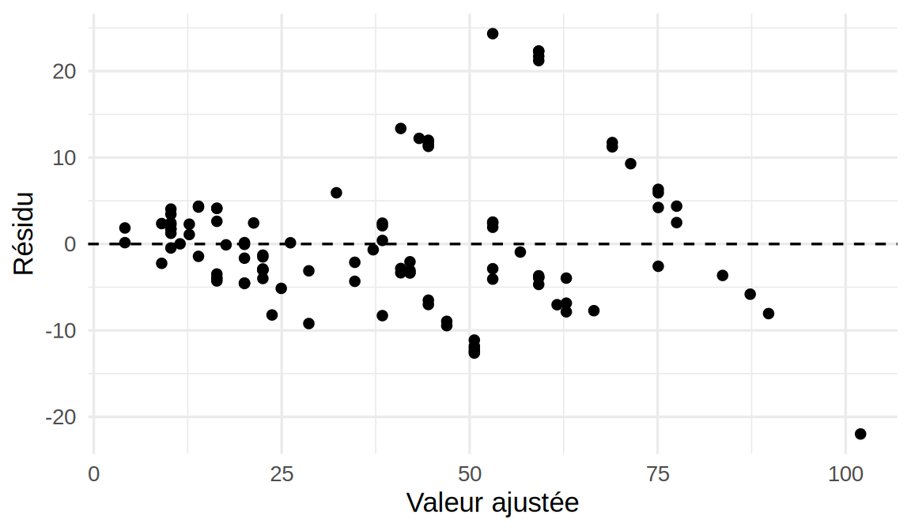
resume.pipe <- diag.pipe |>
mutate(classe = cut(Field, quantile(Field, 0:4 / 4), include.lowest = TRUE)) |>
group_by(classe) |>
summarise(n = n(), Field.moyen = mean(Field), ecart.type = sd(residu),
rapport = ecart.type / Field.moyen)
resume.pipe# A tibble: 4 × 5
classe n Field.moyen ecart.type rapport
<fct> <int> <dbl> <dbl> <dbl>
1 [5,18] 32 12.8 2.96 0.231
2 (18,35] 24 26.3 4.76 0.181
3 (35,46.5] 24 40.6 10.1 0.248
4 (46.5,85] 27 58.4 11.1 0.190gamma.chapeau <- sqrt(mean((diag.pipe$residu / diag.pipe$Field)^2))
gamma.chapeau[1] 0.2155968Le nuage des résidus s’ouvre en entonnoir. L’écart-type des résidus passe d’environ 3,0 dans le premier quart des profondeurs à environ 11,1 dans le dernier, de sorte que l’hypothèse d’homoscédasticité n’est pas plausible. Le rapport entre l’écart-type et la profondeur moyenne reste, lui, à peu près stable (de 0,18 à 0,25). C’est ce qu’on attend d’un appareil dont l’erreur est proportionnelle à la grandeur mesurée. Le modèle \(\sigma_i = \gamma x_i\) est donc raisonnable, avec \(\hat\gamma \approx 0{,}216\) : l’écart-type de l’erreur vaut environ 22 % de la profondeur mesurée sur le terrain.
- On suit la recette du 1 Simulations de Monte Carlo. Le vrai modèle utilise les estimations de a), et les valeurs de
Fieldrestent celles des données. La fonction suivante prend en argument la fonction qui donne l’écart-type de l’erreur en chaque \(x\), ce qui servira aussi en c) et en d).
b.pipe <- coef(m.pipe) # vraies valeurs de beta_0 et beta_1 dans la simulation
x.pipe <- pipeline$Field
x0 <- c(10, 70) # mesures sur le terrain pour les deux prédictions
simuler.couverture <- function(x, B, ecart.type) {
res <- replicate(B, {
y <- b.pipe[[1]] + b.pipe[[2]] * x + rnorm(length(x), sd = ecart.type(x))
ajust <- lm(y ~ x)
ic <- confint(ajust)["x", ]
ip <- predict(ajust, data.frame(x = x0), interval = "prediction")
y0 <- b.pipe[[1]] + b.pipe[[2]] * x0 + rnorm(length(x0), sd = ecart.type(x0))
c(pente = ic[[1]] <= b.pipe[[2]] & b.pipe[[2]] <= ic[[2]],
pred.10 = ip[1, "lwr"] <= y0[1] & y0[1] <= ip[1, "upr"],
pred.70 = ip[2, "lwr"] <= y0[2] & y0[2] <= ip[2, "upr"])
})
couv <- rowMeans(res)
rbind(couverture = couv, erreur.type.MC = sqrt(couv * (1 - couv) / B))
}
B <- 2000
set.seed(4300)
couv.constante <- simuler.couverture(x.pipe, B, function(x) rep(sigma(m.pipe), length(x)))
round(couv.constante, 3) pente pred.10 pred.70
couverture 0.949 0.949 0.943
erreur.type.MC 0.005 0.005 0.005Avec une variance constante et des erreurs normales, l’intervalle de Student pour \(\beta_1\) et l’intervalle de prédiction ont une couverture exactement égale à 0,95. Les trois couvertures estimées (de 0,943 à 0,949) sont à moins de 2 erreurs-types de Monte Carlo de cette valeur, l’erreur-type étant d’environ 0,005. On commence par ce cas parce que la réponse y est connue : il sert à vérifier le code avant de l’appliquer à une situation où on ne connaît pas la réponse (voir les précautions du 1 Simulations de Monte Carlo).
- On remplace l’écart-type constant par \(\hat\gamma x_i\) :
set.seed(4300)
couv.hetero <- simuler.couverture(x.pipe, B, function(x) gamma.chapeau * x)
round(couv.hetero, 3) pente pred.10 pred.70
couverture 0.871 1 0.717
erreur.type.MC 0.008 0 0.010La couverture de l’intervalle de \(\beta_1\) tombe à 0,871, nettement sous 0,95 compte tenu de l’erreur de Monte Carlo (environ 0,008). Les intervalles de prédiction se trompent dans les deux sens. À Field = 10, la couverture est pratiquement égale à 1 (1,000) : l’intervalle est beaucoup trop large. À Field = 70, elle n’est que de 0,717. L’intervalle de prédiction utilise le même \(\hat\sigma\) partout, une sorte de moyenne des variances, trop grande pour les petits défauts et trop petite pour les gros.
Pour l’erreur-type de la pente, on écrit \(\hat\beta_1 = \sum_i c_i Y_i\) avec \(c_i = (x_i-\bar x)/S_{xx}\) et \(S_{xx} = \sum_i(x_i-\bar x)^2\). Comme les \(Y_i\) sont indépendants de variances \(\sigma_i^2\), \[
Var[\hat\beta_1] = \sum_{i=1}^n c_i^2\sigma_i^2 = \frac{\sum_{i=1}^n (x_i-\bar x)^2\sigma_i^2}{S_{xx}^2}.
\] La fonction lm estime plutôt \(\hat\sigma^2/S_{xx}\). Comme \(SSE = \boldsymbol Y^\top(\boldsymbol I - \boldsymbol H)\boldsymbol Y\), on a \(E[SSE] = \mathrm{tr}\{(\boldsymbol I - \boldsymbol H)\boldsymbol\Sigma\} = \sum_i\sigma_i^2(1-h_i)\), où \(\boldsymbol\Sigma = \mathrm{diag}(\sigma_1^2,\ldots,\sigma_n^2)\). En remplaçant \(\hat\sigma^2\) par son espérance \(E[SSE]/(n-2)\), on obtient la valeur typique de l’erreur-type calculée par lm :
sxx <- sum((x.pipe - mean(x.pipe))^2)
sigma.i <- gamma.chapeau * x.pipe
et.vraie <- sqrt(sum((x.pipe - mean(x.pipe))^2 * sigma.i^2)) / sxx
h <- hatvalues(m.pipe)
et.lm <- sqrt(sum(sigma.i^2 * (1 - h)) / (length(x.pipe) - 2) / sxx)
couv.approx <- 2 * pnorm(qt(0.975, length(x.pipe) - 2) * et.lm / et.vraie) - 1
c(et.vraie = et.vraie, et.lm = et.lm, couverture.approx = couv.approx) et.vraie et.lm couverture.approx
0.05560830 0.04303393 0.87508179 L’erreur-type calculée par lm est trop petite d’un facteur d’environ \(1{,}29\). Les observations dont \(x_i\) est loin de \(\bar x\) pèsent le plus dans \(\hat\beta_1\), et ici ce sont surtout les gros défauts, dont la variance est la plus grande. En traitant l’erreur-type estimée comme fixe, la couverture approximative vaut \(2\Phi(t_{0{,}025,\,n-2}\, se_{\text{lm}}/se_{\text{vraie}})-1 \approx 0{,}875\), proche de la valeur simulée. Ce calcul confirme le résultat de la simulation par un autre chemin.
- On répète quatre fois chaque valeur de
Field:
set.seed(4300)
couv.hetero.4n <- simuler.couverture(rep(x.pipe, 4), B, function(x) gamma.chapeau * x)
round(couv.hetero.4n, 3) pente pred.10 pred.70
couverture 0.883 1 0.714
erreur.type.MC 0.007 0 0.010Les couvertures ne s’améliorent pas : elles restent au même niveau, aux erreurs de Monte Carlo près (0,883 pour la pente et 0,714 pour la prédiction à Field = 70). Le problème n’est pas une approximation asymptotique qui serait mauvaise pour \(n = 107\). Le rapport \(se_{\text{vraie}}/se_{\text{lm}}\) ne dépend pas de \(n\) quand on répète le même plan, et \(\hat\sigma^2\) converge vers une variance moyenne qui ne correspond à la variance d’aucune observation en particulier.
En pratique, ce sont les défauts profonds qui comptent pour la sécurité du pipeline. Avec le modèle à variance constante, environ 28 % des nouvelles mesures en laboratoire tomberaient hors de l’intervalle de prédiction à 95 % quand la mesure sur le terrain vaut 70, et le risque de sous-estimer la profondeur réelle serait sous-évalué. Il faut modéliser la variance. On pourrait, par exemple, utiliser les moindres carrés pondérés avec des poids \(1/x_i^2\) (argument weights de lm), ou modéliser \(\log(\texttt{Lab})\), dont la variance est à peu près constante si l’erreur est proportionnelle. Une erreur-type robuste à l’hétéroscédasticité (estimateur sandwich) corrigerait l’intervalle de la pente, mais pas l’intervalle de prédiction, qui demande un modèle pour la variance d’une nouvelle observation.
Chapitre 2 : Modèles de régression pour données binaires
Niveau facile
Exercice 1. Retour à l’énoncé
Logit. Si \(g^{-1}(\eta) = \dfrac{e^\eta}{1+e^\eta} = \pi\), alors \(1-\pi = \dfrac{1}{1+e^\eta}\) et \[g(\pi) = \log\left(\frac{\pi}{1-\pi}\right) = \log(e^\eta) = \eta.\]
Probit. Comme \(\Phi\) est une bijection strictement croissante de \(\mathbb{R}\) vers \((0,1)\), les fonctions \(g^{-1}(\eta)=\Phi(\eta)\) et \(g(u)=\Phi^{-1}(u)\) sont réciproques l’une de l’autre par construction, ce qui donne directement \(g\{g^{-1}(\eta)\} = \Phi^{-1}\{\Phi(\eta)\} = \eta\).
C-log-log. Si \(g(u)=\log\{-\log(1-u)\}=\eta\), alors \(-\log(1-u)=e^\eta\), donc \(1-u=e^{-e^\eta}\) et \(u=g^{-1}(\eta)=1-e^{-e^\eta}=\pi\). En substituant, \[g(\pi) = \log\{-\log(1-\pi)\} = \log\{-\log(e^{-e^\eta})\} = \log(e^\eta) = \eta.\]
Exercice 2. Retour à l’énoncé
Comme \(o_i = e^{\eta_i}\) et \(\pi_i = o_i/(1+o_i)\), les trois cas donnent :
- \(\eta_i = 0\) : \(o_i = e^0 = 1\), donc \(\pi_i = 1/2\) (les deux issues sont équiprobables) ;
- \(\eta_i = \log 2\) : \(o_i = e^{\log 2} = 2\), donc \(\pi_i = 2/3\) ;
- \(\eta_i = -\log 3\) : \(o_i = e^{-\log 3} = 1/3\), donc \(\pi_i = (1/3)/(4/3) = 1/4\).
Exercice 3. Retour à l’énoncé
Comme \(\mu_i = m_i\pi_i\), on a \(m_i - \mu_i = m_i(1-\pi_i)\), d’où \[\frac{\mu_i(m_i-\mu_i)}{m_i} = \frac{m_i\pi_i \cdot m_i(1-\pi_i)}{m_i} = m_i\pi_i(1-\pi_i) = Var[Y_i].\]
À \(m_i\) fixé, il s’agit donc de maximiser \(\pi_i(1-\pi_i)\). Sa dérivée par rapport à \(\pi_i\), \(\dfrac{d}{d\pi_i}\{\pi_i(1-\pi_i)\} = 1-2\pi_i\), s’annule en \(\pi_i=1/2\), et comme la dérivée seconde vaut \(-2<0\), ce point est bien un maximum, où \(Var[Y_i]=m_i/4\).
Le poids \(w_i = m_i\pi_i(1-\pi_i)\) est exactement \(Var[Y_i]\) : les observations dont la probabilité prédite est proche de \(1/2\) (les plus incertaines) reçoivent donc le plus grand poids dans l’algorithme IRLS. À l’inverse, celles dont \(\pi_i\) est proche de \(0\) ou \(1\) (presque certaines) reçoivent un poids proche de \(0\). Cela explique en partie l’instabilité de l’estimation en présence de séparation, où de nombreux \(\pi_i\) s’approchent de \(0\) ou \(1\).
Niveau moyen
Exercice 1. Retour à l’énoncé
On dérive terme à terme, pour \(j=0,1,\ldots,p\), avec \(\partial\eta_i/\partial\beta_j = x_{ij}\) (et \(x_{i0}\equiv 1\)). Le terme \(\log\binom{m_i}{y_i}\) ne dépend pas de \(\boldsymbol\beta\) et sa dérivée est donc nulle, alors que pour \(y_i\eta_i\), on a \(\partial(y_i\eta_i)/\partial\beta_j = y_ix_{ij}\). Le dernier terme se dérive en chaîne : \[\frac{\partial}{\partial\beta_j}\log(1+e^{\eta_i}) = \frac{e^{\eta_i}}{1+e^{\eta_i}}\cdot x_{ij} = \pi_i x_{ij},\] donc \(\partial\{m_i\log(1+e^{\eta_i})\}/\partial\beta_j = m_i\pi_i x_{ij}\). En combinant, \[\frac{\partial\ell}{\partial\beta_j} = \sum_{i=1}^n (y_i - m_i\pi_i)x_{ij} = \sum_{i=1}^n (y_i-\mu_i)x_{ij}.\]
Comme \(x_{ij}\) est l’élément \((i,j)\) de \(\boldsymbol{X}\), il suffit d’empiler ces \(p+1\) dérivées partielles pour obtenir \(\boldsymbol{U}(\boldsymbol{\beta}) = \boldsymbol{X}^\top(\boldsymbol{y}-\boldsymbol{\mu})\).
Exercice 2. Retour à l’énoncé
La composante \(j\) du score s’écrit \(U_j(\boldsymbol\beta) = \sum_i (y_i-\mu_i)x_{ij}\), où \(\mu_i = m_i\pi_i = m_i\, e^{\eta_i}/(1+e^{\eta_i})\). Comme \(y_i\) ne dépend pas de \(\boldsymbol\beta\), seule la dérivée de \(\mu_i\) intervient : \[\frac{\partial U_j}{\partial\beta_k} = -\sum_i \frac{\partial\mu_i}{\partial\beta_k}x_{ij} = -\sum_i m_i\frac{\partial\pi_i}{\partial\eta_i}\cdot\frac{\partial\eta_i}{\partial\beta_k}\,x_{ij}.\]
Comme \(\pi_i = e^{\eta_i}/(1+e^{\eta_i})\) est la fonction logistique, sa dérivée vérifie \(\partial\pi_i/\partial\eta_i = \pi_i(1-\pi_i)\) (propriété classique de la fonction logistique). Avec \(\partial\eta_i/\partial\beta_k = x_{ik}\), on obtient \[\frac{\partial U_j}{\partial\beta_k} = -\sum_i m_i\pi_i(1-\pi_i)\,x_{ij}x_{ik} = -\sum_i w_i x_{ij}x_{ik}.\]
Comme \(\partial U_j/\partial\beta_k\) ne dépend pas de \(\boldsymbol y\), les informations observée et espérée coïncident, et l’élément \((j,k)\) de l’information de Fisher est \(I_{jk} = -E[\partial U_j/\partial\beta_k] = -\partial U_j/\partial\beta_k =\sum_i w_i x_{ij}x_{ik}\), c’est-à-dire exactement l’élément \((j,k)\) de \(\boldsymbol{X}^\top\boldsymbol{W}\boldsymbol{X}\), d’où \(I(\boldsymbol\beta) = \boldsymbol{X}^\top\boldsymbol{W}\boldsymbol{X}\).
Exercice 3. Retour à l’énoncé
Posons \(t = \hat\beta_0+\hat\beta_1 x\) et \(s(t) = e^t/(1+e^t)\), de sorte que \(\hat\pi(x)=s(t)\), et vérifions d’abord que \(s'(t) = s(t)\{1-s(t)\}\) : \[s'(t) = \frac{e^t(1+e^t) - e^t\cdot e^t}{(1+e^t)^2} = \frac{e^t}{(1+e^t)^2} = \frac{e^t}{1+e^t}\cdot\frac{1}{1+e^t} = s(t)\{1-s(t)\}.\]
Par dérivation en chaîne, \(\hat\pi'(x) = s'(t)\cdot\dfrac{dt}{dx} = \hat\beta_1\, s(t)\{1-s(t)\} = \hat\beta_1\,\hat\pi(x)\{1-\hat\pi(x)\}\).
L’exercice 3 du niveau facile a montré que \(u(1-u)\) (pour \(u=\hat\pi(x)\)) est maximal en \(u=1/2\), où il vaut \(1/4\). Si \(\hat\beta_1>0\), la pente \(\hat\pi'(x)\) est donc maximale lorsque \(\hat\pi(x)=1/2\), où elle vaut \(\hat\beta_1/4\). Si \(\hat\beta_1<0\), la courbe est décroissante et la pente est au contraire minimale (la plus négative) en ce point, où elle vaut \(\hat\beta_1/4\). Dans les deux cas, c’est la valeur absolue \(|\hat\pi'(x)| = |\hat\beta_1|\,\hat\pi(x)\{1-\hat\pi(x)\}\) qui est maximale en \(\hat\pi(x)=1/2\), où elle vaut \(|\hat\beta_1|/4\).
Niveau difficile
Exercice 1. Retour à l’énoncé
Posons \(\delta = y_i - \hat\mu_i\), de sorte que \(y_i = \hat\mu_i+\delta\) et \(m_i-y_i = (m_i-\hat\mu_i)-\delta\), et utilisons \(\log(1+t) \approx t - t^2/2\) pour \(t\) petit. Le premier terme de \(d_i\) devient :
\[y_i\log\left(\frac{y_i}{\hat\mu_i}\right) = (\hat\mu_i+\delta)\log\left(1+\frac{\delta}{\hat\mu_i}\right) \approx (\hat\mu_i+\delta)\left(\frac{\delta}{\hat\mu_i}-\frac{\delta^2}{2\hat\mu_i^2}\right) \approx \delta + \frac{\delta^2}{2\hat\mu_i},\]
en ne conservant que les termes jusqu’à l’ordre \(\delta^2\). Le second terme s’approxime de la même façon :
\[(m_i-y_i)\log\left(\frac{m_i-y_i}{m_i-\hat\mu_i}\right) = \{(m_i-\hat\mu_i)-\delta\}\log\left(1-\frac{\delta}{m_i-\hat\mu_i}\right) \approx -\delta + \frac{\delta^2}{2(m_i-\hat\mu_i)}.\]
En additionnant les deux approximations, les termes en \(\delta\) s’annulent :
\[y_i\log\left(\frac{y_i}{\hat\mu_i}\right) + (m_i-y_i)\log\left(\frac{m_i-y_i}{m_i-\hat\mu_i}\right) \approx \frac{\delta^2}{2}\left(\frac{1}{\hat\mu_i}+\frac{1}{m_i-\hat\mu_i}\right) = \frac{\delta^2}{2}\cdot\frac{m_i}{\hat\mu_i(m_i-\hat\mu_i)}.\]
En multipliant par \(2\) (définition de \(d_i\)), on obtient \[d_i \approx \frac{\delta^2\, m_i}{\hat\mu_i(m_i-\hat\mu_i)} = \frac{(y_i-\hat\mu_i)^2\,m_i}{\hat\mu_i(m_i-\hat\mu_i)} = r_{P,i}^2.\]
En sommant sur \(i=1,\ldots,n\), on obtient alors \(D = \sum_i d_i \approx \sum_i r_{P,i}^2 = X^2_P\). L’approximation devient exacte lorsque \(\delta/\hat\mu_i\) et \(\delta/(m_i-\hat\mu_i)\) tendent vers \(0\), ce qui se produit quand \(m_i\to\infty\) à \(\pi_i\) fixé, si le modèle est bien spécifié : \(\delta=y_i-\hat\mu_i\) est alors d’ordre \(\sqrt{m_i}\), alors que \(\hat\mu_i\) et \(m_i-\hat\mu_i\) sont d’ordre \(m_i\).
Exercice 2. Retour à l’énoncé
Par définition, \(D_{\text{réduit}} = 2\{\ell(\boldsymbol y;\boldsymbol y) - \ell(\hat{\boldsymbol\mu}_r;\boldsymbol y)\}\) et \(D_{\text{complet}} = 2\{\ell(\boldsymbol y;\boldsymbol y)-\ell(\hat{\boldsymbol\mu}_c;\boldsymbol y)\}\), où \(\ell(\boldsymbol y;\boldsymbol y)\) est la log-vraisemblance du modèle saturé. Il ne faut pas voir ce terme comme propre à chaque modèle : il ne dépend que des données observées \(\boldsymbol y\), pas du modèle ajusté, et il est donc le même dans les deux expressions. En soustrayant, on a
\[D_{\text{réduit}}-D_{\text{complet}} = 2\{\ell(\boldsymbol y;\boldsymbol y)-\ell(\hat{\boldsymbol\mu}_r;\boldsymbol y)\} - 2\{\ell(\boldsymbol y;\boldsymbol y)-\ell(\hat{\boldsymbol\mu}_c;\boldsymbol y)\} = 2\{\ell(\hat{\boldsymbol\mu}_c;\boldsymbol y) - \ell(\hat{\boldsymbol\mu}_r;\boldsymbol y)\},\]
ce qui est exactement \(-2\{\ell(\text{réduit})-\ell(\text{complet})\} = G^2\). Le terme \(\ell(\boldsymbol y;\boldsymbol y)\) du modèle saturé s’annule dans la différence parce qu’il est commun aux deux déviances. Il ne dépend en effet que des données, qui sont les mêmes pour deux modèles ajustés sur le même échantillon. C’est pour cette raison que comparer des déviances revient à comparer des vraisemblances, et on n’a donc jamais à évaluer \(\ell(\boldsymbol y;\boldsymbol y)\) explicitement.
Exercice 3. Retour à l’énoncé
Fixons \(\beta\in\mathbb{R}\) et regardons le terme \((y_i-\pi_i)x_i\) pour chaque observation \(i\), où \(\pi_i = e^{\beta x_i}/(1+e^{\beta x_i}) \in (0,1)\) pour tout \(\beta\) fini.
- Si \(x_i>0\), alors \(y_i=1\) par hypothèse de séparation, donc \((y_i-\pi_i)x_i = (1-\pi_i)x_i\). Comme \(1-\pi_i>0\) et \(x_i>0\), ce terme est strictement positif ;
- Si \(x_i<0\), alors \(y_i=0\), donc \((y_i-\pi_i)x_i = -\pi_i x_i\). Comme \(\pi_i>0\) et \(x_i<0\), on a \(-\pi_i x_i>0\) : ce terme est aussi strictement positif.
Chaque terme de la somme \(U(\beta)=\sum_i(y_i-\pi_i)x_i\) est donc strictement positif, quel que soit \(\beta\in\mathbb{R}\) fini, d’où \(U(\beta)>0\) pour tout \(\beta\).
Comme \(U(\beta) = \ell'(\beta)\), la log-vraisemblance \(\ell\) est strictement croissante sur tout \(\mathbb{R}\) et n’a donc aucun point stationnaire (\(U(\beta)=0\) n’a pas de solution finie). On a alors \(\sup_{\beta\in\mathbb{R}} \ell(\beta) = \lim_{\beta\to\infty}\ell(\beta)\), et ce supremum n’est jamais atteint pour une valeur finie de \(\beta\) : l’estimateur du maximum de vraisemblance \(\hat\beta\) n’existe pas au sens usuel. Ce résultat confirme formellement, dans ce cas simple, le phénomène décrit qualitativement à la Séparation des données.
Exercice 4. Retour à l’énoncé
Prenons d’abord un \(x_i>0\) fixé : comme \(\pi_i = \dfrac{1}{1+e^{-\hat\beta x_i}}\), on a \(1-\pi_i = \dfrac{e^{-\hat\beta x_i}}{1+e^{-\hat\beta x_i}} \approx e^{-\hat\beta x_i}\) quand \(\hat\beta\to\infty\), puisque le dénominateur tend vers \(1\). Comme \(\pi_i\to 1\), le poids vérifie \[w_i = \pi_i(1-\pi_i) \approx e^{-\hat\beta x_i} \longrightarrow 0\] à un taux exponentiel en \(\hat\beta\). Un calcul symétrique donne \(w_i \approx e^{-\hat\beta|x_i|}\) pour \(x_i<0\). Dans les deux cas, \(w_i\) décroît donc exponentiellement vite vers \(0\) quand \(\hat\beta\to\infty\), c’est-à-dire plus vite que n’importe quelle décroissance polynomiale (en \(1/\hat\beta\), \(1/\hat\beta^2\), etc.).
Par conséquent, \[I(\hat\beta) = \sum_{i=1}^n w_i x_i^2 \approx \sum_{i=1}^n x_i^2\, e^{-\hat\beta|x_i|} \longrightarrow 0\] également à un taux exponentiel. La statistique de Wald s’écrit \[z_{obs} = \frac{\hat\beta}{\sqrt{\hv{\hat\beta}}} = \hat\beta\sqrt{I(\hat\beta)}.\] Deux vitesses s’affrontent ici : \(\hat\beta\) croît linéairement, alors que \(\sqrt{I(\hat\beta)}\) décroît exponentiellement, et c’est l’exponentielle qui l’emporte. Pour conclure proprement, notons que \(w_i = e^{-\hat\beta|x_i|}/(1+e^{-\hat\beta|x_i|})^2 \le e^{-\hat\beta|x_i|}\) exactement, pour \(x_i>0\) comme pour \(x_i<0\). Avec \(c=\min_i|x_i|>0\), on a donc \(I(\hat\beta)\le e^{-c\hat\beta}\sum_i x_i^2\), d’où \[0 < z_{obs} = \hat\beta\sqrt{I(\hat\beta)} \le \Big(\sum_{i=1}^n x_i^2\Big)^{1/2}\,\hat\beta\, e^{-c\hat\beta/2} \longrightarrow 0 \quad\text{quand } \hat\beta\to\infty,\] puisque \(t\,e^{-at}\to 0\) pour tout \(a>0\). Par exemple, avec \(x=(-2,-1,1,2)\), on obtient \(z_{obs}\approx 0{,}58\), \(0{,}095\) et \(0{,}0013\) pour \(\hat\beta=5\), \(10\) et \(20\). C’est le phénomène de Hauck-Donner : plus l’algorithme pousse \(\hat\beta\) loin avant de s’arrêter, plus la statistique de Wald \(z_{obs}\) s’effondre vers \(0\), ce qui donne l’illusion d’un effet non significatif.
Exercices appliqués
Exercice appliqué 1. Retour à l’énoncé
- On construit la réponse et on compare les deux modèles :
library(dplyr)
library(GLMsData)
data(nminer)
nminer <- nminer |>
mutate(Detecte = as.numeric(Minerab > 0))
all(nminer$Detecte == nminer$Miners)[1] TRUEmod1.nminer <- glm(Detecte ~ Area + Grazed + Shrubs + Timber,
data = nminer, family = binomial)
mod2.nminer <- glm(Detecte ~ Eucs + Grazed + Bulokes,
data = nminer, family = binomial)
c(modele.1 = AIC(mod1.nminer), modele.2 = AIC(mod2.nminer))modele.1 modele.2
46.86053 24.94172 La variable construite coïncide avec Miners. Le modèle 2 a le plus petit AIC (24,9 contre 46,9), et on le préfère. Les deux modèles ne sont pas emboîtés, puisque chacun contient des variables que l’autre n’a pas (Eucs et Bulokes d’un côté, Area, Shrubs et Timber de l’autre). On ne peut donc pas les comparer par une différence de déviances, alors que l’AIC s’applique.
- Les trois méthodes partent du modèle additif à six variables (ou du modèle vide, pour forward). L’argument
trace = 0supprime l’affichage des étapes.
# warning: false masque l'avertissement « fitted probabilities numerically 0 or 1 »,
# répété à presque chaque étape (voir c)
complet.nminer <- glm(Detecte ~ Eucs + Area + Grazed + Shrubs + Bulokes + Timber,
data = nminer, family = binomial)
vide.nminer <- glm(Detecte ~ 1, data = nminer, family = binomial)
selection.nminer <- list(
backward = step(complet.nminer, direction = "backward", trace = 0),
forward = step(vide.nminer, direction = "forward",
scope = formula(complet.nminer), trace = 0),
stepwise = step(complet.nminer, direction = "both", trace = 0)
)
t(sapply(selection.nminer, function(m)
c(termes = paste(sort(attr(terms(m), "term.labels")), collapse = " + "),
AIC = format(round(AIC(m), 2))))) termes AIC
backward "Eucs + Grazed + Shrubs + Timber" "19.27"
forward "Eucs + Grazed + Shrubs + Timber" "19.27"
stepwise "Eucs + Grazed + Shrubs + Timber" "19.27"Les trois méthodes retiennent le même modèle, avec Eucs, Grazed, Shrubs et Timber, et un AIC de 19,27. Ce n’est pas garanti en général, puisque chaque méthode ne parcourt qu’un chemin parmi les \(2^6 = 64\) sous-modèles possibles.
- On réajuste le modèle retenu, cette fois en laissant les avertissements visibles :
retenu.nminer <- glm(Detecte ~ Eucs + Grazed + Shrubs + Timber,
data = nminer, family = binomial)Warning: glm.fit: fitted probabilities numerically 0 or 1 occurredsummary(retenu.nminer)$coefficients Estimate Std. Error z value Pr(>|z|)
(Intercept) -6.7085742 4.3062196 -1.557880 0.11926166
Eucs 1.4940621 0.8688497 1.719586 0.08550766
Grazed 12.7870136 8.1296038 1.572895 0.11574312
Shrubs -5.9791510 4.5601279 -1.311181 0.18979678
Timber -0.5258369 0.3294490 -1.596110 0.11046417round(sort(fitted(retenu.nminer)), 4) 23 25 24 1 27 9 2 19 22 12 26
0.0000 0.0000 0.0000 0.0000 0.0000 0.0000 0.0000 0.0041 0.0041 0.0757 0.1245
21 7 14 18 29 28 15 8 3 5 11
0.2406 0.2556 0.2724 0.6192 0.7319 0.7875 0.9318 0.9654 0.9876 0.9998 0.9999
4 6 31 16 20 13 10 17 30
1.0000 1.0000 1.0000 1.0000 1.0000 1.0000 1.0000 1.0000 1.0000 R signale des probabilités ajustées numériquement égales à 0 ou à 1. La plus petite vaut environ \(8{,}66\times10^{-12}\), et 18 des 31 transects ont une probabilité ajustée à moins de 0,001 de 0 ou de 1. Les coefficients sont grands pour des variables de cette échelle (celui de Grazed vaut environ 12,8, soit un rapport de cotes de l’ordre de \(e^{13}\)), et leurs erreurs-types sont du même ordre que les coefficients eux-mêmes. Ce sont les symptômes de la séparation (Séparation des données).
Pour distinguer une séparation d’une quasi-séparation, on resserre le critère de convergence. Sous séparation complète ou quasi complète, la vraisemblance augmente sans fin et les coefficients continuent de croître à chaque itération supplémentaire. Si l’estimateur du maximum de vraisemblance existe, ils ne bougent plus.
strict.nminer <- update(retenu.nminer,
control = glm.control(epsilon = 1e-14, maxit = 100))
rbind(defaut = coef(retenu.nminer), strict = coef(strict.nminer)) (Intercept) Eucs Grazed Shrubs Timber
defaut -6.708574 1.494062 12.78701 -5.979151 -0.5258369
strict -6.708574 1.494062 12.78701 -5.979151 -0.5258369c(iterations.defaut = retenu.nminer$iter, iterations.strict = strict.nminer$iter)iterations.defaut iterations.strict
9 10 Les coefficients sont identiques et l’algorithme converge en 10 itérations. L’estimateur du maximum de vraisemblance existe donc : il n’y a pas de séparation au sens strict, mais les données en sont proches. Le tableau suivant montre d’où vient ce problème :
nminer |>
mutate(eucalyptus = if_else(Eucs >= 12, "12 ou plus", "moins de 12")) |>
count(eucalyptus, Detecte) eucalyptus Detecte n
1 12 ou plus 0 1
2 12 ou plus 1 15
3 moins de 12 0 13
4 moins de 12 1 2Avec au moins 12 eucalyptus, le mineur bruyant est détecté dans presque tous les transects, et avec moins de 12, il est absent de presque tous. Eucs sépare donc presque les deux groupes à elle seule, et les autres variables classent les quelques transects restants. Quelques observations mal classées suffisent à garder les coefficients finis.
- On compare les tests de Wald aux tests du rapport de vraisemblance :
rv.nminer <- drop1(retenu.nminer, test = "Chisq")
rv.nminerSingle term deletions
Model:
Detecte ~ Eucs + Grazed + Shrubs + Timber
Df Deviance AIC LRT Pr(>Chi)
<none> 9.272 19.272
Eucs 1 37.161 45.161 27.8892 1.285e-07 ***
Grazed 1 14.986 22.986 5.7137 0.016833 *
Shrubs 1 12.075 20.075 2.8026 0.094111 .
Timber 1 16.865 24.865 7.5926 0.005861 **
---
Signif. codes: 0 '***' 0.001 '**' 0.01 '*' 0.05 '.' 0.1 ' ' 1Aucune valeur-p de Wald n’est sous 5 % (Eucs : \(0{,}086\) ; Grazed : \(0{,}12\) ; Timber : \(0{,}11\)). Par contre, le test du rapport de vraisemblance conclut que Eucs (valeur-p \(\approx 1{,}28\times10^{-7}\)), Timber (valeur-p \(\approx 0{,}0059\)) et Grazed (valeur-p \(\approx 0{,}017\)) sont significatives. C’est le phénomène de Hauck-Donner : quand les données sont presque séparées, la log-vraisemblance est plate autour de \(\hat\beta_j\), l’erreur-type de Wald gonfle et le test perd sa puissance. Le test du rapport de vraisemblance compare directement les vraisemblances avec et sans la variable et n’a pas ce défaut. Ici, il faut donc rapporter ce dernier.
Seule Shrubs n’est pas significative au seuil de 5 % (valeur-p \(\approx 0{,}094\)). Elle reste dans le modèle parce que la sélection se fait par l’AIC, et non par un test au seuil de 5 %. Retirer un terme à un paramètre fait baisser l’AIC exactement quand \(G^2 < 2\), ce qui équivaut à un test du rapport de vraisemblance au seuil \(P(\chi^2_1 > 2) \approx 0{,}157\). Comme la valeur-p de Shrubs est sous ce seuil, son retrait ferait augmenter l’AIC (de 19,27 à 20,07).
- Avec le BIC, la pénalité par paramètre passe de 2 à \(\log(31) \approx 3{,}43\) :
bic.nminer <- step(complet.nminer, direction = "both", k = log(nrow(nminer)), trace = 0)
attr(terms(bic.nminer), "term.labels")[1] "Eucs" "Grazed" "Timber"rc.nminer <- exp(cbind(RC = coef(bic.nminer), confint(bic.nminer)))
signif(rc.nminer, 3) RC 2.5 % 97.5 %
(Intercept) 1.76e-03 1.45e-08 2.68e-01
Eucs 2.13e+00 1.34e+00 7.47e+00
Grazed 8.66e+02 2.90e+00 8.03e+08
Timber 8.18e-01 5.65e-01 9.82e-01Le BIC écarte Shrubs, ce qui est cohérent avec d) : son seuil implicite est d’environ \(0{,}064\), et la valeur-p de Shrubs le dépasse. Dans ce modèle, chaque eucalyptus supplémentaire dans le transect multiplie la cote de détection du mineur bruyant par environ 2,1, les autres variables restant fixes. L’intervalle par vraisemblance profilée, de 1,3 à 7,5, est très large. Le sens de l’effet est clair, mais sa taille est mal déterminée. Le coefficient de Grazed est positif, et comme Grazed vaut 1 pour une parcelle non pâturée, la détection est plus probable dans les parcelles non pâturées. Son intervalle va de 2,9 à plus de \(10^{8}\) : les données ne disent presque rien de la taille de cet effet.
Ces conclusions reposent sur 31 transects et sur un modèle choisi parmi 64 à l’aide des mêmes données, de sorte que les valeurs-p et les intervalles sont optimistes. Le tableau de c) suggère d’ailleurs un effet de seuil du nombre d’eucalyptus plutôt qu’un effet linéaire sur l’échelle logit, ce qui est l’hypothèse de l’étude d’origine (Maron 2007). Avec des données aussi proches de la séparation, une méthode qui stabilise l’estimation (régression logistique pénalisée de Firth, ou régularisation, 6 Sélection de variables et régularisation) donnerait des rapports de cotes plus raisonnables.
Exercice appliqué 2. Retour à l’énoncé
- On calcule les proportions observées et on les représente :
library(dplyr)
library(ggplot2)
data(troutegg, package = "faraway")
troutegg <- troutegg |>
mutate(prop = survive / total)
ggplot(troutegg, aes(period, prop, colour = location, group = location)) +
geom_point(size = 2) +
geom_line() +
labs(x = "Semaines avant le retrait (period)", y = "Proportion d'œufs survivants",
colour = "Emplacement") +
theme_minimal(base_size = 13)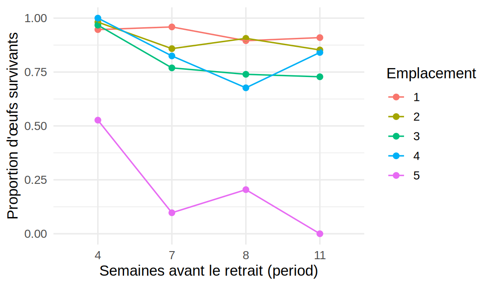
La survie diminue avec la durée d’enfouissement à tous les emplacements, surtout entre 4 et 7 semaines. L’emplacement 5 se distingue nettement : la proportion de survivants y passe de 0,53 à 4 semaines à 0,00 à 11 semaines (aucun des 138 œufs de la dernière boîte n’a survécu). Les courbes ne sont pas parallèles, même sur l’échelle des proportions, ce qui laisse présager que le modèle additif aura de la difficulté à reproduire toutes les cellules.
- On ajuste le modèle binomial et on trace les résidus de déviance :
mod.troutegg <- glm(cbind(survive, total - survive) ~ location + period,
family = binomial, data = troutegg)
res.troutegg <- troutegg |>
mutate(numero = row_number(),
residu = residuals(mod.troutegg, type = "deviance"))
ggplot(res.troutegg, aes(numero, residu)) +
geom_point(size = 2) +
geom_hline(yintercept = 0, linetype = "dashed") +
geom_hline(yintercept = c(-3, 3), linetype = "dotted", colour = "red") +
labs(x = "Numéro d'observation", y = "Résidu de déviance") +
theme_minimal(base_size = 13)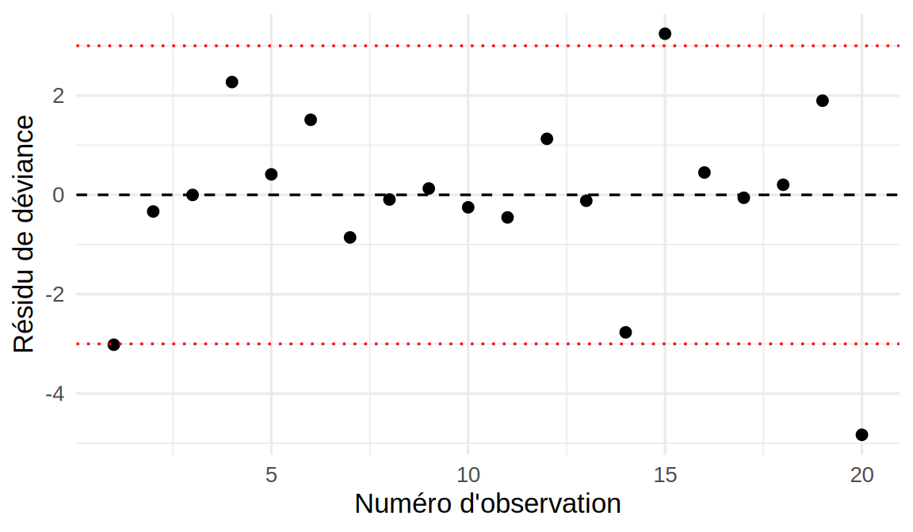
res.troutegg |>
filter(abs(residu) > 2) |>
dplyr::select(numero, location, period, survive, total, residu) numero location period survive total residu
1 1 1 4 89 94 -3.017430
4 4 4 4 104 104 2.270686
14 14 4 8 67 99 -2.767887
15 15 5 8 18 88 3.243402
20 20 5 11 0 138 -4.830463X2.troutegg <- sum(residuals(mod.troutegg, type = "pearson")^2)
ddl.troutegg <- df.residual(mod.troutegg)
data.frame(
Statistique = c("Déviance", "Khi-deux de Pearson"),
Valeur = c(deviance(mod.troutegg), X2.troutegg),
ddl = ddl.troutegg,
valeur.p = pchisq(c(deviance(mod.troutegg), X2.troutegg), df = ddl.troutegg,
lower.tail = FALSE)
) Statistique Valeur ddl valeur.p
1 Déviance 64.49512 12 3.379416e-09
2 Khi-deux de Pearson 63.96386 12 4.235011e-093 résidus dépassent 3 en valeur absolue (observations 1, 15, 20), sur seulement 20 observations. Comme les \(m_i\) vont de 86 à 155 œufs et que les effectifs attendus \(m_i\hat\pi_i\) et \(m_i(1-\hat\pi_i)\) sont d’au moins 5 dans 16 des 20 boîtes, l’approximation \(\chi^2\) des tests d’adéquation est raisonnable (les exceptions sont des boîtes à 4 semaines, où presque tous les œufs survivent). Les deux tests rejettent nettement l’adéquation du modèle (valeurs-p \(\approx 3{,}38\times10^{-9}\) pour la déviance et \(4{,}24\times10^{-9}\) pour le khi-deux de Pearson). La déviance, 64,5, vaut environ 5 fois ses 12 degrés de liberté.
- On estime \(\phi\) et on ajuste le modèle quasibinomial :
phi.troutegg <- X2.troutegg / ddl.troutegg
phi.troutegg[1] 5.330322mod.quasi.troutegg <- glm(cbind(survive, total - survive) ~ location + period,
family = quasibinomial, data = troutegg)
coef.bin <- summary(mod.troutegg)$coefficients
coef.quasi <- summary(mod.quasi.troutegg)$coefficients
round(cbind(Estimate = coef.bin[, "Estimate"],
"SE binomial" = coef.bin[, "Std. Error"],
"SE quasi" = coef.quasi[, "Std. Error"],
"Pr(>|z|) binom." = coef.bin[, "Pr(>|z|)"],
"Pr(>|t|) quasi" = coef.quasi[, "Pr(>|t|)"]), 4) Estimate SE binomial SE quasi Pr(>|z|) binom. Pr(>|t|) quasi
(Intercept) 4.6358 0.2813 0.6495 0.0000 0.0000
location2 -0.4168 0.2461 0.5682 0.0903 0.4773
location3 -1.2421 0.2194 0.5066 0.0000 0.0305
location4 -0.9509 0.2288 0.5281 0.0000 0.0970
location5 -4.6138 0.2502 0.5777 0.0000 0.0000
period7 -2.1702 0.2384 0.5504 0.0000 0.0020
period8 -2.3256 0.2429 0.5609 0.0000 0.0014
period11 -2.4500 0.2341 0.5405 0.0000 0.0007On obtient \(\tilde\phi_P \approx 5{,}3\) : la variance observée est environ 5,3 fois celle que prévoit le modèle binomial. Les estimations ne changent pas, mais les erreurs-types sont multipliées par \(\sqrt{\tilde\phi_P} \approx 2{,}31\), et les valeurs-p viennent maintenant d’un test \(t\) à 12 degrés de liberté. Une seule conclusion change au seuil de 5 %. location4 (emplacement 4 contre emplacement 1) passe d’une valeur-p d’environ \(3{,}23\times10^{-5}\) à \(0{,}097\), et n’est plus significatif. location3 le reste, mais de justesse (valeur-p \(\approx 0{,}031\)), et location2, qui ne l’était déjà pas, l’est encore moins (valeur-p \(\approx 0{,}48\)).
Pour juger des facteurs en entier, on compare les modèles emboîtés avec le test \(F\) du 3 Modèles linéaires généralisés (GLM), qui tient compte de l’estimation de \(\phi\) :
drop1(mod.quasi.troutegg, test = "F")Single term deletions
Model:
cbind(survive, total - survive) ~ location + period
Df Deviance F value Pr(>F)
<none> 64.50
location 4 913.56 39.494 8.142e-07 ***
period 3 228.57 10.176 0.001288 **
---
Signif. codes: 0 '***' 0.001 '**' 0.01 '*' 0.05 '.' 0.1 ' ' 1Les deux facteurs restent nettement significatifs (valeur-p \(\approx 8{,}14\times10^{-7}\) pour l’emplacement et \(0{,}0013\) pour la période). Le modèle binomial exagérait la précision des estimations : la conclusion globale tient, mais certaines comparaisons deux à deux ne sont plus établies.
- On reprend les diagnostics du chapitre :
diag.troutegg <- troutegg |>
mutate(numero = row_number(),
pi.chapeau = fitted(mod.quasi.troutegg),
levier = hatvalues(mod.quasi.troutegg),
cook = cooks.distance(mod.quasi.troutegg))
ggplot(diag.troutegg, aes(prop, pi.chapeau)) +
geom_abline(intercept = 0, slope = 1, linetype = "dashed") +
geom_point(size = 2) +
geom_text(aes(label = numero), nudge_x = 0.04, size = 3) +
coord_equal(xlim = c(0, 1), ylim = c(0, 1)) +
labs(x = expression(tilde(pi)[i]), y = expression(hat(pi)[i])) +
theme_minimal(base_size = 13)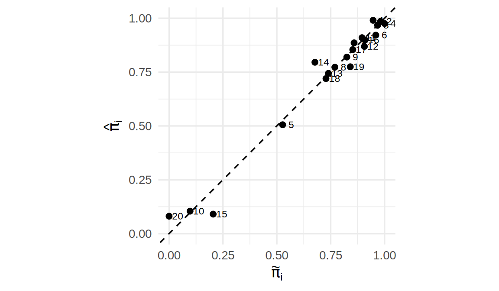
p1.troutegg <- length(coef(mod.quasi.troutegg))
seuil.levier <- 2 * p1.troutegg / nrow(troutegg)
seuil.levier[1] 0.8diag.troutegg |>
arrange(desc(cook)) |>
dplyr::select(numero, location, period, prop, pi.chapeau, levier, cook) |>
head(5) numero location period prop pi.chapeau levier cook
14 14 4 8 0.6767677 0.79565154 0.4647627 0.32740019
20 20 5 11 0.0000000 0.08106621 0.3786318 0.27996745
19 19 4 11 0.8409091 0.77469241 0.5591774 0.22375827
15 15 5 8 0.2045455 0.09082420 0.2992036 0.19690345
5 5 5 4 0.5268817 0.50550147 0.7826887 0.06609963Les points suivent la droite identité, sans courbure systématique, de sorte que la linéarité sur l’échelle logit n’est pas en cause. Aucun levier ne dépasse le seuil \(2(p+1)/n = 0{,}8\) (le plus grand vaut environ \(0{,}78\)). Les distances de Cook les plus grandes sont celles des observations 14, 20, 19, 15, toutes à 8 ou à 11 semaines et aux emplacements 4 ou 5, là où l’écart entre les courbes de a) et un modèle additif est le plus visible. L’observation 20 (emplacement 5, 11 semaines) est la plus mal ajustée : aucun œuf n’a survécu, alors que le modèle prédit une probabilité de survie d’environ 0,081.
- Le paramètre de dispersion représente ici une variabilité de la survie d’une boîte à l’autre qui n’est pas expliquée par l’emplacement et la durée. Le modèle binomial suppose que les œufs d’une même boîte survivent indépendamment les uns des autres, avec la même probabilité. Or les œufs d’une boîte partagent le même microhabitat (sédiments, oxygénation, température de l’eau, éventuelle infection fongique qui se propage dans la boîte). Leurs sorts sont donc positivement corrélés, ce qui gonfle la variance du nombre de survivants au-delà de \(m_i\pi_i(1-\pi_i)\). Une variation de \(\pi_i\) d’une boîte à l’autre produit le même effet.
Ce paramètre ne corrige pas tout. Les résidus de d) montrent aussi un défaut de la moyenne : à l’emplacement 5, la survie chute beaucoup plus vite avec la durée qu’ailleurs, ce que le modèle additif sur l’échelle logit ne peut pas reproduire. Une partie de \(\tilde\phi_P\) vient donc d’une interaction location:period absente du modèle. On ne peut cependant pas l’ajouter pour le vérifier, parce que le modèle avec interaction compte 20 paramètres pour 20 observations : il est saturé, sans degré de liberté pour estimer \(\phi\). Avec une seule boîte par combinaison, les données ne permettent pas de séparer la surdispersion d’une interaction. Seules des répétitions (plusieurs boîtes par emplacement et par période) le permettraient.
Chapitre 3 : Modèles linéaires généralisés (GLM)
Niveau facile
Exercice 1. Retour à l’énoncé
Écrivons \(f(y) = \exp\{-\lambda y + \log\lambda\}\). En posant \(\theta=-\lambda\) (donc \(\lambda=-\theta\)), on a \(-\lambda y = y\theta\) et \(\log\lambda = \log(-\theta)\), ce qui donne \[f(y) = \exp\{y\theta - b(\theta)\}, \qquad b(\theta) = -\log(-\theta), \qquad \phi=1, \qquad a(y,\phi)=1.\]
Les dérivées valent \(b'(\theta) = -1/\theta\) et \(b''(\theta) = 1/\theta^2\), et la substitution \(\theta=-\lambda\) donne : \[E[Y] = b'(\theta) = -\frac{1}{-\lambda} = \frac{1}{\lambda}, \qquad Var[Y] = \phi\,b''(\theta) = \frac{1}{(-\lambda)^2} = \frac{1}{\lambda^2},\] ce qui correspond bien aux moments usuels de la loi exponentielle. Notez que \(b(\theta)=-\log(-\theta)\) est la même fonction cumulante que pour la loi gamma, parce que la loi exponentielle est le cas particulier \(\alpha=1\) de la loi gamma.
Exercice 2. Retour à l’énoncé
La dérivée première vaut \(b'(\theta) = m\cdot\dfrac{e^\theta}{1+e^\theta} = m\pi = \mu\), et une seconde dérivation (dérivée de la fonction logistique) donne : \[b''(\theta) = m\pi(1-\pi).\]
En substituant \(\pi = \mu/m\) et \(1-\pi = (m-\mu)/m\) : \[V(\mu) = b''(\theta) = m\cdot\frac{\mu}{m}\cdot\frac{m-\mu}{m} = \frac{\mu(m-\mu)}{m}.\]
Exercice 3. Retour à l’énoncé
Ici, \(b'(\theta) = e^\theta\). En posant \(\mu = b'(u) = e^u\), la condition de lien canonique \(g\{b'(u)\}=u\) devient \(g(e^u) = u\). Comme \(\mu=e^u\) équivaut à \(u = \log(\mu)\), on obtient \(g(\mu) = \log(\mu)\), ce qui est bien le lien canonique annoncé pour la loi de Poisson.
Niveau moyen
Exercice 1. Retour à l’énoncé
On calcule \(\dfrac{\partial\log f}{\partial\theta} = \dfrac{y-b'(\theta)}{\phi}\), et la première identité donne \[E\left[\frac{Y-b'(\theta)}{\phi}\right] = 0 \quad\Longrightarrow\quad E[Y] = b'(\theta).\]
En dérivant une seconde fois, \(\dfrac{\partial^2\log f}{\partial\theta^2} = -\dfrac{b''(\theta)}{\phi}\), donc \(-E\!\left[\dfrac{\partial^2\log f}{\partial\theta^2}\right] = \dfrac{b''(\theta)}{\phi}\), et la seconde identité donne \[Var\left[\frac{Y-b'(\theta)}{\phi}\right] = \frac{Var[Y]}{\phi^2} = \frac{b''(\theta)}{\phi} \quad\Longrightarrow\quad Var[Y] = \phi\, b''(\theta).\]
Exercice 2. Retour à l’énoncé
Chaque facteur de la règle en chaîne se calcule comme suit :
- \(\dfrac{\partial\ell_i}{\partial\theta_i} = \dfrac{y_i-b'(\theta_i)}{\phi} = \dfrac{y_i-\mu_i}{\phi}\) ;
- puisque \(\mu_i = b'(\theta_i)\), on a \(\dfrac{\partial\mu_i}{\partial\theta_i} = b''(\theta_i) = V(\mu_i)\), donc \(\dfrac{\partial\theta_i}{\partial\mu_i} = \dfrac{1}{V(\mu_i)}\) ;
- puisque \(g(\mu_i)=\eta_i\), on a \(\dfrac{\partial\eta_i}{\partial\mu_i}=g'(\mu_i)\), donc \(\dfrac{\partial\mu_i}{\partial\eta_i} = \dfrac{1}{g'(\mu_i)}\) ;
- \(\dfrac{\partial\eta_i}{\partial\beta_j} = x_{ij}\).
En multipliant les quatre facteurs, \[\frac{\partial\ell_i}{\partial\beta_j} = \frac{y_i-\mu_i}{\phi}\cdot\frac{1}{V(\mu_i)}\cdot\frac{1}{g'(\mu_i)}\cdot x_{ij},\] et en sommant sur \(i\), on obtient la formule annoncée.
Cas du lien canonique. Le lien canonique satisfait \(g=(b')^{-1}\), c’est-à-dire \(\theta = g(\mu)\). En dérivant l’identité \(b'\{g(\mu)\}=\mu\) par rapport à \(\mu\), on obtient \(1 = b''\{g(\mu)\}\,g'(\mu) = V(\mu)\,g'(\mu)\), donc \(V(\mu)g'(\mu)=1\). Dans le score général, le facteur \(1/\{V(\mu_i)g'(\mu_i)\}\) vaut alors \(1\) pour chaque \(i\), d’où \[U_j(\boldsymbol\beta) = \frac{1}{\phi}\sum_{i=1}^n (y_i-\mu_i)x_{ij} \quad\Longrightarrow\quad \boldsymbol U(\boldsymbol\beta) = \frac{1}{\phi}\boldsymbol X^\top(\boldsymbol y-\boldsymbol\mu).\]
Ce résultat explique la simplification du score (à \(\phi\) près) pour la régression logistique (2 Modèles de régression pour données binaires) et la régression de Poisson (Exemple détaillé : la régression de Poisson), puisque les liens logit et log sont les liens canoniques de leurs lois respectives.
Exercice 3. Retour à l’énoncé
Comme \(g(\mu) = -1/\mu = -\mu^{-1}\), la dérivée vaut \(g'(\mu) = \mu^{-2} = 1/\mu^2\), et la multiplication par \(V(\mu)=\mu^2\) donne : \[V(\mu)\,g'(\mu) = \mu^2 \cdot \frac{1}{\mu^2} = 1,\] ce qui est cohérent avec le fait que \(g(\mu)=-1/\mu\) est le lien canonique de la loi gamma. La réciproque ne vaut qu’à une constante additive près : \(V(\mu)g'(\mu)=1\) donne \(g'(\mu)=1/V(\mu)=d\theta/d\mu\), donc \(g(\mu)=\theta+c\). Le score associé a donc la forme simplifiée \(U(\boldsymbol\beta) = \boldsymbol X^\top(\boldsymbol y-\boldsymbol\mu)/\phi\).
Niveau difficile
Exercice 1. Retour à l’énoncé
Posons \(c_i = 1/\{V(\mu_i)g'(\mu_i)\}\), de sorte que \(U_j(\boldsymbol\beta) = \frac1\phi\sum_i (y_i-\mu_i)c_i x_{ij}\). On dérive ensuite par rapport à \(\beta_k\) : comme \(\mu_i\) (et donc \(c_i\)) dépend de \(\boldsymbol\beta\), la règle du produit donne deux termes : \[\frac{\partial U_j}{\partial\beta_k} = \frac1\phi\sum_i\left[-\frac{\partial\mu_i}{\partial\beta_k}c_i x_{ij} + (y_i-\mu_i)\frac{\partial c_i}{\partial\beta_k}x_{ij}\right].\]
En prenant l’espérance, le second terme s’annule car \(E[y_i-\mu_i]=0\) (et \(\partial c_i/\partial\beta_k\) ne dépend pas de \(y_i\)) : \[E\left[\frac{\partial U_j}{\partial\beta_k}\right] = -\frac1\phi\sum_i c_i x_{ij}\,\frac{\partial\mu_i}{\partial\beta_k}.\]
Par la règle en chaîne, \(\dfrac{\partial\mu_i}{\partial\beta_k} = \dfrac{\partial\mu_i}{\partial\eta_i}\cdot\dfrac{\partial\eta_i}{\partial\beta_k} = \dfrac{x_{ik}}{g'(\mu_i)}\) (comme à l’exercice 2 du niveau moyen). En substituant, \[E\left[\frac{\partial U_j}{\partial\beta_k}\right] = -\frac1\phi\sum_i \frac{1}{V(\mu_i)g'(\mu_i)}\cdot\frac{1}{g'(\mu_i)}\,x_{ij}x_{ik} = -\frac1\phi\sum_i \frac{x_{ij}x_{ik}}{V(\mu_i)[g'(\mu_i)]^2}.\]
En posant \(w_i = 1/\{V(\mu_i)[g'(\mu_i)]^2\}\), l’élément \((j,k)\) de l’information de Fisher est \[I_{jk}(\boldsymbol\beta) = -E\left[\frac{\partial U_j}{\partial\beta_k}\right] = \frac1\phi\sum_i w_i x_{ij}x_{ik},\] ce qui correspond exactement à l’élément \((j,k)\) de \(\frac1\phi \boldsymbol X^\top\boldsymbol W\boldsymbol X\), où \(\boldsymbol W=\mathrm{diag}(w_1,\ldots,w_n)\). Ainsi, \(I(\boldsymbol\beta) = \frac1\phi\boldsymbol X^\top\boldsymbol W\boldsymbol X\) et la variance asymptotique de \(\hat{\boldsymbol\beta}\) est \(I(\boldsymbol\beta)^{-1} = \phi\,(\boldsymbol X^\top\boldsymbol W\boldsymbol X)^{-1}\). En pratique, on l’estime en évaluant \(\boldsymbol W\) en \(\hat{\boldsymbol\beta}\).
Exercice 2. Retour à l’énoncé
En substituant \(\pi=\mu/m\) : \[ \begin{aligned} \binom{m}{y}\pi^y(1-\pi)^{m-y} &=\frac{m(m-1)\cdots(m-y+1)}{y!}\left(\frac{\mu}{m}\right)^y\left(1-\frac{\mu}{m}\right)^{m-y}\\ &= \frac{\mu^y}{y!}\cdot\underbrace{\frac{m(m-1)\cdots(m-y+1)}{m^y}}_{(A)}\cdot\underbrace{\left(1-\frac{\mu}{m}\right)^{m-y}}_{(B)}. \end{aligned} \]
Terme (A). Pour \(y\) fixé, \[\frac{m(m-1)\cdots(m-y+1)}{m^y} = \prod_{k=0}^{y-1}\left(1-\frac{k}{m}\right) \longrightarrow 1 \quad\text{quand } m\to\infty,\] puisque chaque facteur tend vers \(1\) et qu’il y en a un nombre fini (\(y\) facteurs).
Terme (B). Écrivons \((1-\mu/m)^{m-y} = (1-\mu/m)^m \cdot (1-\mu/m)^{-y}\) : le second facteur tend vers \(1\) puisque \(\mu/m\to 0\), et le premier est la limite classique \[\left(1-\frac{\mu}{m}\right)^m \longrightarrow e^{-\mu} \quad\text{quand } m\to\infty.\] Ainsi, \((B) \to e^{-\mu}\).
En combinant (A) et (B), \[\binom{m}{y}\pi^y(1-\pi)^{m-y} \longrightarrow \frac{\mu^y}{y!}\cdot 1 \cdot e^{-\mu} = \frac{e^{-\mu}\mu^y}{y!},\] ce qui est bien la fonction de masse de la loi \(\mathcal{P}(\mu)\).
Exercice 3. Retour à l’énoncé
Sous \(H_0\), \(\hat\alpha_{MV} \overset{\cdot}{\sim} \mathcal N(0,v)\), et comme la loi normale est symétrique autour de \(0\), on a \(P(\hat\alpha_{MV}>0) = P(\hat\alpha_{MV}<0) = 1/2\) (asymptotiquement).
Cas \(\hat\alpha_{MV} \leq 0\) (probabilité \(\to 1/2\)). L’estimateur contraint est alors \(\hat\alpha^+ = 0\), c’est-à-dire que le maximum de la log-vraisemblance sur \([0,\infty)\) est atteint exactement à la frontière. Dans ce cas, la statistique vaut \(Q = 2\{\ell(\hat\alpha^+)-\ell(0)\} = 2\{\ell(0)-\ell(0)\} = 0\), de sorte que \(Q\) prend la valeur \(0\) avec probabilité \(\to 1/2\) : c’est la composante \(\chi^2_0\) (loi dégénérée en \(0\)) du mélange.
Cas \(\hat\alpha_{MV} > 0\) (probabilité \(\to 1/2\)). La contrainte \(\alpha\geq 0\) n’est alors pas active : \(\hat\alpha^+ = \hat\alpha_{MV}\), et \(Q = 2\{\ell(\hat\alpha_{MV})-\ell(0)\}\) coïncide avec la statistique non contrainte, qui suit une loi \(\chi^2_1\) par le résultat (iii). Il faut en fait cette loi conditionnellement à \(\hat\alpha_{MV}>0\), alors que (iii) ne donne que la loi marginale. Asymptotiquement, \(2\{\ell(\hat\alpha_{MV})-\ell(0)\}\approx\hat\alpha_{MV}^2/v=Z^2\), avec \(Z=\hat\alpha_{MV}/\sqrt v \overset{\cdot}{\sim}\mathcal N(0,1)\). Par symétrie de la loi normale, \(Z^2\) suit encore une loi \(\chi^2_1\) conditionnellement à \(Z>0\).
En combinant les deux cas, chacun de probabilité asymptotique \(1/2\), la loi de \(Q\) sous \(H_0\) est bien le mélange \[Q \ \overset{\cdot}{\sim}\ \tfrac12\chi^2_0 + \tfrac12\chi^2_1,\] c’est-à-dire une masse ponctuelle de poids \(1/2\) en \(0\) et, pour le reste, une loi \(\chi^2_1\) de poids \(1/2\). La valeur-p se calcule donc par \(P(\chi^2_1>Q_{obs})/2\) plutôt que \(P(\chi^2_1>Q_{obs})\), puisque seule la moitié de la probabilité, celle associée au cas où la contrainte n’est pas active, est retenue.
Exercice 4. Retour à l’énoncé
a) L’intervalle pour \(\eta^*\) est \([3-1{,}96\times 2;\ 3+1{,}96\times 2] = [-0{,}92;\ 6{,}92]\), et l’application de \(g^{-1}(\eta)=e^\eta/(1+e^\eta)\) à ses deux bornes donne : \[g^{-1}(-0{,}92) \approx 0{,}285, \qquad g^{-1}(6{,}92) \approx 0{,}999.\] L’intervalle obtenu pour \(\pi^*\), \([0{,}285;\ 0{,}999]\), est bien contenu dans \([0,1]\). Ce sera toujours le cas, puisque \(g^{-1}\) prend ses valeurs dans \((0,1)\) par construction, quelles que soient les bornes de l’intervalle sur \(\eta^*\).
b) Pour une transformation \(h\) dérivable, la méthode du delta donne \(Var[h(\hat\eta^*)] \approx [h'(\hat\eta^*)]^2\,Var[\hat\eta^*]\), d’où, avec \(h=g^{-1}\), \(\hv{\hat\pi^*} \approx [g^{-1\prime}(\hat\eta^*)]^2\,\hv{\hat\eta^*}\). La dérivée vaut \(g^{-1\prime}(\eta) = \pi(1-\pi)\) avec \(\pi=g^{-1}(\eta)\) (propriété de la fonction logistique, voir l’exercice 3 du niveau moyen du chapitre 2). Comme \(\hat\pi^*=g^{-1}(3)\approx 0{,}9526\), on a : \[g^{-1\prime}(3) = 0{,}9526\times(1-0{,}9526) \approx 0{,}0452.\] La variance estimée est donc \(\hv{\hat\pi^*} \approx (0{,}0452)^2\times 4 \approx 0{,}00816\), et l’erreur-type \(\sqrt{\hv{\hat\pi^*}}\approx 0{,}0904\).
L’intervalle de Wald direct sur \(\hat\pi^*\) est alors \[[0{,}9526 - 1{,}96\times 0{,}0904;\ 0{,}9526+1{,}96\times 0{,}0904] \approx [0{,}775;\ 1{,}130].\]
La borne supérieure, \(1{,}130\), dépasse \(1\) : cet intervalle n’est donc pas valide pour une probabilité. C’est pour cette raison qu’on préfère construire l’intervalle sur l’échelle du prédicteur linéaire \(\eta^*\) (sans borne), puis transformer ses bornes par \(g^{-1}\), plutôt que d’appliquer la méthode du delta directement sur \(\hat\pi^*\). La première approche respecte automatiquement le domaine \((0,1)\) de \(\pi^*\), contrairement à la seconde.
Exercices appliqués
Exercice appliqué 1. Retour à l’énoncé
- On calcule le taux observé pour 1000 naissances :
library(dplyr)
library(ggplot2)
library(MASS)
library(GLMsData)
data(downs)
downs <- downs |>
mutate(age.c = Age - 30,
taux.1000 = 1000 * DS / Births)
downs |>
summarise(naissances = sum(Births), cas = sum(DS),
taux.min = min(taux.1000), taux.max = max(taux.1000)) naissances cas taux.min taux.max
1 354880 519 0.4864799 36.91275Les 354 880 naissances comptent 519 cas de trisomie 21. Le taux observé va d’environ 0,5 cas pour 1000 naissances (mères de 22,5 ans en moyenne) à environ 36,9 pour 1000 (mères de 44,4 ans). Le nombre de cas brut est trompeur, parce que les groupes n’ont pas la même taille : le plus grand compte 24 807 naissances, et celui des mères les plus âgées, 249 seulement. Ce qui varie avec l’âge, c’est le risque par naissance, et le nombre de cas attendu est proportionnel au nombre de naissances, \(\mu_i = m_i\lambda_i\), avec \(m_i\) le nombre de naissances et \(\lambda_i\) le taux. En prenant le logarithme, \(\log\mu_i = \log m_i + \log\lambda_i\) : le terme \(\log m_i\) entre dans le prédicteur linéaire avec un coefficient fixé à 1, ce qui en fait une variable offset.
Comme \(\lambda_i \leq 0{,}037\) et que les \(m_i\) sont grands, on est dans le régime où la loi binomiale \(\mathrm{Bin}(m_i,\lambda_i)\) est bien approchée par la loi de Poisson (Exemple détaillé : la régression de Poisson).
- On ajuste le modèle linéaire en âge :
m1.downs <- glm(DS ~ age.c + offset(log(Births)), family = poisson, data = downs)
summary(m1.downs)$coefficients Estimate Std. Error z value Pr(>|z|)
(Intercept) -6.4382556 0.046631254 -138.0674 0.00000e+00
age.c 0.1371908 0.006463156 21.2266 5.42442e-100adequation <- function(m) {
X2 <- sum(residuals(m, type = "pearson")^2)
ddl <- df.residual(m)
c(D = deviance(m), X2 = X2, ddl = ddl,
p.D = pchisq(deviance(m), ddl, lower.tail = FALSE),
p.X2 = pchisq(X2, ddl, lower.tail = FALSE))
}
signif(adequation(m1.downs), 3) D X2 ddl p.D p.X2
1.83e+02 2.27e+02 2.80e+01 1.06e-24 4.49e-33 range(fitted(m1.downs))[1] 3.642879 25.863551Les valeurs ajustées \(\hat\mu_i\) vont de 3,6 à 25,9 cas, de sorte que l’approximation \(\chi^2\) de la déviance et de \(X^2_P\) est raisonnable. Les deux tests rejettent très nettement le modèle : la déviance, 183,0, est plus de six fois plus grande que ses 28 degrés de liberté (valeur-p \(\approx 1{,}06\times10^{-24}\)). Le graphique de c) montre pourquoi.
- On ajoute le terme quadratique, puis on compare les deux ajustements aux taux observés :
m2.downs <- glm(DS ~ age.c + I(age.c^2) + offset(log(Births)),
family = poisson, data = downs)
summary(m2.downs)$coefficients Estimate Std. Error z value Pr(>|z|)
(Intercept) -6.907034413 0.0658247162 -104.93071 0.000000e+00
age.c 0.102825367 0.0057453659 17.89710 1.242323e-71
I(age.c^2) 0.008499131 0.0006704505 12.67675 7.956781e-37anova(m1.downs, m2.downs, test = "Chisq")Analysis of Deviance Table
Model 1: DS ~ age.c + offset(log(Births))
Model 2: DS ~ age.c + I(age.c^2) + offset(log(Births))
Resid. Df Resid. Dev Df Deviance Pr(>Chi)
1 28 183.03
2 27 46.05 1 136.98 < 2.2e-16 ***
---
Signif. codes: 0 '***' 0.001 '**' 0.01 '*' 0.05 '.' 0.1 ' ' 1signif(adequation(m2.downs), 3) D X2 ddl p.D p.X2
46.1000 46.1000 27.0000 0.0126 0.0124 # taux prédits pour 1000 naissances (Births = 1000 dans l'offset)
grille <- data.frame(Age = seq(17, 47, length.out = 200), Births = 1000) |>
mutate(age.c = Age - 30)
courbes <- bind_rows(
grille |> mutate(modele = "Linéaire", taux = predict(m1.downs, grille, type = "response")),
grille |> mutate(modele = "Quadratique", taux = predict(m2.downs, grille, type = "response"))
)
ggplot(downs, aes(Age, taux.1000)) +
geom_point(aes(size = Births), alpha = 0.6) +
geom_line(data = courbes, aes(y = taux, colour = modele), linewidth = 1) +
scale_y_log10() +
labs(x = "Âge moyen de la mère", y = "Cas pour 1000 naissances (échelle log)",
size = "Naissances", colour = "Modèle") +
theme_minimal(base_size = 13)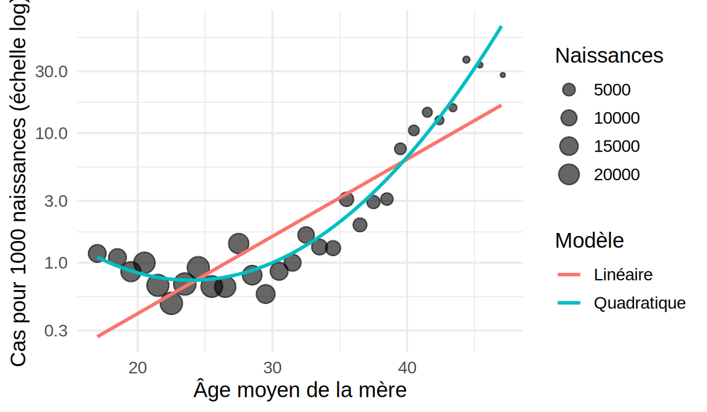
Sur l’échelle log, les taux observés sont presque constants jusque vers 30 ans, puis augmentent rapidement. La droite du modèle linéaire ne peut pas suivre cette courbure : elle surestime le taux au milieu de l’étendue des âges et le sous-estime aux deux extrémités. Le terme quadratique est très significatif (\(G^2 \approx 137{,}0\) à 1 degré de liberté) et la déviance tombe à 46,1 pour 27 degrés de liberté. La courbe quadratique suit bien les points sur toute l’étendue des âges. Son minimum est atteint vers 24 ans, et le taux estimé remonte légèrement chez les mères les plus jeunes, comme les taux observés.
Les tests d’adéquation rejettent encore le modèle au seuil de 5 % (valeurs-p \(\approx 0{,}013\) pour la déviance et \(0{,}012\) pour \(X^2_P\)), mais l’écart est beaucoup plus modeste.
- On estime \(\phi\) et on fait le test de surdispersion (Surdispersion) :
phi.downs <- adeq2[["X2"]] / adeq2[["ddl"]]
phi.downs[1] 1.70794nb.downs <- glm.nb(DS ~ age.c + I(age.c^2) + offset(log(Births)), data = downs)
nb.downs$theta[1] 31.26431Q.obs <- max(2 * as.numeric(logLik(nb.downs) - logLik(m2.downs)), 0)
valeur.p <- if (Q.obs > 0) pchisq(Q.obs, df = 1, lower.tail = FALSE) / 2 else 1
c(Q.obs = Q.obs, valeur.p = valeur.p) Q.obs valeur.p
3.61699079 0.02859612 On obtient \(\tilde\phi_P \approx 1{,}71\). Le test du rapport de vraisemblance de \(H_0 : \alpha = 0\) donne \(Q_{obs} \approx 3{,}62\), et comme \(\alpha = 0\) est à la frontière de l’espace des paramètres, la valeur-p est la moitié de celle d’une \(\chi^2_1\), soit environ \(0{,}029\). On rejette donc l’absence de surdispersion au seuil de 5 %. L’estimation \(\hat\theta \approx 31{,}3\) correspond à \(\hat\alpha = 1/\hat\theta \approx 0{,}032\), une surdispersion faible. Elle compte surtout pour les groupes où \(\mu_i\) est grand, puisque \(Var[Y_i] = \mu_i(1+\alpha\mu_i)\).
Notez qu’une surdispersion apparente peut aussi venir d’une moyenne mal spécifiée. Les âges sont des moyennes de groupes, et la forme quadratique n’est qu’une approximation de la vraie courbe. Le modèle quasi-Poisson est un choix prudent dans les deux cas : il garde les mêmes estimations et élargit les intervalles d’un facteur \(\sqrt{\tilde\phi_P} \approx 1{,}31\).
q2.downs <- update(m2.downs, family = quasipoisson)
round(summary(q2.downs)$coefficients, 4) Estimate Std. Error t value Pr(>|t|)
(Intercept) -6.9070 0.0860 -80.2908 0
age.c 0.1028 0.0075 13.6945 0
I(age.c^2) 0.0085 0.0009 9.7000 0nouv <- data.frame(Age = c(25, 35, 40, 45), Births = 1000) |>
mutate(age.c = Age - 30)
pred <- predict(q2.downs, nouv, type = "link", se.fit = TRUE)
t.crit <- qt(0.975, df.residual(q2.downs))
nouv |>
mutate(taux.1000 = exp(pred$fit),
borne.inf = exp(pred$fit - t.crit * pred$se.fit),
borne.sup = exp(pred$fit + t.crit * pred$se.fit)) |>
dplyr::select(Age, taux.1000, borne.inf, borne.sup) # dplyr:: : MASS a aussi une fonction select Age taux.1000 borne.inf borne.sup
1 25 0.7401313 0.6293791 0.8703726
2 35 2.0695392 1.7451669 2.4542022
3 40 6.5462189 5.5913782 7.6641179
4 45 31.6711377 24.2226678 41.4100120L’intervalle est construit sur l’échelle du prédicteur linéaire avec le quantile de Student à 27 degrés de liberté, puis transformé par l’exponentielle, comme au 3 Modèles linéaires généralisés (GLM). Le taux estimé passe d’environ 0,74 cas pour 1000 naissances à 25 ans à 2,1 à 35 ans, 6,5 à 40 ans et 31,7 à 45 ans. Le taux d’une mère de 40 ans est environ 6,5 fois celui d’une mère de 30 ans, dont le taux estimé est d’environ 1,00 cas pour 1000 naissances. Comme le modèle est quadratique, ce rapport de taux dépend des deux âges comparés, et non seulement de leur différence. L’intervalle à 45 ans est le plus large, parce que peu de naissances (et donc peu de cas) viennent des mères de cet âge.
- On ajuste le modèle binomial correspondant :
b2.downs <- glm(cbind(DS, Births - DS) ~ age.c + I(age.c^2),
family = binomial, data = downs)
round(cbind(Poisson = coef(m2.downs), binomial = coef(b2.downs)), 4) Poisson binomial
(Intercept) -6.9070 -6.9110
age.c 0.1028 0.1033
I(age.c^2) 0.0085 0.0086Les coefficients sont presque identiques. C’est attendu : avec des probabilités au plus de 0,037, la cote \(\pi/(1-\pi)\) est pratiquement égale à \(\pi\), de sorte que le logit et le logarithme du taux coïncident presque, et les deux lois donnent la même vraisemblance à peu de chose près. Les coefficients du modèle de Poisson s’interprètent directement comme des rapports de taux (ou de risques), ce qui est plus parlant en épidémiologie que des rapports de cotes. Le modèle binomial resterait valide si les probabilités n’étaient pas petites, alors que l’approximation de Poisson ne le serait plus.
Chapitre 4 : Extensions des GLM
Niveau facile
Exercice 1. Retour à l’énoncé
Avec \(K = 2\) et \(\boldsymbol\beta_1 = \boldsymbol 0\), on a \(\pi_{i2} = e^{\boldsymbol X_i^\top\boldsymbol\beta_2}/(1+e^{\boldsymbol X_i^\top\boldsymbol\beta_2})\) et \(\pi_{i1} = 1-\pi_{i2}\), de sorte que \(\mathrm{logit}(\pi_{i2}) = \boldsymbol X_i^\top\boldsymbol\beta_2\). La log-vraisemblance \(\sum_i\{y_{i2}\log\pi_{i2} + (1-y_{i2})\log(1-\pi_{i2})\}\) est celle de la régression logistique de \(y_{i2} = \mathbf 1\{Y_i = 2\}\).
On a \(\log(\pi_{ik}/\pi_{il}) = \log(\pi_{ik}/\pi_{i1}) - \log(\pi_{il}/\pi_{i1}) = \boldsymbol X_i^\top(\boldsymbol\beta_k - \boldsymbol\beta_l)\). Avec la catégorie \(l\) comme référence, les nouveaux coefficients sont donc \(\boldsymbol\beta_k^{(l)} = \boldsymbol\beta_k - \boldsymbol\beta_l\), pour tout \(k\) (en particulier, \(\boldsymbol\beta_l^{(l)} = \boldsymbol 0\) et \(\boldsymbol\beta_1^{(l)} = -\boldsymbol\beta_l\)). Les probabilités ne changent pas, puisqu’on divise numérateur et dénominateur de \(\pi_{ik}\) par le même facteur \(e^{\boldsymbol X_i^\top\boldsymbol\beta_l}\). Le changement de référence est une simple reparamétrisation : la vraisemblance maximale, les probabilités ajustées et les tests globaux sont les mêmes.
Exercice 2. Retour à l’énoncé
\(P(Y = 0) = \pi + (1-\pi)e^{-\mu} = 0{,}2 + 0{,}8\,e^{-2}\approx 0{,}2 + 0{,}108 = 0{,}308\), et \(E[Y] = (1-\pi)\mu = 0{,}8\times 2 = 1{,}6\).
Sous une loi de Poisson d’espérance \(1{,}6\), \(P(Y = 0) = e^{-1{,}6}\approx 0{,}202\). Le modèle ZIP prévoit donc environ 50 % de zéros de plus que la loi de Poisson de même moyenne. Parmi ses zéros, deux sur trois sont structurels (\(0{,}2/0{,}308\)).
Exercice 3. Retour à l’énoncé
Avec \(\eta = \beta x\), on a \(P(Y\leq k) = \mathrm{logit}^{-1}(\alpha_k-\eta)\). Pour \(x = 10\), \(\eta = 3\), et \[ P(Y\leq 1) = \mathrm{logit}^{-1}(-2)\approx 0{,}119, \qquad P(Y\leq 2) = \mathrm{logit}^{-1}(0) = 0{,}5, \] d’où \((\pi_1,\pi_2,\pi_3)\approx(0{,}119;\ 0{,}381;\ 0{,}500)\). Pour \(x = 20\), \(\eta = 6\), \(P(Y\leq 1) = \mathrm{logit}^{-1}(-5)\approx 0{,}007\) et \(P(Y\leq 2) = \mathrm{logit}^{-1}(-3)\approx 0{,}047\), d’où \((\pi_1,\pi_2,\pi_3)\approx(0{,}007;\ 0{,}041;\ 0{,}953)\).
La cote de \(\{Y>k\}\) vaut \(e^{\eta-\alpha_k}\). Pour \(k = 1\), elle passe de \(e^{2}\) à \(e^{5}\), et pour \(k = 2\), de \(e^{0} = 1\) à \(e^{3}\). Dans les deux cas, elle est multipliée par \(e^{3} = e^{\beta\times 10}\approx 20{,}1\), le facteur \(e^{\beta\Delta x}\) annoncé par la propriété de cotes proportionnelles.
Niveau moyen
Exercice 1. Retour à l’énoncé
Avec \(\boldsymbol\beta_1 = \boldsymbol 0\), \(\log\pi_{ik} = \boldsymbol X_i^\top\boldsymbol\beta_k - \log\left(1+\sum_{l=2}^Ke^{\boldsymbol X_i^\top\boldsymbol\beta_l}\right)\), et le second terme est le même pour toutes les catégories. Comme \(\sum_ky_{ik} = 1\), il apparaît une seule fois pour chaque \(i\), et le terme \(k = 1\) du premier est nul, d’où le résultat.
La dérivée du premier terme par rapport à \(\boldsymbol\beta_k\) est \(y_{ik}\boldsymbol X_i\). Celle du second est \[ \frac{e^{\boldsymbol X_i^\top\boldsymbol\beta_k}\boldsymbol X_i}{1+\sum_le^{\boldsymbol X_i^\top\boldsymbol\beta_l}} = \pi_{ik}\boldsymbol X_i, \] d’où \(\partial\ell/\partial\boldsymbol\beta_k = \sum_i(y_{ik}-\pi_{ik})\boldsymbol X_i\). C’est exactement le score de la régression logistique (chapitre 2), avec \(y_{ik}\) et \(\pi_{ik}\) à la place de \(y_i\) et \(\pi_i\), et une équation par catégorie autre que la référence.
La composante du score qui correspond à l’ordonnée à l’origine de \(\boldsymbol\beta_k\) est \(\sum_i(y_{ik}-\pi_{ik})\). Elle s’annule à l’estimateur, de sorte que \(\sum_i\hat\pi_{ik} = \sum_iy_{ik}\) pour \(k = 2,\ldots,K\). Pour \(k = 1\), on l’obtient par différence, puisque \(\sum_k\hat\pi_{ik} = \sum_ky_{ik} = 1\) pour chaque \(i\).
Exercice 2. Retour à l’énoncé
Avec \(Y = (1-S)W\) et \(S\) indépendant de \(W\), \(P(Y = 0) = P(S = 1) + P(S = 0)P(W = 0) = \pi + (1-\pi)e^{-\mu}\) et, pour \(y\geq 1\), \(P(Y = y) = (1-\pi)P(W = y)\) : c’est bien la loi ZIP. Comme \((1-S)^2 = 1-S\), \[ E[Y] = E[1-S]\,E[W] = (1-\pi)\mu, \qquad E[Y^2] = E[1-S]\,E[W^2] = (1-\pi)(\mu+\mu^2). \] Ainsi, \[ Var[Y] = (1-\pi)(\mu+\mu^2) - (1-\pi)^2\mu^2 = (1-\pi)\mu\left\{1 + \mu - (1-\pi)\mu\right\} = (1-\pi)\mu(1+\pi\mu). \] Le rapport vaut \(Var[Y]/E[Y] = 1+\pi\mu\), qui dépasse 1 dès que \(\pi>0\) (et \(\mu>0\)). Les zéros structurels créent donc de la surdispersion, d’autant plus forte que \(\mu\) est grand.
Exercice 3. Retour à l’énoncé
Notons \(d_i = \mathbf 1\{y_i>0\}\). La log-vraisemblance vaut \[ \ell = \sum_{i=1}^n\left\{(1-d_i)\log(1-p_i) + d_i\log p_i\right\} + \sum_{i:\,d_i = 1}\left\{\log f(y_i;\mu_i) - \log\left(1-f(0;\mu_i)\right)\right\}. \] La première somme ne dépend que de \(\boldsymbol\gamma\) : c’est la log-vraisemblance de la régression logistique de \(d_i\). La seconde ne dépend que de \(\boldsymbol\beta\) : c’est la log-vraisemblance d’une loi tronquée en zéro, calculée sur les seules observations positives. On maximise donc chaque partie séparément.
La partie binaire est une régression logistique de \(d_i\). Si \(\boldsymbol z_i\) contient une ordonnée à l’origine, la composante correspondante du score s’annule à l’estimateur (même argument qu’à l’exercice 1 c)) : \(\sum_i(d_i-\hat p_i) = 0\). Ainsi, \(\sum_i(1-\hat p_i) = \sum_i(1-d_i)\), qui est le nombre de zéros observé. Le modèle ZIP n’a pas cette propriété, parce que ses zéros dépendent aussi de la partie de comptage.
Niveau difficile
Exercice 1. Retour à l’énoncé
\(P(Y_i\leq k) = P(\boldsymbol x_i^\top\boldsymbol\beta + \sigma\epsilon_i\leq\alpha_k) = F\{(\alpha_k-\boldsymbol x_i^\top\boldsymbol\beta)/\sigma\}\), où \(F\) est la fonction de répartition logistique. Cette probabilité ne dépend que des rapports \(\alpha_k/\sigma\) et \(\boldsymbol\beta/\sigma\), qui ne changent pas si on multiplie tous les paramètres par \(c>0\). Les données ne peuvent donc pas distinguer ces paramétrisations, et on fixe l’échelle de la variable latente par \(\sigma = 1\). Les coefficients s’interprètent alors en unités du paramètre d’échelle de la loi logistique standard. Comme l’écart-type de cette loi vaut \(\pi/\sqrt3\approx 1{,}81\), \(\beta_j\sqrt3/\pi\) mesure l’effet de \(x_j\) en écarts-types de l’erreur latente.
Si \(\boldsymbol x_i^\top\boldsymbol\beta\) contient une ordonnée à l’origine \(\beta_0\), alors \(\alpha_k - \beta_0 - \tilde{\boldsymbol x}_i^\top\tilde{\boldsymbol\beta}\) ne change pas si on ajoute la même constante à \(\beta_0\) et à tous les seuils. Seules les différences \(\alpha_k-\beta_0\) sont identifiables, et on fixe \(\beta_0 = 0\) (ou, dans d’autres logiciels, \(\alpha_1 = 0\)).
Pour \(K = 3\), \(\pi_{i1} = F(\alpha_1-\eta_i)\) et \(\pi_{i3} = 1-F(\alpha_2-\eta_i)\), avec \(\eta_i = \boldsymbol x_i^\top\boldsymbol\beta\), de sorte que \[ \log\frac{\pi_{i1}}{\pi_{i3}} = \log F(\alpha_1-\eta_i) - \log\{1-F(\alpha_2-\eta_i)\}. \] En régression multinomiale, ce logarithme vaut \(\boldsymbol X_i^\top(\boldsymbol\beta_1-\boldsymbol\beta_3)\) : il est linéaire en \(\boldsymbol x_i\), et une régression logistique ajustée sur les seules observations des catégories 1 et 3 redonne les mêmes coefficients. C’est le sens concret de l’indépendance des alternatives non pertinentes. Pour le modèle ordinal, l’expression ci-dessus n’est pas linéaire en \(\eta_i\) et dépend des deux seuils à la fois. Restreindre les données aux catégories 1 et 3 ne donne donc pas un modèle logistique de mêmes coefficients, et la propriété ne vaut pas. Ce n’est pas un défaut : sur une échelle ordonnée, retirer la catégorie du milieu n’a pas de sens, et la question pertinente est plutôt la fusion de catégories adjacentes.
Exercice 2. Retour à l’énoncé
- On compare les deux ajustements de la partie binaire :
library(pscl)
data(bioChemists, package = "pscl")
m.hurdle.p <- hurdle(art ~ ., data = bioChemists, dist = "poisson")
m.binaire <- glm(I(art > 0) ~ ., data = bioChemists, family = binomial)
round(rbind(hurdle = coef(m.hurdle.p, model = "zero"), glm = coef(m.binaire)), 5) (Intercept) femWomen marMarried kid5 phd ment
hurdle 0.2368 -0.25115 0.32623 -0.28525 0.02222 0.08012
glm 0.2368 -0.25115 0.32623 -0.28525 0.02222 0.08012Les coefficients sont identiques : la partie binaire du modèle à barrière est la régression logistique de l’indicatrice de publier au moins un article.
- La loi de Poisson tronquée en zéro a pour probabilités \(f(y;\mu)/(1-e^{-\mu})\), \(y\geq 1\) :
positifs <- filter(bioChemists, art > 0)
X.pos <- model.matrix(art ~ ., positifs)
moins.logvrais <- function(b) {
mu <- exp(as.vector(X.pos %*% b))
-sum(dpois(positifs$art, mu, log = TRUE) - log(1 - exp(-mu)))
}
opt <- optim(rep(0, ncol(X.pos)), moins.logvrais, method = "BFGS",
control = list(maxit = 500, reltol = 1e-12))
round(rbind(optim = opt$par, hurdle = coef(m.hurdle.p, model = "count")), 4) (Intercept) femWomen marMarried kid5 phd ment
optim 0.6712 -0.2286 0.0965 -0.1421 -0.0127 0.0187
hurdle 0.6711 -0.2286 0.0965 -0.1422 -0.0127 0.0187Les estimations coïncident aux erreurs d’optimisation numérique près : la partie de comptage n’utilise que les observations positives.
- On compare le nombre de zéros :
c(predits = sum(predict(m.hurdle.p, type = "prob")[, 1]),
observes = sum(bioChemists$art == 0)) predits observes
275 275 Les deux valeurs sont égales, comme le prévoit l’exercice 3 du niveau moyen.
Chapitre 5 : Prédiction, mesures de performance et validation croisée
Niveau facile
Exercice 1. Retour à l’énoncé
Les équations normales (exercice 2 du niveau facile du chapitre 0) imposent \(\sum_ie_i = 0\) et \(\sum_ix_ie_i = 0\). On a bien \(1{,}0-1{,}4+0{,}8-1{,}4+1{,}0 = 0\) et \(1{,}0-2{,}8+2{,}4-5{,}6+5{,}0 = 0\). Avec \(\bar x = 3\) et \(\sum_j(x_j-\bar x)^2 = 10\), les leviers valent \[h_i = 0{,}2 + \frac{(i-3)^2}{10}, \qquad\text{soit}\qquad (h_1,\ldots,h_5) = (0{,}6;\ 0{,}3;\ 0{,}2;\ 0{,}3;\ 0{,}6).\] Leur somme vaut \(2 = p+1\), la trace de la matrice chapeau. Les observations aux extrémités du domaine des \(x_i\) ont le plus grand levier.
L’erreur d’entraînement vaut \[\frac{SSE}{n} = \frac{1+1{,}96+0{,}64+1{,}96+1}{5} = \frac{6{,}56}{5} = 1{,}312.\] Pour \(VC_{(n)}\), on calcule les résidus de validation croisée \(e_i/(1-h_i)\) : \(2{,}5\), \(-2\), \(1\), \(-2\) et \(2{,}5\). Leurs carrés valent \(6{,}25\), \(4\), \(1\), \(4\) et \(6{,}25\), d’où \[VC_{(n)} = \frac{21{,}5}{5} = 4{,}3.\] Le critère est plus de trois fois plus grand que l’erreur d’entraînement. Les observations 1 et 5 n’ont pas les plus grands résidus, mais leur levier élevé multiplie leur résidu par \(2{,}5\), et elles fournissent à elles seules 58 % de la somme. Ce sont des points qui « tirent » la droite vers eux, de sorte que leur résidu ordinaire sous-estime l’erreur qu’on ferait en les prédisant sans elles.
Exercice 2. Retour à l’énoncé
La matrice de design est la colonne \(\boldsymbol 1_n\), de sorte que \(\boldsymbol X^\top\boldsymbol X = n\) et \(\boldsymbol H = \boldsymbol 1_n\boldsymbol 1_n^\top/n\), dont tous les éléments diagonaux valent \(1/n\).
Comme \(\bar Y_{(-i)} = (n\bar Y - Y_i)/(n-1)\), \[Y_i - \bar Y_{(-i)} = \frac{(n-1)Y_i - n\bar Y + Y_i}{n-1} = \frac{n}{n-1}(Y_i - \bar Y) = \frac{Y_i-\bar Y}{1-1/n},\] ce qui est bien \((Y_i-\hat Y_i)/(1-h_i)\).
En élevant au carré et en faisant la moyenne, \[VC_{(n)} = \frac1n\sum_{i=1}^n\frac{n^2}{(n-1)^2}(Y_i-\bar Y)^2 = \frac{n}{(n-1)^2}\sum_{i=1}^n(Y_i-\bar Y)^2 = \frac{n}{n-1}\,s^2.\] C’est la valeur de référence du modèle nul. Un modèle plus riche n’a d’intérêt pour la prédiction que s’il fait mieux.
Exercice 3. Retour à l’énoncé
On écrit \(Y - p = (Y-\pi) + (\pi-p)\). Comme \(E[Y-\pi] = 0\), le terme croisé a une espérance nulle et \[E[(Y-p)^2] = E[(Y-\pi)^2] + (\pi-p)^2 = \pi(1-\pi) + (\pi-p)^2.\] Le premier terme ne dépend pas de \(p\) et le second est minimal, et nul, en \(p = \pi\). L’espérance du score est donc minimale lorsque la probabilité prédite est la vraie probabilité : le score de Brier est propre (et même strictement propre, puisque le minimum est unique).
Si \(p > 1/2\), on prédit \(1\) et on se trompe avec probabilité \(P(Y=0) = 1-\pi\). Si \(p\leq 1/2\), on prédit \(0\) et on se trompe avec probabilité \(\pi\). L’espérance de la perte ne dépend donc de \(p\) que par le côté de \(1/2\) où il tombe. Par exemple, si \(\pi = 0{,}8\), toutes les valeurs \(p\in(1/2, 1]\) donnent la même perte espérée, \(0{,}2\), qu’elles soient bien calibrées ou non. Le minimum est atteint, mais pas seulement en \(p = \pi\) : la perte n’est pas strictement propre et ne récompense pas une probabilité juste.
Niveau moyen
Exercice 1. Retour à l’énoncé
La prédiction de l’observation \(i\) par le modèle ajusté sans elle est \(\hat Y_{i,(-i)} = \boldsymbol X_i^\top\hb_{(-i)}\). En substituant la formule de mise à jour, \[\hat Y_{i,(-i)} = \boldsymbol X_i^\top\hb - \frac{\boldsymbol X_i^\top(\boldsymbol X^\top\boldsymbol X)^{-1}\boldsymbol X_i\, e_i}{1-h_i} = \hat Y_i - \frac{h_i e_i}{1-h_i},\] puisque \(\boldsymbol X_i^\top(\boldsymbol X^\top\boldsymbol X)^{-1}\boldsymbol X_i = h_i\). On en déduit \[Y_i - \hat Y_{i,(-i)} = e_i + \frac{h_i e_i}{1-h_i} = \frac{e_i(1-h_i) + h_i e_i}{1-h_i} = \frac{e_i}{1-h_i}.\] En faisant la moyenne des carrés, on obtient \(VC_{(n)} = \frac1n\sum_i\{e_i/(1-h_i)\}^2\), calculé à partir d’un seul ajustement.
Exercice 2. Retour à l’énoncé
L’espérance vaut \(R(p) = -2[\pi\log p + (1-\pi)\log(1-p)]\), dont la dérivée est \[R'(p) = -2\left[\frac{\pi}{p} - \frac{1-\pi}{1-p}\right] = -2\,\frac{\pi - p}{p(1-p)}.\] Elle est négative pour \(p<\pi\) et positive pour \(p>\pi\), de sorte que \(R\) est minimale en \(p = \pi\). La valeur minimale, \(-2[\pi\log\pi + (1-\pi)\log(1-\pi)]\), est deux fois l’entropie de la loi de Bernoulli : c’est la part de la perte qu’aucune prédiction ne peut éliminer.
Seuls les termes \(-2Y\log\hat\mu + 2\hat\mu\) dépendent de \(\hat\mu\). Leur espérance est \(R(\hat\mu) = -2\mu\log\hat\mu + 2\hat\mu\), de dérivée \(R'(\hat\mu) = 2(1 - \mu/\hat\mu)\). Cette dérivée est négative pour \(\hat\mu < \mu\) et positive pour \(\hat\mu > \mu\), d’où un minimum en \(\hat\mu = \mu\).
Exercice 3. Retour à l’énoncé
Comme \(0\leq h_i<1\), on a \(1/(1-h_i)^2\geq 1\), d’où \(\{e_i/(1-h_i)\}^2\geq e_i^2\) pour chaque \(i\), avec égalité si et seulement si \(e_i = 0\) ou \(h_i = 0\). En faisant la moyenne, \(VC_{(n)}\geq SSE/n\).
En remplaçant \(h_i\) par \((p+1)/n\) dans chaque terme, le dénominateur devient constant et \[GCV = \frac1n\sum_i\frac{e_i^2}{\{1-(p+1)/n\}^2} = \frac{SSE/n}{\{1-(p+1)/n\}^2}.\] Avec \((1-x)^{-2} = 1 + 2x + O(x^2)\) pour \(x\) petit, on obtient l’approximation annoncée. Le facteur \(1 + 2(p+1)/n\) corrige l’optimisme de l’erreur d’entraînement : chaque paramètre ajusté réduit artificiellement la \(SSE\), et la correction croît avec le nombre de paramètres. On retrouve la forme d’une pénalité de type \(C_p\) ou \(AIC\), que l’exercice 2 du niveau difficile justifie.
Niveau difficile
Exercice 1. Retour à l’énoncé
Notons \(c = 1-\boldsymbol v^\top\boldsymbol J^{-1}\boldsymbol u\). Le produit vaut \[\left(\boldsymbol J - \boldsymbol u\boldsymbol v^\top\right)\left(\boldsymbol J^{-1} + \frac{\boldsymbol J^{-1}\boldsymbol u\boldsymbol v^\top\boldsymbol J^{-1}}{c}\right) = \boldsymbol I - \boldsymbol u\boldsymbol v^\top\boldsymbol J^{-1} + \frac{\boldsymbol u\boldsymbol v^\top\boldsymbol J^{-1} - \boldsymbol u(\boldsymbol v^\top\boldsymbol J^{-1}\boldsymbol u)\boldsymbol v^\top\boldsymbol J^{-1}}{c}.\] Comme \(\boldsymbol v^\top\boldsymbol J^{-1}\boldsymbol u\) est un scalaire, la fraction vaut \(\boldsymbol u\boldsymbol v^\top\boldsymbol J^{-1}(1-\boldsymbol v^\top\boldsymbol J^{-1}\boldsymbol u)/c = \boldsymbol u\boldsymbol v^\top\boldsymbol J^{-1}\), qui annule le deuxième terme. Il reste \(\boldsymbol I\).
La \(i^{\text{e}}\) ligne de \(\boldsymbol W^{1/2}\boldsymbol X\) est \(\sqrt{w_i}\,\boldsymbol X_i^\top\), de sorte que l’élément \((i,i)\) de \(\boldsymbol H\) est \(\sqrt{w_i}\,\boldsymbol X_i^\top\boldsymbol J^{-1}\boldsymbol X_i\sqrt{w_i} = w_i\boldsymbol X_i^\top\boldsymbol J^{-1}\boldsymbol X_i\).
On applique a) avec \(\boldsymbol u = w_i\boldsymbol X_i\) et \(\boldsymbol v = \boldsymbol X_i\), de sorte que \(\boldsymbol v^\top\boldsymbol J^{-1}\boldsymbol u = h_i\) par b) : \[\left(\boldsymbol J - w_i\boldsymbol X_i\boldsymbol X_i^\top\right)^{-1}\boldsymbol X_i = \boldsymbol J^{-1}\boldsymbol X_i + \frac{\boldsymbol J^{-1}w_i\boldsymbol X_i\,(\boldsymbol X_i^\top\boldsymbol J^{-1}\boldsymbol X_i)}{1-h_i} = \boldsymbol J^{-1}\boldsymbol X_i\left(1 + \frac{h_i}{1-h_i}\right) = \frac{\boldsymbol J^{-1}\boldsymbol X_i}{1-h_i}.\] Retirer l’observation \(i\) revient à retirer le terme \(w_i\boldsymbol X_i\boldsymbol X_i^\top\) de l’information \(\boldsymbol J\), et la formule montre que cette mise à jour se fait sans nouvelle inversion. Dans le modèle linéaire normal (\(w_i = 1\)), elle permet de retrouver, en tenant compte aussi du terme \(-\boldsymbol X_iY_i\) retiré de \(\boldsymbol X^\top\boldsymbol Y\), la formule de mise à jour utilisée à l’exercice 1 du niveau moyen (le calcul complet est fait à l’exercice 5 des exercices théoriques du chapitre 8).
Exercice 2. Retour à l’énoncé
L’exercice 3 du niveau moyen du chapitre 0 a établi que \(E[SSE] = \sigma^2(n-(p+1))\). En divisant par \(n\), on obtient \(E[SSE/n] = \sigma^2\{1-(p+1)/n\}\).
Comme \(Y_i^0\) est indépendante de \(\hat Y_i\) (qui ne dépend que des \(Y_j\)) et que \(E[Y_i^0] = E[\hat Y_i] = \boldsymbol X_i^\top\bb\) (l’estimateur est sans biais), \[E[(Y_i^0-\hat Y_i)^2] = Var[Y_i^0] + Var[\hat Y_i] = \sigma^2 + \sigma^2 h_i,\] puisque \(Var[\hat{\boldsymbol Y}] = \sigma^2\boldsymbol H\). En faisant la moyenne et en utilisant \(\sum_i h_i = \mathrm{Tr}(\boldsymbol H) = p+1\), on obtient \(\sigma^2(1+(p+1)/n)\).
La différence vaut \[\sigma^2\left(1+\frac{p+1}{n}\right) - \sigma^2\left(1-\frac{p+1}{n}\right) = \frac{2\sigma^2(p+1)}{n}.\] L’erreur d’entraînement sous-estime donc l’erreur de prédiction d’une quantité qui croît avec le nombre de paramètres. En lui ajoutant une estimation de cet optimisme, on obtient le critère \(C_p\), dont l’espérance est l’erreur de prédiction si \(\hat\sigma^2\) est sans biais pour \(\sigma^2\), par exemple estimé sur le modèle le plus riche qu’on considère. L’exercice 3 du niveau moyen montre que \(VC_{(n)}\), ou sa version GCV, applique la même correction à un ordre près, sans avoir à estimer \(\sigma^2\) séparément : \(E[GCV]\approx\sigma^2\{1-(p+1)/n\}\{1+2(p+1)/n\}\approx\sigma^2\{1+(p+1)/n\}\).
Exercices appliqués
Exercice appliqué 1. Retour à l’énoncé
- On prépare les deux échantillons, puis on ajuste les quatre modèles sur l’échantillon d’entraînement :
library(dplyr)
library(MASS)
library(boot)
pima.ent <- Pima.tr |> mutate(diabete = as.numeric(type == "Yes"))
pima.test <- Pima.te |> mutate(diabete = as.numeric(type == "Yes"))
c(entrainement = mean(pima.ent$diabete), test = mean(pima.test$diabete))entrainement test
0.3400000 0.3283133 m1 <- glm(diabete ~ glu, family = binomial, data = pima.ent)
m2 <- glm(diabete ~ glu + bmi + ped + age, family = binomial, data = pima.ent)
m3 <- glm(diabete ~ npreg + glu + bp + skin + bmi + ped + age,
family = binomial, data = pima.ent)
m4 <- glm(diabete ~ (npreg + glu + bp + skin + bmi + ped + age)^2,
family = binomial, data = pima.ent)
modeles <- list(M1 = m1, M2 = m2, M3 = m3, M4 = m4)
# fonctions de perte du @sec-cv : y observé, p probabilité prédite
cout.classif <- function(y, p) mean(y != (p > 0.5))
cout.brier <- function(y, p) mean((y - p)^2)
cout.dev <- function(y, p) {
p <- pmin(pmax(p, 1e-8), 1 - 1e-8) # évite log(0)
-2 * mean(y * log(p) + (1 - y) * log(1 - p))
}
couts <- list(classif = cout.classif, brier = cout.brier, deviance = cout.dev)
entrainement <- t(sapply(modeles, function(m)
c(parametres = length(coef(m)), AIC = AIC(m),
deviance.moy = cout.dev(pima.ent$diabete, fitted(m)))))
round(entrainement, 3) parametres AIC deviance.moy
M1 2 211.373 1.037
M2 5 191.082 0.905
M3 8 194.391 0.892
M4 29 212.813 0.774La proportion de femmes diabétiques est d’environ 0,34 dans l’échantillon d’entraînement et 0,33 dans l’échantillon test. Les modèles sont emboîtés, de sorte que la déviance d’entraînement par observation diminue toujours avec le nombre de paramètres, de 1,037 pour M1 à 0,774 pour M4. Elle mesure l’adéquation aux 200 femmes de l’échantillon, pas la qualité des prédictions pour de nouvelles patientes. L’AIC, qui pénalise le nombre de paramètres, est minimal pour M2 (191,1) et nettement plus grand pour M4 (212,8).
- On calcule \(VC_{(10)}\) pour chaque modèle et chaque perte, avec la même partition :
# warning: false masque l'avertissement de séparation de M4 dans certains blocs
vc10 <- sapply(couts, function(cout)
sapply(modeles, function(m) {
set.seed(4300) # même partition en blocs pour tous les modèles
cv.glm(pima.ent, m, cost = cout, K = 10)$delta[1]
}))
round(vc10, 4) classif brier deviance
M1 0.255 0.1768 1.0617
M2 0.245 0.1662 0.9888
M3 0.265 0.1665 0.9869
M4 0.285 0.2117 1.3311Avec cette partition, les pertes ne désignent pas toutes le même modèle. La déviance retient M3, de très peu devant M2 (0,9869 contre 0,9888), alors que le score de Brier retient M2. M2 et M3 sont donc pratiquement à égalité, et c) vérifie si ce classement dépend de la partition. M1 est nettement moins bon : la glycémie seule ne suffit pas. M4 est le pire des quatre selon les trois pertes, alors qu’il avait la plus petite erreur d’entraînement. Ses 29 paramètres pour 200 observations (dont 68 cas de diabète seulement) mènent au surajustement. Des probabilités prédites très proches de 0 ou de 1 pour des femmes du bloc test qui ont l’autre statut font exploser la déviance (voir la remarque « Quelle perte choisir? » du 5 Prédiction, mesures de performance et validation croisée).
Le taux de mauvaise classification retient lui aussi M2, mais il est trop grossier pour départager des modèles aussi proches. Sur 200 observations, un écart de 0,005 correspond à une seule femme mal classée de plus ou de moins, et ce critère ignore la qualité des probabilités prédites.
- On répète le calcul avec 20 partitions différentes :
vc.graines <- sapply(1:20, function(graine)
sapply(modeles, function(m) {
set.seed(graine)
cv.glm(pima.ent, m, cost = cout.dev, K = 10)$delta[1]
}))
round(apply(vc.graines, 1, range), 3) M1 M2 M3 M4
[1,] 1.050 0.943 0.964 1.303
[2,] 1.085 0.983 1.038 1.565table(factor(rownames(vc.graines)[apply(vc.graines, 2, which.min)],
levels = names(modeles)))
M1 M2 M3 M4
0 19 1 0 La valeur de \(VC_{(10)}\) d’un même modèle varie d’une partition à l’autre (de 0,943 à 0,983 pour M2, par exemple). M2 est retenu dans 19 partitions sur 20, et M3 dans 1. Le choix est donc assez stable. Comme tous les modèles sont évalués sur la même partition pour une graine donnée, une partie de la variabilité se compense dans la comparaison : c’est l’intérêt de fixer la graine avant chaque appel. Avec seulement 200 observations, il vaut quand même mieux regarder plusieurs partitions avant de conclure, surtout quand deux modèles sont proches comme M2 et M3.
- On évalue les modèles ajustés sur l’échantillon d’entraînement sur les 332 femmes de l’échantillon test :
erreur.test <- sapply(couts, function(cout)
sapply(modeles, function(m)
cout(pima.test$diabete, predict(m, newdata = pima.test, type = "response"))))
round(erreur.test, 4) classif brier deviance
M1 0.2259 0.1603 0.9875
M2 0.2078 0.1417 0.8968
M3 0.1988 0.1393 0.8814
M4 0.2470 0.1728 1.2532round(cbind(VC10 = vc10[, "deviance"], test = erreur.test[, "deviance"]), 3) VC10 test
M1 1.062 0.988
M2 0.989 0.897
M3 0.987 0.881
M4 1.331 1.253Sur l’échantillon test, la déviance est la plus petite pour M3, de très peu devant M2 (0,881 contre 0,897). Le classement est le même que celui de la validation croisée pour les modèles éloignés (M1 et surtout M4 sont nettement moins bons), mais M2 et M3 sont pratiquement à égalité, ce que la validation croisée laissait déjà voir. Le choix de M2, retenu avec la plupart des partitions en c), est donc défendable : il fait presque aussi bien que M3 avec trois variables de moins (le nombre de grossesses, la pression diastolique et le pli cutané).
Les erreurs test sont ici plus petites que les erreurs de validation croisée, pour les quatre modèles. Ce n’est pas une contradiction : l’échantillon test est un autre échantillon aléatoire, et son erreur dépend aussi des femmes qui le composent. On ne peut pas en conclure que la validation croisée est pessimiste en général. Notez que le minimum de \(VC_{(10)}\) est en principe optimiste pour le modèle retenu, puisque le modèle a été choisi parce qu’il minimise ce critère ; seul l’échantillon test, qui n’a servi à aucun choix, donne une estimation sans biais de l’erreur du modèle retenu (voir la remarque sur la fuite d’information au 5 Prédiction, mesures de performance et validation croisée).
En pratique, M2 dit que la probabilité de diabète augmente avec la glycémie, l’indice de masse corporelle, l’âge et la fonction de prédisposition familiale (ped). Pour le dépistage, on choisirait plutôt un seuil \(u\) inférieur à \(1/2\), parce qu’un diabète non détecté coûte plus cher qu’un test de confirmation inutile (voir Spécificité, sensibilité et courbe ROC).
Chapitre 6 : Sélection de variables et régularisation
Niveau facile
Exercice 1. Retour à l’énoncé
En développant, \(Q^{(R)}_\lambda(\boldsymbol\beta) = \boldsymbol Y^\top\boldsymbol Y - 2\boldsymbol\beta^\top\boldsymbol X^\top\boldsymbol Y + \boldsymbol\beta^\top(\boldsymbol X^\top\boldsymbol X+\lambda\boldsymbol I_p)\boldsymbol\beta\), dont le gradient est \[\frac{\partial Q^{(R)}_\lambda}{\partial\boldsymbol\beta} = -2\boldsymbol X^\top\boldsymbol Y + 2(\boldsymbol X^\top\boldsymbol X+\lambda\boldsymbol I_p)\boldsymbol\beta.\] Il s’annule en \(\hb^{(R)}_\lambda = (\boldsymbol X^\top\boldsymbol X+\lambda\boldsymbol I_p)^{-1}\boldsymbol X^\top\boldsymbol Y\), qui est bien un minimum puisque la matrice hessienne, \(2(\boldsymbol X^\top\boldsymbol X+\lambda\boldsymbol I_p)\), est définie positive.
Pour tout \(\boldsymbol v\neq\boldsymbol 0\), on a \(\boldsymbol v^\top(\boldsymbol X^\top\boldsymbol X+\lambda\boldsymbol I_p)\boldsymbol v = \|\boldsymbol X\boldsymbol v\|^2 + \lambda\|\boldsymbol v\|^2 \geq \lambda\|\boldsymbol v\|^2 > 0\). La matrice est donc définie positive, donc inversible, quel que soit le rang de \(\boldsymbol X\). Lorsque \(p>n\), \(\boldsymbol X^\top\boldsymbol X\) est singulière et les moindres carrés n’ont pas de solution unique, mais ridge en a une.
Exercice 2. Retour à l’énoncé
Avec \(\boldsymbol X^\top\boldsymbol X = \boldsymbol I_p\), l’estimateur des moindres carrés est \(\hb = \boldsymbol X^\top\boldsymbol Y\), et \[\hb^{(R)}_\lambda = (\boldsymbol I_p+\lambda\boldsymbol I_p)^{-1}\boldsymbol X^\top\boldsymbol Y = \frac{1}{1+\lambda}\,\hb.\] Dans ce cas, ridge multiplie chaque coefficient des moindres carrés par le même facteur \(1/(1+\lambda)\in(0,1]\) : il rétrécit tous les coefficients proportionnellement vers 0, sans en annuler aucun. Avec des variables corrélées, le rétrécissement n’est plus uniforme (voir l’exercice 1 du niveau difficile).
Exercice 3. Retour à l’énoncé
En remplaçant \(x_i\) par \(cx_i\), \[\tilde\beta^{(R)}_\lambda = \frac{c\sum_i x_iY_i}{c^2\sum_i x_i^2+\lambda} = \frac1c\cdot\frac{\sum_i x_iY_i}{\sum_i x_i^2+\lambda/c^2}.\] C’est l’estimateur ridge sur l’échelle d’origine, divisé par \(c\), mais avec le paramètre de pénalité \(\lambda/c^2\) plutôt que \(\lambda\). Donc \(\tilde\beta^{(R)}_\lambda\neq\hat\beta^{(R)}_\lambda/c\) dès que \(\lambda>0\).
Pour \(\lambda = 0\), on a exactement \(\tilde\beta = \hat\beta/c\) : les moindres carrés sont équivariants par changement d’échelle, et la prédiction \(\tilde\beta\,\tilde x = \hat\beta x\) ne dépend pas de l’unité. Ridge perd cette propriété. Avec \(c\) grand (des millimètres plutôt que des mètres), la pénalité effective \(\lambda/c^2\) devient négligeable et la variable n’est presque pas pénalisée. Avec \(c\) petit, elle est fortement rétrécie. Pour que la pénalité traite toutes les variables de la même façon, on les ramène à la même échelle en les standardisant, ce que fait
glmnetpar défaut.
Niveau moyen
Exercice 1. Retour à l’énoncé
En écrivant \(\boldsymbol Y-\boldsymbol X\boldsymbol\beta = (\boldsymbol Y-\boldsymbol X\hb) + \boldsymbol X(\hb-\boldsymbol\beta)\), le terme croisé vaut \(2(\hb-\boldsymbol\beta)^\top\boldsymbol X^\top(\boldsymbol Y-\boldsymbol X\hb) = 0\) par les équations normales, et \(\|\boldsymbol X(\hb-\boldsymbol\beta)\|^2 = \|\hb-\boldsymbol\beta\|^2\) puisque \(\boldsymbol X^\top\boldsymbol X = \boldsymbol I_p\). Le critère se sépare donc en une constante et une somme de \(p\) problèmes indépendants : \[Q^{(L)}_\lambda(\boldsymbol\beta) = \|\boldsymbol Y-\boldsymbol X\hb\|^2 + \sum_{j=1}^p\left\{(\beta_j-\hat\beta_j)^2 + \lambda|\beta_j|\right\}.\]
Fixons \(j\) et supposons \(\hat\beta_j>0\) (le cas négatif est symétrique). Un \(\beta_j<0\) ne peut pas être optimal, puisque \(-\beta_j\) donne la même pénalité et un premier terme plus petit. Sur \(\beta_j\geq 0\), la fonction \((\beta_j-\hat\beta_j)^2 + \lambda\beta_j\) est une parabole de minimum en \(\beta_j = \hat\beta_j - \lambda/2\). Si \(\hat\beta_j > \lambda/2\), ce point est admissible et c’est la solution. Sinon, la parabole est croissante sur \([0,\infty)\) et le minimum est en \(\beta_j = 0\). Dans les deux cas, \(\hat\beta^{(L)}_{j,\lambda} = (\hat\beta_j-\lambda/2)_+\), ce qui donne la formule annoncée.
Ridge multiplie chaque \(\hat\beta_j\) par \(1/(1+\lambda)\), ce qui ne donne jamais exactement 0 si \(\hat\beta_j\neq 0\). Le lasso soustrait une quantité fixe \(\lambda/2\) et met à 0 tous les coefficients dont \(|\hat\beta_j|\leq\lambda/2\) : les petits coefficients sont éliminés, ce qui est une sélection de variables. En contrepartie, les grands coefficients sont tous réduits de \(\lambda/2\), ce qui introduit un biais même pour les variables importantes.
Exercice 2. Retour à l’énoncé
L’espérance est \(\beta_j/(1+\lambda)\), d’où un biais de \(\beta_j/(1+\lambda)-\beta_j = -\lambda\beta_j/(1+\lambda)\). La variance est \(\sigma^2/(1+\lambda)^2\). Ainsi, \[EQM(\lambda) = \frac{\lambda^2\beta_j^2 + \sigma^2}{(1+\lambda)^2}.\]
La dérivée vaut \[EQM'(\lambda) = \frac{2\lambda\beta_j^2(1+\lambda) - 2(\lambda^2\beta_j^2+\sigma^2)}{(1+\lambda)^3} = \frac{2(\lambda\beta_j^2-\sigma^2)}{(1+\lambda)^3},\] négative pour \(\lambda<\sigma^2/\beta_j^2\) et positive au-delà : le minimum est en \(\lambda^* = \sigma^2/\beta_j^2\). En substituant, \[EQM(\lambda^*) = \frac{\sigma^4/\beta_j^2 + \sigma^2}{(1+\sigma^2/\beta_j^2)^2} = \frac{\sigma^2}{1+\sigma^2/\beta_j^2} = \frac{\sigma^2\beta_j^2}{\beta_j^2+\sigma^2} < \sigma^2.\] Comme \(EQM'(0) = -2\sigma^2<0\), toute petite pénalité améliore d’ailleurs l’erreur quadratique moyenne des moindres carrés.
La pénalité optimale est grande lorsque le coefficient est petit par rapport au bruit (\(\beta_j^2\ll\sigma^2\)) : il vaut alors mieux rétrécir fortement un estimateur peu informatif. Elle est petite lorsque le signal domine. Mais \(\lambda^*\) dépend de \(\beta_j\) et de \(\sigma^2\), qui sont inconnus, et il diffère d’un coefficient à l’autre, alors que ridge utilise un seul \(\lambda\). C’est pourquoi on choisit \(\lambda\) par validation croisée.
Exercice 3. Retour à l’énoncé
La somme des carrés sur les données augmentées se sépare en deux blocs : \[\|\tilde{\boldsymbol Y}-\tilde{\boldsymbol X}\boldsymbol\beta\|^2 = \|\boldsymbol Y-\boldsymbol X\boldsymbol\beta\|^2 + \|\boldsymbol 0_p - \sqrt\lambda\,\boldsymbol E\boldsymbol\beta\|^2 = \|\boldsymbol Y-\boldsymbol X\boldsymbol\beta\|^2 + \lambda\sum_{j=1}^p\beta_j^2,\] puisque \(\boldsymbol E\boldsymbol\beta = (\beta_1,\ldots,\beta_p)^\top\). C’est exactement \(Q^{(R)}_\lambda(\boldsymbol\beta)\). On peut aussi le vérifier sur les équations normales, puisque \(\tilde{\boldsymbol X}^\top\tilde{\boldsymbol X} = \boldsymbol X^\top\boldsymbol X + \lambda\boldsymbol E^\top\boldsymbol E = \boldsymbol X^\top\boldsymbol X+\lambda\tilde{\boldsymbol I}_{p+1}\) et \(\tilde{\boldsymbol X}^\top\tilde{\boldsymbol Y} = \boldsymbol X^\top\boldsymbol Y\).
Chaque observation ajoutée « observe » une réponse nulle pour un coefficient \(\beta_j\), avec un poids qui croît avec \(\lambda\). Ridge revient donc à ajouter aux données \(p\) pseudo-observations qui tirent chaque coefficient vers 0. Ce point de vue permet d’ajuster ridge avec n’importe quel logiciel de moindres carrés, et il annonce l’interprétation bayésienne de la pénalité (exercice 4 des exercices théoriques du chapitre 9).
Niveau difficile
Exercice 1. Retour à l’énoncé
On a \(\boldsymbol X^\top\boldsymbol X = \boldsymbol V\boldsymbol D^2\boldsymbol V^\top\) et \(\boldsymbol X^\top\boldsymbol X+\lambda\boldsymbol I_p = \boldsymbol V(\boldsymbol D^2+\lambda\boldsymbol I_p)\boldsymbol V^\top\), dont l’inverse est \(\boldsymbol V(\boldsymbol D^2+\lambda\boldsymbol I_p)^{-1}\boldsymbol V^\top\) puisque \(\boldsymbol V\) est orthogonale. Ainsi, \[\hb^{(R)}_\lambda = \boldsymbol V(\boldsymbol D^2+\lambda\boldsymbol I_p)^{-1}\boldsymbol V^\top\boldsymbol V\boldsymbol D\boldsymbol U^\top\boldsymbol Y = \boldsymbol V(\boldsymbol D^2+\lambda\boldsymbol I_p)^{-1}\boldsymbol D\boldsymbol U^\top\boldsymbol Y,\] dont l’écriture colonne par colonne donne la première formule. En multipliant par \(\boldsymbol X = \boldsymbol U\boldsymbol D\boldsymbol V^\top\), on obtient \(\boldsymbol X\hb^{(R)}_\lambda = \boldsymbol U\boldsymbol D^2(\boldsymbol D^2+\lambda\boldsymbol I_p)^{-1}\boldsymbol U^\top\boldsymbol Y\), soit la seconde.
La matrice chapeau est \(\boldsymbol H_\lambda = \sum_j\frac{d_j^2}{d_j^2+\lambda}\boldsymbol u_j\boldsymbol u_j^\top\), et comme \(\mathrm{Tr}(\boldsymbol u_j\boldsymbol u_j^\top) = \boldsymbol u_j^\top\boldsymbol u_j = 1\), sa trace vaut \(\sum_j d_j^2/(d_j^2+\lambda)\). Chaque terme décroît strictement en \(\lambda\), vaut \(1\) en \(\lambda = 0\) et tend vers \(0\) quand \(\lambda\to\infty\). On retrouve \(p\) paramètres pour les moindres carrés et aucun à la limite.
Comme les \(\boldsymbol v_j\) sont orthonormés, \[\|\hb^{(R)}_\lambda\|^2 = \sum_{j=1}^p\frac{d_j^2\,(\boldsymbol u_j^\top\boldsymbol Y)^2}{(d_j^2+\lambda)^2},\] une somme de termes positifs dont chacun décroît en \(\lambda\).
Ridge exprime les moindres carrés dans la base des composantes principales \(\boldsymbol u_j\) de \(\boldsymbol X\) et multiplie la \(j^{\text{e}}\) composante par \(d_j^2/(d_j^2+\lambda)\). Les directions de petite valeur singulière \(d_j\), celles où les variables explicatives varient peu, sont les plus rétrécies. Ce sont exactement les directions où l’estimateur des moindres carrés est le plus variable, puisque \(Var[\hb] = \sigma^2\boldsymbol V\boldsymbol D^{-2}\boldsymbol V^\top\). Avec des variables fortement corrélées, comme les statistiques de carrière de
Hitters, la direction qui oppose deux variables presque égales (par exempleCHitsmoinsCRuns) a un \(d_j\) très petit. Les moindres carrés y produisent des coefficients de signes opposés qui se compensent, et ridge les écrase, ce qui répartit l’effet entre les variables corrélées.
Exercice 2. Retour à l’énoncé
Le score de la régression logistique est \(\boldsymbol X^\top(\boldsymbol y-\boldsymbol\mu)\) et sa dérivée est \(-\boldsymbol X^\top\boldsymbol W\boldsymbol X\). Comme la dérivée de \(\lambda\boldsymbol\beta^\top\tilde{\boldsymbol I}_{p+1}\boldsymbol\beta\) est \(2\lambda\tilde{\boldsymbol I}_{p+1}\boldsymbol\beta\), \[\nabla Q^{(R)}_\lambda(\boldsymbol\beta) = -2\boldsymbol X^\top(\boldsymbol y-\boldsymbol\mu) + 2\lambda\tilde{\boldsymbol I}_{p+1}\boldsymbol\beta, \qquad \nabla^2 Q^{(R)}_\lambda(\boldsymbol\beta) = 2\left(\boldsymbol X^\top\boldsymbol W\boldsymbol X+\lambda\tilde{\boldsymbol I}_{p+1}\right).\]
Notons \(\boldsymbol M = \boldsymbol X^\top\boldsymbol W^{(t)}\boldsymbol X+\lambda\tilde{\boldsymbol I}_{p+1}\). L’itération de Newton s’écrit \[\boldsymbol\beta^{(t+1)} = \boldsymbol\beta^{(t)} - \left[\nabla^2Q^{(R)}_\lambda\right]^{-1}\nabla Q^{(R)}_\lambda = \boldsymbol\beta^{(t)} + \boldsymbol M^{-1}\left\{\boldsymbol X^\top(\boldsymbol y-\boldsymbol\mu^{(t)}) - \lambda\tilde{\boldsymbol I}_{p+1}\boldsymbol\beta^{(t)}\right\}.\] En écrivant \(\boldsymbol\beta^{(t)} = \boldsymbol M^{-1}\boldsymbol M\boldsymbol\beta^{(t)}\), les termes en \(\lambda\) s’annulent : \[\boldsymbol\beta^{(t+1)} = \boldsymbol M^{-1}\left\{\boldsymbol X^\top\boldsymbol W^{(t)}\boldsymbol X\boldsymbol\beta^{(t)} + \boldsymbol X^\top(\boldsymbol y-\boldsymbol\mu^{(t)})\right\} = \boldsymbol M^{-1}\boldsymbol X^\top\boldsymbol W^{(t)}\left\{\boldsymbol X\boldsymbol\beta^{(t)} + (\boldsymbol W^{(t)})^{-1}(\boldsymbol y-\boldsymbol\mu^{(t)})\right\},\] ce qui est la formule annoncée. Comme le lien logit est canonique, la hessienne ne dépend pas de \(\boldsymbol y\), de sorte que Newton-Raphson et Fisher scoring coïncident.
Exercice 3. Retour à l’énoncé
Le critère ne dépend de \((\beta_1,\beta_2)\) que par \((\beta_1+\beta_2)\boldsymbol x_1\) dans l’ajustement et par \(\beta_1^2+\beta_2^2\) dans la pénalité, deux quantités symétriques en \(\beta_1\) et \(\beta_2\). Si \(\hb^{(R)}_\lambda\) est le minimum, le vecteur obtenu en permutant ses deux premières composantes donne la même valeur du critère, donc est aussi un minimum. Comme le minimum est unique (exercice 1 du niveau facile), les deux vecteurs coïncident, d’où \(\hat\beta^{(R)}_{1,\lambda} = \hat\beta^{(R)}_{2,\lambda}\). Autrement dit, ridge partage l’effet également entre les deux copies. C’est d’ailleurs ce qui minimise \(\beta_1^2+\beta_2^2\) à somme fixée.
Le terme d’ajustement ne dépend de \((\beta_1,\beta_2)\) que par leur somme, qui reste \(s\). Pour la pénalité, \(|a|+|s-a| = |s|\) lorsque \(a\) est entre \(0\) et \(s\), puisque \(a\) et \(s-a\) ont alors le signe de \(s\), alors que \(|\hat\beta_1|+|\hat\beta_2|\geq|\hat\beta_1+\hat\beta_2| = |s|\) par l’inégalité du triangle. Le nouveau vecteur donne donc une valeur du critère inférieure ou égale à celle du minimum, ce qui en fait aussi un minimum. Le lasso a une infinité de solutions, dont \((s,0)\) et \((0,s)\), où une seule des deux copies est retenue.
Lorsque deux variables sont presque identiques, la situation est proche du cas b). Le lasso tend à en garder une et à annuler l’autre, et le choix dépend de petites différences dans les données. C’est ce qui se produit avec
CHitsetCRuns, presque parfaitement corrélées : le lasso annuleCHitset gardeCRuns. Ridge, comme en a), répartit l’effet entre les deux. Cette instabilité du lasso face aux variables corrélées a motivé le filet élastique (elastic net), qui combine les deux pénalités (argumentalphadeglmnetstrictement entre 0 et 1).
Exercices appliqués
Exercice appliqué 1. Retour à l’énoncé
- On commence par repérer les valeurs impossibles :
library(dplyr)
library(ggplot2)
library(glmnet)
data(fat, package = "faraway")
fat |>
mutate(id = row_number()) |>
filter(height < 60 | brozek <= 0) |>
dplyr::select(id, brozek, age, weight, height, abdom) id brozek age weight height abdom
42 42 31.7 44 205.0 29.5 104.3
182 182 0.0 40 118.5 68.0 69.4L’homme 42 mesurerait 29,5 pouces (75 cm) pour 205 livres, ce qui est une erreur de saisie, et l’homme 182 aurait 0 % de gras, ce qui est physiquement impossible. On retire ces deux observations. On retire aussi siri, density et free, qui sont calculées à partir de la pesée hydrostatique (la mesure qu’on cherche justement à éviter), ainsi que l’indice d’adiposité adipos, calculé à partir du poids et de la taille.
gras <- fat |>
filter(height > 60, brozek > 0) |>
dplyr::select(-siri, -density, -free, -adipos)
dim(gras)[1] 250 14round(cor(gras[, c("weight", "neck", "chest", "abdom", "hip", "thigh")]), 2) weight neck chest abdom hip thigh
weight 1.00 0.83 0.89 0.89 0.94 0.87
neck 0.83 1.00 0.78 0.76 0.74 0.70
chest 0.89 0.78 1.00 0.91 0.83 0.73
abdom 0.89 0.76 0.91 1.00 0.87 0.76
hip 0.94 0.74 0.83 0.87 1.00 0.89
thigh 0.87 0.70 0.73 0.76 0.89 1.00mc.gras <- lm(brozek ~ ., data = gras)
round(summary(mc.gras)$coefficients, 3) Estimate Std. Error t value Pr(>|t|)
(Intercept) -13.855 20.771 -0.667 0.505
age 0.056 0.030 1.853 0.065
weight -0.078 0.058 -1.344 0.180
height -0.057 0.166 -0.341 0.734
neck -0.428 0.219 -1.957 0.052
chest -0.037 0.097 -0.380 0.704
abdom 0.890 0.084 10.647 0.000
hip -0.201 0.136 -1.477 0.141
thigh 0.215 0.137 1.576 0.116
knee -0.021 0.230 -0.091 0.928
ankle 0.154 0.206 0.749 0.455
biceps 0.168 0.160 1.053 0.293
forearm 0.415 0.185 2.246 0.026
wrist -1.490 0.496 -3.005 0.003Le poids et les circonférences du tronc et des cuisses sont fortement corrélés entre eux (toutes les corrélations du tableau dépassent 0,70), parce qu’ils augmentent tous avec la corpulence. Cette colinéarité gonfle les erreurs-types des moindres carrés. Seuls 3 coefficients sont significatifs au seuil de 5 % (ceux de abdom, forearm et wrist), alors que le poids, le tour de poitrine et le tour de hanches, très liés au pourcentage de gras pris un à un, ne le sont pas. Plusieurs signes sont aussi contre-intuitifs : les coefficients du poids, du cou et des hanches sont négatifs. Une partie s’interprète (à tour de taille fixé, un homme plus lourd a plus de muscle), mais avec des variables aussi corrélées, les coefficients individuels sont instables. C’est la situation où la régularisation est utile.
- On sépare les données, puis on choisit \(\lambda\) par validation croisée sur l’échantillon d’entraînement seulement, avec les mêmes blocs pour ridge et le lasso :
x <- model.matrix(brozek ~ ., gras)[, -1]
y <- gras$brozek
set.seed(4300)
entrainement <- sample(nrow(x), 166)
test <- -entrainement
y.test <- y[test]
eqm <- function(prediction) mean((y.test - prediction)^2)
grille.lambda <- 10^seq(2, -4, length.out = 100)
set.seed(4300)
blocs <- sample(rep(1:10, length.out = length(entrainement)))
cv.ridge <- cv.glmnet(x[entrainement, ], y[entrainement], alpha = 0,
lambda = grille.lambda, foldid = blocs)
cv.lasso <- cv.glmnet(x[entrainement, ], y[entrainement], alpha = 1,
lambda = grille.lambda, foldid = blocs)
mc.ent <- lm(brozek ~ ., data = gras[entrainement, ])
erreurs <- c(
"Modèle nul" = eqm(mean(y[entrainement])),
"Moindres carrés" = eqm(predict(mc.ent, gras[test, ])),
"Ridge, lambda.min" = eqm(predict(cv.ridge, newx = x[test, ], s = "lambda.min")),
"Ridge, lambda.1se" = eqm(predict(cv.ridge, newx = x[test, ], s = "lambda.1se")),
"Lasso, lambda.min" = eqm(predict(cv.lasso, newx = x[test, ], s = "lambda.min")),
"Lasso, lambda.1se" = eqm(predict(cv.lasso, newx = x[test, ], s = "lambda.1se"))
)
round(erreurs, 2) Modèle nul Moindres carrés Ridge, lambda.min Ridge, lambda.1se
61.12 20.03 20.02 19.08
Lasso, lambda.min Lasso, lambda.1se
20.01 17.82 data.frame(
methode = c("Ridge", "Lasso"),
lambda.min.au.bord = c(cv.ridge$lambda.min, cv.lasso$lambda.min) == min(grille.lambda),
non.nuls.1se = c(cv.ridge$nzero[cv.ridge$lambda == cv.ridge$lambda.1se],
cv.lasso$nzero[cv.lasso$lambda == cv.lasso$lambda.1se])
) methode lambda.min.au.bord non.nuls.1se
s45 Ridge TRUE 13
s42 Lasso TRUE 5Avec lambda.min, ridge et le lasso donnent pratiquement la même erreur test que les moindres carrés (environ 20,0, en points de pourcentage de gras au carré). C’est cohérent avec la validation croisée : pour les deux méthodes, lambda.min est la plus petite valeur de la grille, de sorte que l’erreur de validation croisée diminue encore quand \(\lambda\to 0\). Prolonger la grille ne changerait rien, puisque les deux estimateurs tendent alors vers les moindres carrés. Avec 166 observations pour 13 variables, la variance des moindres carrés n’est pas assez grande pour qu’une pénalité améliore nettement la prédiction, malgré la colinéarité.
Avec lambda.1se, le lasso ne garde que 5 variables et son erreur test est un peu plus faible (17,8). Cet écart n’est pas significatif : comme les deux méthodes sont évaluées sur les mêmes 84 hommes, on peut calculer l’erreur-type de la différence des erreurs quadratiques, qui vaut environ 1,6 pour un écart de 2,2. Toutes les méthodes font beaucoup mieux que le modèle nul (61,1) : la racine de l’erreur quadratique moyenne passe d’environ 7,8 à 4,5 points de pourcentage.
- Les coefficients du lasso retenus avec
lambda.1se:
coef.lasso <- as.matrix(coef(cv.lasso, s = "lambda.1se"))[, 1]
round(coef.lasso[coef.lasso != 0], 3)(Intercept) age height abdom forearm wrist
6.166 0.062 -0.352 0.583 0.243 -1.430 Le lasso retient age, height, abdom, forearm et wrist. Le tour de taille porte l’essentiel de l’information : chaque centimètre de plus augmente le pourcentage de gras estimé d’environ 0,58 point, les autres variables restant fixes. Le tour de poignet, qui mesure l’ossature plutôt que le gras, a un coefficient négatif : à tour de taille égal, un homme à l’ossature plus forte a moins de gras. Le poids, le tour de poitrine et le tour de hanches sont écartés, parce que l’information qu’ils apportent est déjà presque entièrement contenue dans le tour de taille. Ce n’est pas la preuve qu’ils n’ont pas d’effet : avec des variables aussi corrélées, le lasso choisit l’une d’elles un peu arbitrairement, et ridge, lui, répartit l’effet entre elles (voir le 6 Sélection de variables et régularisation). Comme la sélection a été faite par le lasso, les erreurs-types usuelles ne s’appliquent pas aux coefficients retenus (remarque « Inférence » du chapitre).
Pour l’application, c’est une bonne nouvelle : un ruban à mesurer, une balance et l’âge suffisent pour une estimation dont l’erreur typique (racine de l’erreur quadratique moyenne test) est d’environ 4,2 points de pourcentage, comparable à celle du modèle complet.
- On reprend les mêmes étapes avec toutes les interactions d’ordre 2 :
x2 <- model.matrix(brozek ~ .^2, gras)[, -1]
ncol(x2)[1] 91mc2.ent <- lm(y[entrainement] ~ x2[entrainement, ])
cv.ridge2 <- cv.glmnet(x2[entrainement, ], y[entrainement], alpha = 0,
lambda = grille.lambda, foldid = blocs)
cv.lasso2 <- cv.glmnet(x2[entrainement, ], y[entrainement], alpha = 1,
lambda = grille.lambda, foldid = blocs)
erreurs2 <- c(
"Moindres carrés" = eqm(cbind(1, x2[test, ]) %*% coef(mc2.ent)),
"Ridge, lambda.min" = eqm(predict(cv.ridge2, newx = x2[test, ], s = "lambda.min")),
"Lasso, lambda.min" = eqm(predict(cv.lasso2, newx = x2[test, ], s = "lambda.min")),
"Lasso, lambda.1se" = eqm(predict(cv.lasso2, newx = x2[test, ], s = "lambda.1se"))
)
round(erreurs2, 2) Moindres carrés Ridge, lambda.min Lasso, lambda.min Lasso, lambda.1se
42.45 18.71 18.64 18.33 c(non.nuls.min = unname(cv.lasso2$nzero[cv.lasso2$lambda == cv.lasso2$lambda.min]),
non.nuls.1se = unname(cv.lasso2$nzero[cv.lasso2$lambda == cv.lasso2$lambda.1se]))non.nuls.min non.nuls.1se
17 13 courbes.cv <- bind_rows(
data.frame(methode = "Ridge", log.lambda = log(cv.ridge2$lambda),
erreur = cv.ridge2$cvm, et = cv.ridge2$cvsd),
data.frame(methode = "Lasso", log.lambda = log(cv.lasso2$lambda),
erreur = cv.lasso2$cvm, et = cv.lasso2$cvsd)
)
choix.lambda <- data.frame(methode = c("Ridge", "Lasso"),
log.lambda = log(c(cv.ridge2$lambda.min, cv.lasso2$lambda.min)))
ggplot(courbes.cv, aes(log.lambda, erreur, colour = methode, fill = methode)) +
geom_ribbon(aes(ymin = erreur - et, ymax = erreur + et), alpha = 0.2, colour = NA) +
geom_line(linewidth = 0.8) +
geom_vline(data = choix.lambda, aes(xintercept = log.lambda, colour = methode),
linetype = "longdash") +
coord_cartesian(ylim = c(10, 70)) +
labs(x = expression(log(lambda)), y = "Erreur de validation croisée",
colour = NULL, fill = NULL) +
theme_minimal(base_size = 13)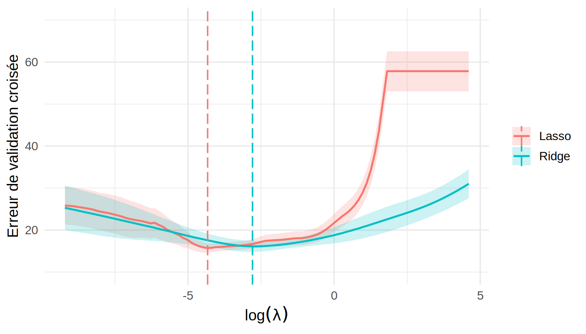
Avec 91 variables pour 166 observations d’entraînement, les moindres carrés sont encore calculables, mais leur variance est énorme : l’erreur test monte à 42,4, soit 2,1 fois celle des moindres carrés sans interactions. Ridge et le lasso ramènent l’erreur test à environ 18,6, au niveau du modèle sans interactions. La figure montre cette fois une vraie courbe en U : le minimum de la validation croisée est atteint à l’intérieur de la grille, et l’erreur remonte quand \(\lambda\to 0\), où les deux estimateurs rejoignent les moindres carrés. Le lasso garde 17 des 91 variables avec lambda.min.
Les interactions n’améliorent donc pas la prédiction de façon nette. Les deux analyses mènent à la même conclusion pratique : un modèle additif simple, dominé par le tour de taille, prédit aussi bien que des modèles beaucoup plus riches. La régularisation est indispensable dès que le nombre de variables approche le nombre d’observations, alors qu’avec 13 variables et 166 observations, elle sert surtout à simplifier le modèle (lambda.1se) sans perte de précision.
Chapitre 7 : \(k\) plus proches voisins et estimateur à noyau
Niveau facile
Exercice 1. Retour à l’énoncé
Les distances à \(x = 4\) sont \(3, 2, 1, 1, 4, 5\). Pour \(k = 2\), \(d_{(2)}(4) = 1\), et les voisins sont les observations en \(X = 3\) et \(X = 5\), d’où \(\hat f(4) = (3+7)/2 = 5\). Pour \(k = 3\), \(d_{(3)}(4) = 2\), et on ajoute l’observation en \(X = 2\), d’où \(\hat f(4) = (4+3+7)/3 = 14/3\approx 4{,}67\).
Avec \(h = 2{,}5\), les observations telles que \(|X_i-4|<2{,}5\) sont celles en \(X = 2, 3, 5\), d’où \(\hat f(4) = 14/3\), la même valeur que le \(k\)NN avec \(k = 3\). Avec \(h = 1\), aucune observation ne vérifie \(|X_i - 4|<1\) (les deux plus proches sont exactement à distance 1). Le numérateur et le dénominateur sont nuls, et l’estimateur n’est pas défini en \(x = 4\). C’est un défaut d’une fenêtre de largeur fixe, que le \(k\)NN n’a pas : il trouve toujours \(k\) voisins.
Les poids non normalisés \(e^{-d_i^2/2}\) valent environ \(0{,}0111\), \(0{,}1353\), \(0{,}6065\), \(0{,}6065\), \(0{,}0003\) et \(0{,}0000\). Leur somme est \(1{,}3598\) et \[\hat f(4) = \frac{0{,}0111\times 2 + 0{,}1353\times 4 + 0{,}6065\times 3 + 0{,}6065\times 7 + 0{,}0003\times 6}{1{,}3598} \approx \frac{6{,}631}{1{,}3598}\approx 4{,}88.\] Les deux voisins à distance 1 portent près de 90 % du poids total.
Exercice 2. Retour à l’énoncé
Conditionnellement aux \(X_i\), les poids \(w_i(x)\) sont des constantes et \(\hat f(x) = \sum_i w_i(x)Y_i\) est une combinaison linéaire de variables indépendantes de variance \(\sigma^2\), d’où \(Var[\hat f(x)] = \sigma^2\sum_i w_i(x)^2\).
Avec le noyau uniforme, \(w_i(x) = 1/n_h(x)\) pour les \(n_h(x)\) observations dans la fenêtre et \(0\) ailleurs, de sorte que \(\sum_i w_i(x)^2 = n_h(x)\cdot 1/n_h(x)^2 = 1/n_h(x)\). On retrouve la variance \(\sigma^2/k\) du \(k\)NN, avec \(n_h(x)\) à la place de \(k\).
Par Cauchy-Schwarz, \(1 = \left(\sum_{i=1}^m w_i\cdot 1\right)^2\leq\sum_{i=1}^m w_i^2\cdot\sum_{i=1}^m 1 = m\sum_i w_i^2\), d’où \(\sum_i w_i^2\geq 1/m\), avec égalité si et seulement si les \(w_i\) sont proportionnels à \(1\), c’est-à-dire tous égaux à \(1/m\). Un noyau non uniforme, comme le noyau gaussien, paie donc un peu de variance pour réduire le biais en donnant plus de poids aux observations les plus proches de \(x\).
Exercice 3. Retour à l’énoncé
Le plus proche voisin de \(X_i\) est l’observation \(i\) elle-même, à distance \(0\), de sorte que \(\hat f(X_i) = Y_i\) et que l’erreur d’entraînement est nulle.
Avec \(k = n\), toutes les observations sont voisines de tout \(x\), et \(\hat f(x) = \bar Y\) est constant. C’est le modèle nul.
L’erreur d’entraînement est nulle pour \(k = 1\) et ne peut pas être plus petite, de sorte que ce critère choisit toujours le \(k\) le plus flexible, qui reproduit le bruit des observations. Le problème vient de ce que chaque \(Y_i\) sert à se prédire lui-même. La validation croisée prédit chaque \(Y_i\) par \(\hat f_{-i}(X_i)\), calculé sans l’observation \(i\). Pour \(k = 1\), cette prédiction est la réponse de l’observation voisine, et l’erreur reflète alors le bruit des deux observations.
Niveau moyen
Exercice 1. Retour à l’énoncé
Posons \(K_{ij} = K\{(X_j-X_i)/h\}\) et \(S_i = \sum_{j=1}^n K_{ij}\), de sorte que \(\hat f(X_i) = \sum_j K_{ij}Y_j/S_i\) et \(w_i(X_i) = K_{ii}/S_i\). Retirer l’observation \(i\) revient à retirer le terme \(j = i\) du numérateur et du dénominateur : \[\hat f_{-i}(X_i) = \frac{\sum_{j\neq i}K_{ij}Y_j}{\sum_{j\neq i}K_{ij}} = \frac{S_i\hat f(X_i) - K_{ii}Y_i}{S_i - K_{ii}} = \frac{\hat f(X_i) - w_i(X_i)Y_i}{1-w_i(X_i)},\] en divisant le numérateur et le dénominateur par \(S_i\). Ainsi, \[Y_i - \hat f_{-i}(X_i) = \frac{Y_i\{1-w_i(X_i)\} - \hat f(X_i) + w_i(X_i)Y_i}{1-w_i(X_i)} = \frac{Y_i - \hat f(X_i)}{1-w_i(X_i)}.\]
La formule ne s’applique pas au \(k\)NN. Pour l’estimateur à noyau, retirer l’observation \(i\) ne change pas les poids relatifs des autres observations. Pour le \(k\)NN, le voisinage change : sans l’observation \(i\), le \((k+1)^{\text{e}}\) plus proche voisin de \(X_i\) entre dans \(N_k(X_i)\). C’est pourquoi le 7 Régression non paramétrique : k plus proches voisins et estimateur à noyau calcule les prédictions LOOCV du \(k\)NN en refaisant le calcul pour chaque \(i\).
Exercice 2. Retour à l’énoncé
Notons \(K_i = K\{(X_i-x)/h\}\geq 0\). Le critère est un polynôme de degré 2 en \(a\), dont la dérivée est \(-2\sum_i K_i(Y_i-a)\). Elle s’annule en \(a = \sum_i K_iY_i/\sum_i K_i\), qui est un minimum puisque la dérivée seconde, \(2\sum_i K_i\), est positive. On reconnaît \(\hat f(x)\).
Autour de chaque point \(x\), on ajuste donc une constante par moindres carrés, en donnant plus de poids aux observations proches de \(x\) : c’est un estimateur localement constant. L’estimateur localement linéaire remplace la constante par une droite centrée en \(x\), en minimisant \[\sum_{i=1}^n K\!\left(\frac{X_i-x}{h}\right)\left\{Y_i - a - b(X_i-x)\right\}^2\] en \((a,b)\), et pose \(\hat f(x) = \hat a\). Près des bords, où les voisins sont tous du même côté de \(x\), la droite corrige le biais du premier ordre de l’estimateur localement constant (voir l’exercice 1 du niveau difficile). C’est ce que fait locpoly avec degree = 1.
Exercice 3. Retour à l’énoncé
Avec \(\boldsymbol\Sigma^{-1} = \mathrm{diag}(1/s_1^2,\ldots,1/s_p^2)\), \[d(\boldsymbol z_i,\boldsymbol z)^2 = \sum_{j=1}^p\frac{(z_{ij}-z_j)^2}{s_j^2} = \sum_{j=1}^p\left(\frac{z_{ij}}{s_j}-\frac{z_j}{s_j}\right)^2,\] le carré de la distance euclidienne entre les vecteurs standardisés.
On a \(\tilde{\boldsymbol z}_i - \tilde{\boldsymbol z} = \boldsymbol B(\boldsymbol z_i-\boldsymbol z)\), la constante \(\boldsymbol c\) s’éliminant, et \[(\tilde{\boldsymbol z}_i-\tilde{\boldsymbol z})^\top(\boldsymbol B\boldsymbol\Sigma\boldsymbol B^\top)^{-1}(\tilde{\boldsymbol z}_i-\tilde{\boldsymbol z}) = (\boldsymbol z_i-\boldsymbol z)^\top\boldsymbol B^\top(\boldsymbol B^\top)^{-1}\boldsymbol\Sigma^{-1}\boldsymbol B^{-1}\boldsymbol B(\boldsymbol z_i-\boldsymbol z) = (\boldsymbol z_i-\boldsymbol z)^\top\boldsymbol\Sigma^{-1}(\boldsymbol z_i-\boldsymbol z).\] La distance est donc la même pour toute transformation affine inversible des variables explicatives : changement d’unités, de point d’origine, ou même remplacement de deux variables par des combinaisons linéaires de celles-ci. Les voisins, et donc l’estimateur \(k\)NN, ne dépendent pas de ces choix, alors que ceux de la distance euclidienne changent dès qu’on change d’unité.
Niveau difficile
Exercice 1. Retour à l’énoncé
Posons \(M = (k-1)/2\). Les voisins sont \(x + m\delta\), pour \(m = -M,\ldots,M\), et le développement de Taylor donne \[E[\hat f(x)] = \frac1k\sum_{m=-M}^M f(x+m\delta) \approx f(x) + f'(x)\frac{\delta}{k}\sum_{m=-M}^M m + \frac{f''(x)\delta^2}{2k}\sum_{m=-M}^M m^2.\] La première somme est nulle par symétrie, et la seconde vaut \(2\sum_{m=1}^M m^2 = M(M+1)(2M+1)/3\). Avec \(M = (k-1)/2\), on a \(M+1 = (k+1)/2\) et \(2M+1 = k\), d’où \(\sum m^2 = k(k^2-1)/12\), et \[\mbox{biais}[\hat f(x)] \approx \frac{f''(x)\delta^2}{2k}\cdot\frac{k(k^2-1)}{12} = \frac{f''(x)\,\delta^2\,(k^2-1)}{24}.\]
Les voisins sont \(x + m\delta\) pour \(m = 0,\ldots,k-1\), et le terme du premier ordre ne s’annule plus : \[E[\hat f(x)] - f(x) \approx f'(x)\frac{\delta}{k}\sum_{m=0}^{k-1}m = f'(x)\frac{\delta}{k}\cdot\frac{k(k-1)}{2} = \frac{f'(x)\,\delta\,(k-1)}{2}.\] Par symétrie, au point le plus à droite, le biais vaut \(-f'(x)\,\delta\,(k-1)/2\), qui est négatif si \(f\) est croissante. Le biais au bord est d’ordre \(k\delta\), celui de l’intérieur d’ordre \((k\delta)^2\). Comme \(k\delta\), la largeur du voisinage, est petit, le biais au bord est beaucoup plus grand. On retrouve l’observation du 7 Régression non paramétrique : k plus proches voisins et estimateur à noyau : les plus gros arbres n’ont que des voisins plus petits, et l’estimateur sous-estime leur hauteur.
Exercice 2. Retour à l’énoncé
Avec \(\delta = 1/n\) et \(k^2-1\approx k^2\), le biais vaut \(f''(x)k^2/(24n^2)\), et \[EQM(k) \approx \frac{f''(x)^2\,k^4}{576\,n^4} + \frac{\sigma^2}{k}.\]
Comme \(\frac{d}{dk}\frac{k^4}{576} = \frac{4k^3}{576} = \frac{k^3}{144}\), la dérivée vaut \[EQM'(k) \approx \frac{f''(x)^2k^3}{144\,n^4} - \frac{\sigma^2}{k^2},\] qui est négative pour les petites valeurs de \(k\) et positive pour les grandes. Elle s’annule lorsque \(f''(x)^2k^5 = 144\,\sigma^2n^4\), soit \[k^* = \left\{\frac{144\,\sigma^2n^4}{f''(x)^2}\right\}^{1/5} \propto n^{4/5}.\] Le nombre optimal de voisins augmente avec \(n\), mais moins vite que \(n\), de sorte que la largeur du voisinage, \(k^*/n\propto n^{-1/5}\), diminue.
En substituant \(k^*\propto n^{4/5}\), les deux termes sont du même ordre : \(\sigma^2/k^*\propto n^{-4/5}\) et \(k^{*4}/n^4\propto n^{16/5-4} = n^{-4/5}\). L’erreur quadratique moyenne optimale décroît donc comme \(n^{-4/5}\), moins vite que le \(n^{-1}\) d’un modèle paramétrique bien spécifié. C’est le prix de la flexibilité : ne rien supposer sur la forme de \(f\) coûte de la précision, et ce prix augmente avec le nombre de variables explicatives (le fléau de la dimension du 9 Modèles additifs et modèles additifs généralisés (GAM)).
Exercice 3. Retour à l’énoncé
Si \(c(x) = 1\), on se trompe lorsque \(Y = 0\), ce qui arrive avec probabilité \(1-\pi(x)\) conditionnellement à \(X = x\). Si \(c(x) = 0\), on se trompe lorsque \(Y = 1\), avec probabilité \(\pi(x)\).
Pour chaque \(x\), l’erreur conditionnelle de \(c^*\) est \(\min\{\pi(x), 1-\pi(x)\}\), la plus petite des deux valeurs possibles d’après a). Pour tout autre classifieur \(c\), on a donc \(P\{Y\neq c(X)\mid X = x\}\geq P\{Y\neq c^*(X)\mid X=x\}\) pour tout \(x\). En prenant l’espérance par rapport à \(X\), \(P\{Y\neq c(X)\}\geq P\{Y\neq c^*(X)\}\).
Le classifieur de Bayes demande de connaître \(\pi(x)\). Le \(k\)NN l’estime par \(\hat\pi(x)\), la proportion de voisins pour lesquels \(Y_i = 1\), et classe selon que \(\hat\pi(x)>1/2\) : il remplace \(\pi\) par son estimation dans la règle optimale. Le seuil \(1/2\) est optimal parce que les deux erreurs coûtent la même chose. Si une erreur coûte \(a\) lorsqu’on prédit \(0\) alors que \(Y = 1\) et \(b\) dans le cas contraire, le même raisonnement mène à prédire \(1\) lorsque \(a\,\pi(x)>b\{1-\pi(x)\}\), soit au seuil \(u = b/(a+b)\). Par exemple, en dépistage, on accepte des faux positifs pour éviter les faux négatifs, et on prend \(u<1/2\).
Chapitre 8 : Polynômes, fonctions par morceaux et splines
Exercices appliqués
Exercice 1. Retour à l’énoncé
- Les moyennes horaires s’obtiennent avec
group_byetsummarise:
moy.no2 <- no2 |>
group_by(heure) |>
summarise(NO2 = mean(NO2)) |>
pull(NO2, name = heure)
round(moy.no2, 1) 0 1 2 3 4 5 6 7 8 9 10 11 12 13 14 15 16 17 18 19
6.4 6.0 6.1 5.8 5.9 6.4 7.6 8.8 8.6 7.1 5.8 4.7 4.0 3.7 3.6 3.8 4.0 4.7 5.5 6.1
20 21 22 23
6.7 6.8 6.7 6.7 plot(0:23, moy.no2, type = "b", pch = 19,
xlab = "Heure (HNE)", ylab = "NO2 moyen (ppb)")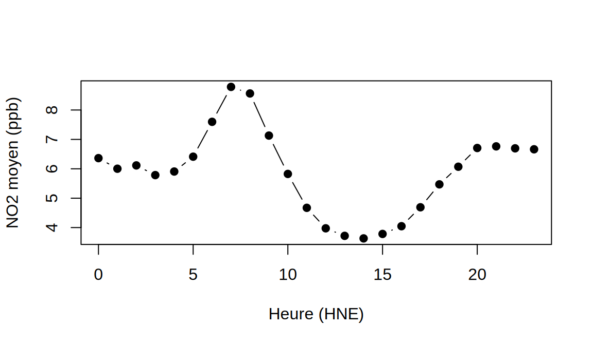
Le cycle a deux sommets : un premier vers 7 h-8 h, puis un second en soirée, à partir de 20 h, avec un creux en début d’après-midi. Le dioxyde d’azote vient surtout de la combustion, et en particulier de la circulation automobile, d’où les pointes du matin et du soir. En après-midi, la couche de mélange de l’atmosphère est plus épaisse, ce qui dilue les polluants, et une partie du NO2 est consommée par la photochimie qui produit l’ozone. C’est pourquoi le creux du NO2 coïncide avec le sommet de l’ozone.
- On ajuste les douze polynômes et on calcule les deux critères :
degres <- 1:12
modeles.no2 <- lapply(degres, function(p) lm(NO2 ~ poly(heure, p), data = no2))
crit.no2 <- rbind(degre = degres,
vc.n = round(sapply(modeles.no2, vc.n), 2),
BIC = round(sapply(modeles.no2, BIC), 1))
crit.no2 [,1] [,2] [,3] [,4] [,5] [,6] [,7] [,8]
degre 1.00 2.00 3.00 4.00 5.00 6.00 7.00 8.00
vc.n 29.58 29.39 28.75 28.69 28.05 27.99 27.89 27.83
BIC 38884.90 38850.60 38719.10 38713.90 38578.50 38572.70 38556.40 38549.80
[,9] [,10] [,11] [,12]
degre 9.00 10.0 11.00 12.00
vc.n 27.84 27.8 27.78 27.79
BIC 38558.30 38556.5 38559.40 38568.00grille.h <- data.frame(heure = seq(0, 23, length.out = 300))
plot(0:23, moy.no2, pch = 19, ylim = c(3, 10), xlab = "Heure (HNE)", ylab = "NO2 (ppb)")
couleurs <- c(2, 4, 3)
for (j in 1:3) {
p <- c(2, 4, 8)[j]
lines(grille.h$heure, predict(modeles.no2[[p]], grille.h), lwd = 2, col = couleurs[j])
}
legend("top", legend = paste("p =", c(2, 4, 8)), col = couleurs, lwd = 2, horiz = TRUE, bty = "n")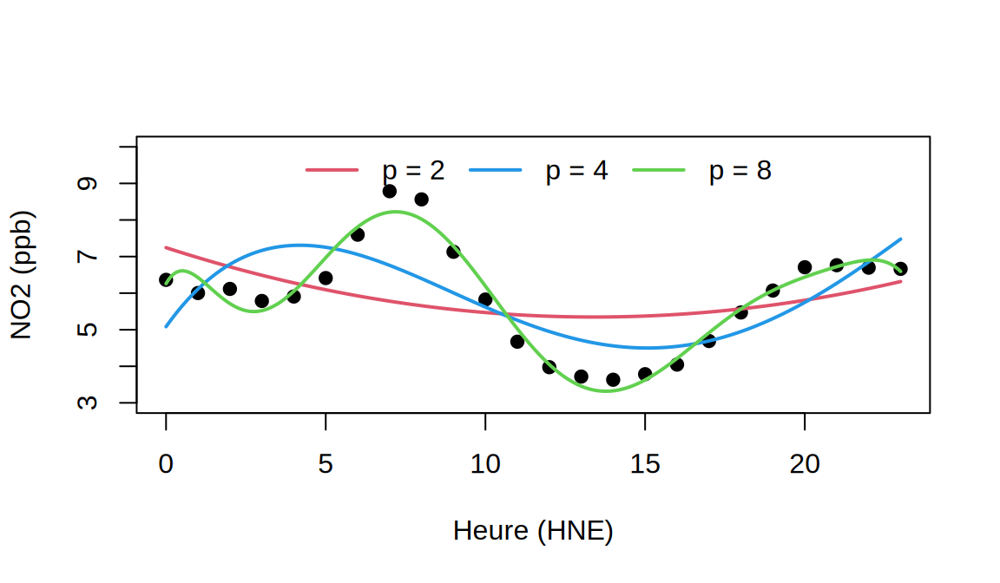
Le BIC est minimal pour \(p = 8\), et \(VC_{(n)}\) diminue jusqu’à environ ce degré, puis devient pratiquement plat. Le polynôme de degré 2 ne voit qu’un creux au milieu de la journée, et celui de degré 4 place la pointe du matin trop tôt et l’aplatit. Le degré 8 reproduit les deux pointes. Les écarts de \(VC_{(n)}\) entre les degrés sont petits en valeur absolue (de 29,58 à 27,78) : l’amplitude du cycle, environ 5 ppb, est faible devant la variabilité d’un jour à l’autre, qui dépend de la météo et de la circulation.
- La courbe change quatre fois de direction (creux de nuit, pointe du matin, creux de l’après-midi, pointe du soir). La dérivée d’un polynôme de degré \(p\) a au plus \(p-1\) racines, de sorte qu’il faut au moins le degré 5, et un peu plus pour que la forme des pointes soit juste. Pour l’ozone, une seule bosse suffisait.
Avec raw = TRUE, la matrice de design contient les colonnes \(x, x^2,\ldots, x^{12}\), et \(23^{12}\approx 2\times 10^{16}\). Les colonnes ont des ordres de grandeur si différents que \(\boldsymbol X^\top\boldsymbol X\) est numériquement singulière, et lm peut écarter des colonnes (coefficients NA) ou donner des estimations imprécises. La fonction poly sans raw = TRUE construit des polynômes orthogonaux, qui engendrent le même espace de fonctions, donc les mêmes valeurs ajustées, avec une matrice parfaitement conditionnée. C’est le même argument que pour les B-splines face à la base des puissances tronquées.
Exercice 2. Retour à l’énoncé
- On reprend le code du 8 Régression non linéaire : polynômes, fonctions par morceaux et splines :
Ks <- c(2, 3, 4, 6, 8, 12, 24)
vc.cut.no2 <- sapply(Ks, function(K) {
bornes <- seq(0, 24, length.out = K + 1)
vc.n(lm(NO2 ~ cut(heure, bornes, right = FALSE), data = no2))
})
rbind(K = Ks, vc.n = round(vc.cut.no2, 2)) [,1] [,2] [,3] [,4] [,5] [,6] [,7]
K 2.00 3.00 4.00 6.00 8.00 12.00 24.00
vc.n 29.16 29.31 28.32 28.38 27.95 27.89 27.87Le critère n’est pas monotone : \(K = 3\) fait moins bien que \(K = 2\), parce que des intervalles de 8 heures mélangent la pointe du matin et le creux de la journée. Il faut aller jusqu’à \(K = 8\) ou plus pour que les intervalles isolent les pointes, et les moyennes horaires (\(K = 24\)) ne font pas mieux que \(K = 12\).
- Avec des bornes choisies d’après le cycle :
bornes5 <- c(0, 6, 10, 16, 20, 24)
m.cut5 <- lm(NO2 ~ cut(heure, bornes5, right = FALSE), data = no2)
vc.n(m.cut5)[1] 28.0406Avec seulement cinq paramètres, ce découpage donne \(VC_{(n)}\approx 28{,}04\), mieux que les découpages réguliers à \(K = 4\) et \(K = 6\). Placer les bornes là où la courbe change vaut mieux qu’augmenter leur nombre au hasard. La même idée vaut pour les nœuds d’une spline de régression : on peut en mettre davantage là où la courbe varie rapidement.
- Sans ordonnée à l’origine, chaque coefficient correspond à un intervalle :
m.cut5b <- lm(NO2 ~ cut(heure, bornes5, right = FALSE) - 1, data = no2)
moyennes.cut5 <- no2 |>
group_by(intervalle = cut(heure, bornes5, right = FALSE)) |>
summarise(moyenne = mean(NO2))
cbind(coefficient = coef(m.cut5b), moyenne = moyennes.cut5$moyenne) coefficient moyenne
cut(heure, bornes5, right = FALSE)[0,6) 6.097661 6.097661
cut(heure, bornes5, right = FALSE)[6,10) 8.019527 8.019527
cut(heure, bornes5, right = FALSE)[10,16) 4.267783 4.267783
cut(heure, bornes5, right = FALSE)[16,20) 5.069399 5.069399
cut(heure, bornes5, right = FALSE)[20,24) 6.707707 6.707707Les deux colonnes sont identiques : \(\hat\beta_k\) est la moyenne des \(Y_i\) dont le \(X_i\) tombe dans le \(k^{\text{e}}\) intervalle (voir aussi l’exercice 1 des exercices théoriques).
Exercice 3. Retour à l’énoncé
- et b) On ajuste les trois familles et on regroupe le critère et les prédictions dans une même table :
nouv <- data.frame(diameter_cm = c(40, 45, 50, 60))
resume <- function(m) c(vc.n = vc.n(m), predict(m, nouv))
tab.extrap <- rbind(
t(sapply(1:5, function(p) resume(lm(height_m ~ poly(diameter_cm, p), data = arbres)))),
t(sapply(3:6, function(d) resume(lm(height_m ~ bs(diameter_cm, df = d), data = arbres)))),
t(sapply(1:6, function(d) resume(lm(height_m ~ ns(diameter_cm, df = d), data = arbres))))
)
rownames(tab.extrap) <- c(paste0("poly ", 1:5), paste0("bs df=", 3:6), paste0("ns df=", 1:6))
colnames(tab.extrap) <- c("vc.n", paste0("D=", nouv$diameter_cm))
round(tab.extrap, 1) vc.n D=40 D=45 D=50 D=60
poly 1 6.2 25.5 27.9 30.4 35.4
poly 2 6.2 23.5 24.6 25.4 26.0
poly 3 6.3 24.3 27.0 30.6 40.9
poly 4 6.6 24.1 23.7 19.6 -9.2
poly 5 6.9 23.9 27.1 35.6 102.0
bs df=3 6.3 24.3 27.0 30.6 40.9
bs df=4 6.4 24.2 26.6 29.5 37.4
bs df=5 6.5 24.1 25.4 26.3 26.3
bs df=6 6.6 24.0 24.9 24.7 20.3
ns df=1 6.2 25.5 27.9 30.4 35.4
ns df=2 6.2 23.7 25.3 26.9 30.2
ns df=3 6.2 24.2 26.1 28.0 31.9
ns df=4 6.3 24.4 26.5 28.6 32.9
ns df=5 6.3 24.4 26.5 28.6 32.9
ns df=6 6.4 24.5 26.8 29.0 33.5L’avertissement de bs (masqué ici) signale justement qu’on prédit au-delà des nœuds frontières. Sur l’étendue des données, tous les modèles se valent : \(VC_{(n)}\) varie peu, et la spline naturelle à 2 degrés de liberté est légèrement meilleure. À 40 cm, toutes les prédictions sont proches. Au-delà, elles divergent complètement. Le polynôme de degré 4 prédit une hauteur négative à 60 cm et celui de degré 5, une hauteur de plus de 100 m. Les splines cubiques bs avec beaucoup de degrés de liberté se mettent à décroître. Seules les splines naturelles, avec 2 degrés de liberté ou plus, donnent des prédictions stables d’un modèle à l’autre.
- Au-delà des nœuds frontières, une spline naturelle est linéaire par construction, et la droite prolonge la pente estimée au bord du domaine. Les polynômes et les splines cubiques prolongent plutôt leurs termes de degré élevé, qui dominent dès qu’on s’éloigne des données. La prédiction à 60 cm reste une extrapolation : rien dans les données ne dit que la hauteur continue de croître au même rythme au-delà de 41,5 cm. En fait, la croissance en hauteur ralentit fortement chez les gros arbres, et les quatre espèces de l’extrait dépassent rarement 25 à 30 m. La spline naturelle évite les prédictions absurdes, mais elle ne remplace pas des données dans la zone qui nous intéresse.
Exercice 4. Retour à l’énoncé
- Le nuage de points montre trois phases : une accélération nulle et très peu bruitée jusqu’à environ 14 ms, puis une forte décélération suivie d’un rebond entre 15 et 35 ms, et enfin un retour progressif vers 0 avec des oscillations amorties.
plot(accel ~ times, data = mcycle, xlab = "Temps (ms)", ylab = "Accélération (g)")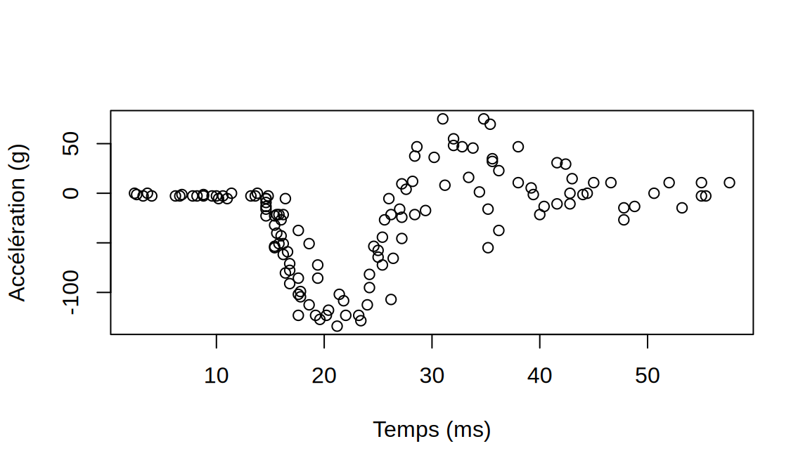
vc.poly.mc <- sapply(1:12, function(p) vc.n(lm(accel ~ poly(times, p), data = mcycle)))
round(rbind(degre = 1:12, vc.n = vc.poly.mc)) [,1] [,2] [,3] [,4] [,5] [,6] [,7] [,8] [,9] [,10] [,11] [,12]
degre 1 2 3 4 5 6 7 8 9 10 11 12
vc.n 2162 2057 1633 1666 1245 1162 1411 812 2000 1723 3323 1556Un polynôme est une seule fonction analytique sur tout le domaine : pour suivre la chute brutale après 14 ms, il doit osciller aussi dans la zone plate du début et dans la queue. Le critère \(VC_{(n)}\) le montre. Il ne décroît pas régulièrement, mais saute d’un degré à l’autre, parce que chaque terme ajouté déplace les oscillations. Le meilleur degré (\(p = 8\)) reste instable : les degrés voisins sont nettement moins bons.
- Avec les splines :
dfs <- 3:15
vc.bs.mc <- sapply(dfs, function(d) vc.n(lm(accel ~ bs(times, df = d), data = mcycle)))
vc.ns.mc <- sapply(dfs, function(d) vc.n(lm(accel ~ ns(times, df = d), data = mcycle)))
round(rbind(df = dfs, bs = vc.bs.mc, ns = vc.ns.mc)) [,1] [,2] [,3] [,4] [,5] [,6] [,7] [,8] [,9] [,10] [,11] [,12] [,13]
df 3 4 5 6 7 8 9 10 11 12 13 14 15
bs 1633 1631 1093 1029 597 549 578 535 532 535 549 554 559
ns 1483 1341 713 583 576 532 530 534 547 552 556 555 562Le critère des splines décroît régulièrement jusqu’à 8 ou 9 degrés de liberté, puis remonte lentement. La spline naturelle à 9 degrés de liberté a le plus petit \(VC_{(n)}\) (530), soit environ 35 % de moins que le meilleur polynôme. Pour les petites valeurs de df, ns fait nettement mieux que bs, parce que les deux degrés de liberté que bs consacre aux bords sont mieux utilisés en nœuds intérieurs dans la zone de l’impact. Comme le minimum est plat, on peut retenir ns(times, df = 8).
- La figure suivante superpose les deux ajustements :
grille.t <- data.frame(times = seq(min(mcycle$times), max(mcycle$times), length.out = 300))
m.poly8 <- lm(accel ~ poly(times, 8), data = mcycle)
m.ns8 <- lm(accel ~ ns(times, df = 8), data = mcycle)
plot(accel ~ times, data = mcycle, col = "grey50", xlab = "Temps (ms)", ylab = "Accélération (g)")
lines(grille.t$times, predict(m.poly8, grille.t), lwd = 2, col = 2)
lines(grille.t$times, predict(m.ns8, grille.t), lwd = 2, col = 4)
legend("bottomright", c("Polynôme, p = 8", "Spline naturelle, df = 8"), col = c(2, 4), lwd = 2)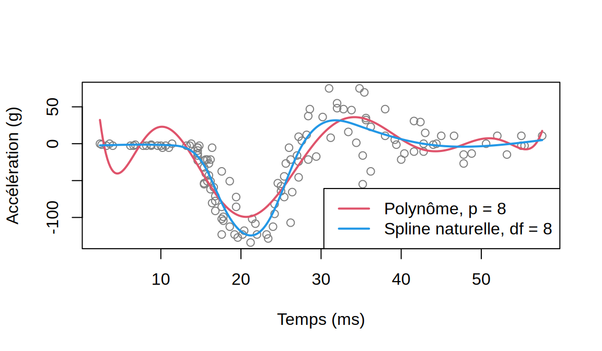
Le polynôme ondule dans la zone plate du début, où les observations sont pourtant presque toutes nulles, et il sous-estime la profondeur de la chute. La spline naturelle reste presque plate au début, descend plus bas au fond de la chute, suit le rebond, puis s’amortit.
- Le dernier essai a lieu à 57,6 ms :
nouv.t <- data.frame(times = c(60, 65))
m.bs8 <- lm(accel ~ bs(times, df = 8), data = mcycle)
round(rbind(poly8 = predict(m.poly8, nouv.t), bs8 = predict(m.bs8, nouv.t),
ns8 = predict(m.ns8, nouv.t)), 1) 1 2
poly8 198.9 2483.1
bs8 -18.0 -84.1
ns8 8.2 15.0Après l’impact, l’accélération doit revenir vers 0. Le polynôme de degré 8 prédit des valeurs de plusieurs centaines, voire milliers de \(g\), ce qui est absurde. La spline cubique s’écarte elle aussi rapidement. La spline naturelle prolonge linéairement la tendance au bord et reste dans l’ordre de grandeur des données, même si elle ne prévoit pas le retour à 0 que la physique suggère. Aucune méthode de régression n’extrapole bien, mais la spline naturelle limite les dégâts.
Exercice 5. Retour à l’énoncé
- On ajuste la spline de lissage :
sp.mc <- smooth.spline(mcycle$times, mcycle$accel)
sp.mcCall:
smooth.spline(x = mcycle$times, y = mcycle$accel)
Smoothing Parameter spar= 0.6598558 lambda= 0.00011075 (14 iterations)
Equivalent Degrees of Freedom (Df): 12.20876
Penalized Criterion (RSS): 38650.54
GCV: 565.4513La GCV retient environ 12,2 degrés de liberté effectifs. C’est plus que les 9 paramètres de ns(times, df = 8) (ordonnée à l’origine comprise), mais la comparaison est indirecte : la spline de lissage dispose d’un nœud par valeur distincte de times (94 nœuds) et répartit sa flexibilité là où les données l’exigent, alors que ns place ses nœuds aux quantiles de times. Le critère GCV (565) est du même ordre que le \(VC_{(n)}\) de la spline naturelle.
- On compare trois niveaux de lissage :
plot(accel ~ times, data = mcycle, col = "grey50", xlab = "Temps (ms)", ylab = "Accélération (g)")
lines(predict(smooth.spline(mcycle$times, mcycle$accel, df = 5), grille.t$times), lwd = 2, col = 2)
lines(predict(sp.mc, grille.t$times), lwd = 2, col = 4)
lines(predict(smooth.spline(mcycle$times, mcycle$accel, df = 30), grille.t$times), lwd = 2, col = 3)
legend("bottomright", c("df = 5", "GCV", "df = 30"), col = c(2, 4, 3), lwd = 2)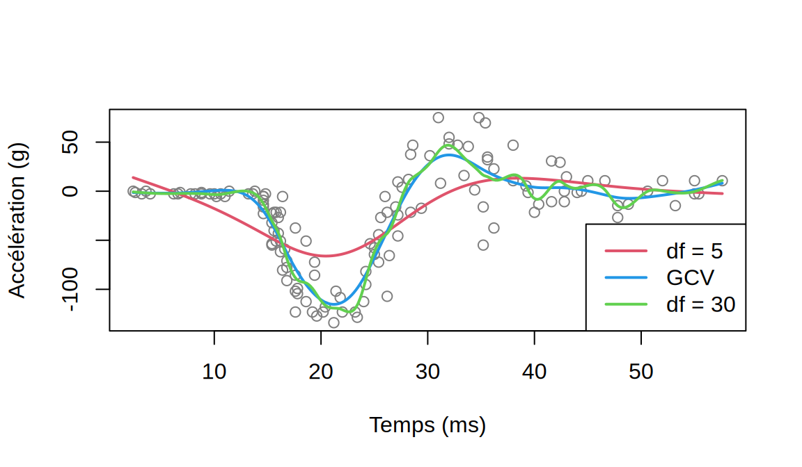
Avec 5 degrés de liberté, la pénalité est trop forte : la courbe n’atteint pas le fond de la chute et commence à descendre avant 14 ms (biais élevé). Avec 30 degrés de liberté, elle suit les fluctuations des observations individuelles, surtout dans la queue (variance élevée). La GCV choisit un intermédiaire.
- On calcule l’écart-type des résidus par zone :
res.mc <- mcycle$accel - predict(sp.mc, mcycle$times)$y
ecarts.zone <- tibble(residu = res.mc,
zone = cut(mcycle$times, c(0, 14, 40, 60),
labels = c("< 14 ms", "14-40 ms", "> 40 ms"))) |>
group_by(zone) |>
summarise(ecart.type = sd(residu))
ecarts.zone# A tibble: 3 × 2
zone ecart.type
<fct> <dbl>
1 < 14 ms 3.67
2 14-40 ms 25.4
3 > 40 ms 13.5 La dispersion des résidus est d’environ 4 \(g\) avant l’impact, mais de 25 \(g\) pendant l’impact : la variance n’est pas constante. Or la spline de lissage, comme la GCV, suppose implicitement des erreurs de même variance. Le \(\lambda\) choisi est un compromis global, trop peu lissant pour la zone bruitée et sans conséquence dans la zone calme, où les données sont presque exactes. Les intervalles de confiance usuels, qui utilisent une seule estimation de \(\sigma\), seraient trop larges avant 14 ms et trop étroits pendant l’impact. On pourrait corriger en pondérant les observations par l’inverse de leur variance (argument w de smooth.spline, ou weights de lm), estimée par exemple à partir de ces écarts-types par zone.
Exercice 6. Retour à l’énoncé
- On suit la recette du 1 Simulations de Monte Carlo :
f.vraie <- function(x) sin(2 * pi * x)
x0 <- c(0.02, 0.5, 0.98)
set.seed(4300)
B <- 500
pred <- replicate(B, {
x <- runif(50)
y <- f.vraie(x) + rnorm(50, sd = 0.3)
m.bs <- lm(y ~ bs(x, df = 6, Boundary.knots = c(0, 1)))
m.ns <- lm(y ~ ns(x, df = 6, Boundary.knots = c(0, 1)))
c(predict(m.bs, data.frame(x = x0)), predict(m.ns, data.frame(x = x0)))
})- Chaque ligne de
predcorrespond à une méthode et à un point \(x_0\) :
biais <- rowMeans(pred) - rep(f.vraie(x0), 2)
variance <- apply(pred, 1, var)
tab.mc <- rbind(biais = biais, variance = variance, EQM = biais^2 + variance)
colnames(tab.mc) <- paste(rep(c("bs", "ns"), each = 3), "x0 =", rep(x0, 2))
round(tab.mc, 4) bs x0 = 0.02 bs x0 = 0.5 bs x0 = 0.98 ns x0 = 0.02 ns x0 = 0.5
biais 0.0123 0.0024 0.0133 0.0156 0.0041
variance 0.0878 0.0093 0.0932 0.0425 0.0109
EQM 0.0879 0.0093 0.0933 0.0427 0.0110
ns x0 = 0.98
biais 0.0017
variance 0.0483
EQM 0.0483Au centre (\(x_0 = 0{,}5\)), les deux estimateurs sont équivalents. Aux bords, la variance de bs est environ 2 fois plus grande que celle de ns. Le biais reste faible dans les deux cas, de sorte que l’erreur quadratique moyenne est dominée par la variance et nettement plus petite pour la spline naturelle. L’erreur-type de Monte Carlo d’une variance estimée est d’environ \(\hat v\sqrt{2/(B-1)}\), soit 6 % de sa valeur, ce qui est largement assez précis pour conclure.
Les deux modèles ont exactement le même nombre de paramètres (6 plus l’ordonnée à l’origine). La spline cubique
bs(x, df = 6)a 3 nœuds intérieurs, et elle laisse la courbure libre aux deux bords, où peu d’observations la contraignent. La spline naturelle impose \(f'' = 0\) aux bords, ce qui libère deux paramètres qu’elle réinvestit en nœuds intérieurs (5 au lieu de 3). Elle gagne en stabilité aux bords et en flexibilité au centre.On reprend le même code avec la nouvelle fonction et la même graine :
f.cos <- function(x) cos(2 * pi * x)
set.seed(4300)
pred.cos <- replicate(B, {
x <- runif(50)
y <- f.cos(x) + rnorm(50, sd = 0.3)
m.bs <- lm(y ~ bs(x, df = 6, Boundary.knots = c(0, 1)))
m.ns <- lm(y ~ ns(x, df = 6, Boundary.knots = c(0, 1)))
c(predict(m.bs, data.frame(x = x0)), predict(m.ns, data.frame(x = x0)))
})
biais.cos <- rowMeans(pred.cos) - rep(f.cos(x0), 2)
variance.cos <- apply(pred.cos, 1, var)
tab.cos <- rbind(biais = biais.cos, variance = variance.cos, EQM = biais.cos^2 + variance.cos)
colnames(tab.cos) <- colnames(tab.mc)
round(tab.cos, 4) bs x0 = 0.02 bs x0 = 0.5 bs x0 = 0.98 ns x0 = 0.02 ns x0 = 0.5
biais 0.0064 0.0047 0.0037 0.0488 0.0055
variance 0.0849 0.0094 0.0906 0.0446 0.0111
EQM 0.0850 0.0094 0.0907 0.0469 0.0111
ns x0 = 0.98
biais 0.0459
variance 0.0498
EQM 0.0520Cette fois, la contrainte \(f''(0) = f''(1) = 0\) est fausse, puisque \(f''(0) = -4\pi^2\). La spline naturelle a donc un biais aux bords, environ dix fois plus grand que celui de la spline cubique. Ce biais reste toutefois petit devant l’écart-type de l’estimateur, et le gain en variance l’emporte encore : avec \(n = 50\), l’erreur quadratique moyenne de ns reste nettement plus petite aux bords. Le compromis pourrait s’inverser avec un \(n\) beaucoup plus grand, puisque la variance diminue avec \(n\) alors que le biais de la contrainte, lui, ne disparaît pas (il diminue seulement à mesure que les nœuds se rapprochent des bords).
Exercice 7. Retour à l’énoncé
- et b) La base contient \(1, x, x^2, x^3\) et une fonction \((x-c_k)_+^3\) par nœud :
base.pt <- function(x, noeuds) {
cbind(1, x, x^2, x^3, sapply(noeuds, function(c) pmax(x - c, 0)^3))
}
comparaison <- t(sapply(c(3, 6, 10, 15), function(K) {
noeuds <- quantile(mcycle$times, (1:K) / (K + 1))
X.pt <- base.pt(mcycle$times, noeuds)
m.pt <- lm(mcycle$accel ~ X.pt - 1)
m.bs <- lm(accel ~ bs(times, knots = noeuds), data = mcycle)
c(K = K,
ecart.max = max(abs(fitted(m.pt) - fitted(m.bs))),
kappa.pt = kappa(crossprod(X.pt), exact = TRUE),
kappa.bs = kappa(crossprod(model.matrix(m.bs)), exact = TRUE))
}))
signif(comparaison, 3) K ecart.max kappa.pt kappa.bs
[1,] 3 9.10e-12 6.42e+11 430
[2,] 6 3.60e-11 2.05e+12 747
[3,] 10 8.87e-11 7.96e+12 1130
[4,] 15 4.62e-10 2.94e+13 1800- Les valeurs ajustées des deux bases sont identiques, à l’erreur d’arrondi près (\(10^{-10}\) au plus), parce que les deux bases engendrent le même espace de splines cubiques avec les mêmes nœuds. L’estimateur des moindres carrés, \(\hat{\boldsymbol Y} = \boldsymbol H\boldsymbol Y\), ne dépend que de cet espace (la matrice chapeau est la projection orthogonale sur l’espace engendré par les colonnes de \(\boldsymbol X\)). Le nombre de condition est cependant de l’ordre de \(10^{12}\) à \(10^{13}\) pour les puissances tronquées, contre quelques centaines ou milliers pour les B-splines. Avec
timesjusqu’à 57,6 ms, la colonne \(x^3\) dépasse \(10^5\) alors que la première vaut 1, et les fonctions \((x-c_k)_+^3\) de nœuds voisins sont presque colinéaires. En double précision, un nombre de condition de \(10^{13}\) fait perdre environ 13 des 16 chiffres significatifs dans la résolution des équations normales. Ici,lms’en sort parce qu’il utilise une décomposition QR plutôt que d’inverser \(\boldsymbol X^\top\boldsymbol X\), mais les coefficients eux-mêmes sont mal déterminés et la situation se dégrade avec plus de nœuds ou des valeurs de \(x\) plus grandes.
Exercices théoriques
Exercice 1. Retour à l’énoncé
L’élément \((k,l)\) de \(\boldsymbol X^\top\boldsymbol X\) est \(\sum_i b_k(X_i)b_l(X_i)\). Comme les intervalles sont disjoints, \(b_k(X_i)b_l(X_i) = 0\) si \(k\neq l\), et \(b_k(X_i)^2 = b_k(X_i)\), dont la somme est \(n_k\). De même, la \(k^{\text{e}}\) composante de \(\boldsymbol X^\top\boldsymbol Y\) est \(\sum_i b_k(X_i)Y_i\), la somme des \(Y_i\) de l’intervalle \(k\). Ainsi, \[\hat\beta_k = \frac{\sum_i b_k(X_i)Y_i}{n_k},\] la moyenne des réponses de l’intervalle.
On a \(Var[\hb] = \sigma^2(\boldsymbol X^\top\boldsymbol X)^{-1} = \sigma^2\mathrm{diag}(1/n_1,\ldots,1/n_K)\). Ses éléments diagonaux sont \(\sigma^2/n_k\) et ses éléments hors diagonale sont nuls. Chaque \(\hat\beta_k\) n’utilise que les observations de son intervalle, si bien qu’un intervalle peu peuplé a une estimation très variable. Avec des intervalles de même largeur, c’est ce qui arrive là où les \(X_i\) sont rares, par exemple aux extrémités du domaine.
Exercice 2. Retour à l’énoncé
Pour \(x<c\), \(h\) est identiquement nulle, ainsi que toutes ses dérivées. Pour \(x>c\), \[h'(x,c) = 3(x-c)^2, \qquad h''(x,c) = 6(x-c), \qquad h'''(x,c) = 6.\] Quand \(x\to c^+\), \(h\), \(h'\) et \(h''\) tendent vers \(0\), la valeur commune à gauche : elles sont continues en \(c\). En revanche, \(h'''\) vaut \(0\) à gauche et \(6\) à droite, ce qui est un saut.
Sur chaque intervalle entre deux nœuds consécutifs, \(f\) est un polynôme de degré au plus 3, puisque chaque \((x-c_k)_+^3\) y est soit nul, soit un polynôme cubique. Par a), \(f\), \(f'\) et \(f''\) sont continues partout, et seule \(f'''\) saute aux nœuds (de \(6\theta_k\) en \(c_k\)). C’est la définition d’une spline cubique. Elle compte \(4\) coefficients polynomiaux et \(K-1\) coefficients \(\theta_k\), soit \(K+3\) paramètres, ce qui correspond au compte \(K+p\) du 8 Régression non linéaire : polynômes, fonctions par morceaux et splines avec \(p = 3\). Les \(\theta_k\) mesurent les sauts de la dérivée troisième, d’où leur interprétation peu parlante.
Exercice 3. Retour à l’énoncé
Sur \((-\infty,\xi_1]\), tous les termes tronqués sont nuls et \(f(x) = \beta_0+\beta_1x+\beta_2x^2+\beta_3x^3\). Ce polynôme est linéaire si et seulement si ses coefficients de degrés 2 et 3 sont nuls.
Pour \(x\geq\xi_m\), tous les termes tronqués sont actifs et, avec \(\beta_2 = \beta_3 = 0\), \[f(x) = \beta_0+\beta_1x+\sum_k\theta_k(x^3 - 3\xi_kx^2 + 3\xi_k^2x - \xi_k^3).\] Le coefficient de \(x^3\) est \(\sum_k\theta_k\) et celui de \(x^2\) est \(-3\sum_k\theta_k\xi_k\). La fonction est linéaire sur \([\xi_m,\infty)\) si et seulement si ces deux coefficients sont nuls.
La spline cubique compte \(m+4\) paramètres, et la linéarité aux deux bouts impose les quatre contraintes linéaires indépendantes \(\beta_2 = 0\), \(\beta_3 = 0\), \(\sum_k\theta_k = 0\) et \(\sum_k\theta_k\xi_k = 0\). Il reste \(m+4-4 = m\) degrés de liberté. Au 8 Régression non linéaire : polynômes, fonctions par morceaux et splines, les nœuds sont \(c_0,\ldots,c_K\), soit \(m = K+1\) nœuds en comptant les nœuds frontières, d’où \(K+1\) degrés de liberté. La fonction
ns(x, df = d)place ainsi \(d-1\) nœuds intérieurs entre les deux nœuds frontières, soit \(d+1\) nœuds et \(d+1\) paramètres avec l’ordonnée à l’origine.
Exercice 4. Retour à l’énoncé
Posons \(g(\beta_1,\beta_2) = -\beta_1/(2\beta_2)\). Son gradient est \[\nabla g = \left(\frac{\partial g}{\partial\beta_1}, \frac{\partial g}{\partial\beta_2}\right)^\top = \left(-\frac{1}{2\beta_2},\ \frac{\beta_1}{2\beta_2^2}\right)^\top = -\frac{1}{2\beta_2}\left(1,\ 2x^*\right)^\top,\] puisque \(\beta_1/(2\beta_2^2) = -x^*/\beta_2\). La méthode du delta multivariée donne \(Var[\hat x^*]\approx\nabla g^\top\,\boldsymbol\Sigma\,\nabla g\), où \(\boldsymbol\Sigma\) est la matrice de variance-covariance de \((\hat\beta_1,\hat\beta_2)\) : \[Var[\hat x^*]\approx\frac{1}{4\beta_2^2}\left(1,\ 2x^*\right)\boldsymbol\Sigma\begin{pmatrix}1\\ 2x^*\end{pmatrix} = \frac{1}{4\beta_2^2}\left\{Var[\hat\beta_1] + 4x^*Cov[\hat\beta_1,\hat\beta_2] + 4x^{*2}Var[\hat\beta_2]\right\}.\] En pratique, on remplace les paramètres par leurs estimations.
Le facteur \(1/(4\beta_2^2)\) explose quand \(\beta_2\to 0\). La courbe est alors presque une droite, et son extremum est rejeté très loin, souvent hors du domaine des données, où il n’a pas de sens (pour les arbres du 8 Régression non linéaire : polynômes, fonctions par morceaux et splines, la parabole concave culmine bien au-delà du plus gros diamètre observé). De plus, \(\hat x^*\) est un rapport. Si \((\hat\beta_1,\hat\beta_2)\) suit exactement une loi normale, la densité de \(\hat\beta_2\) est positive en 0 et le rapport n’a même pas de variance finie. La méthode du delta n’est donc utile que si \(P(\hat\beta_2\approx 0)\) est négligeable, ce qui n’est plus le cas lorsque \(\beta_2\) est proche de 0 par rapport à son erreur-type. On ne devrait interpréter \(\hat x^*\) que lorsque \(\hat\beta_2\) est clairement non nul et que \(\hat x^*\) tombe dans le domaine des données.
Exercice 5. Retour à l’énoncé
Notons \(\boldsymbol G = \boldsymbol X^\top\boldsymbol X+\lambda\boldsymbol M\). Sans l’observation \(i\), la matrice devient \(\boldsymbol G - \boldsymbol X_i\boldsymbol X_i^\top\) et le second membre \(\boldsymbol X^\top\boldsymbol Y - \boldsymbol X_iY_i\). Par Sherman-Morrison avec \(\boldsymbol u = \boldsymbol v = \boldsymbol X_i\), et puisque \(\boldsymbol X_i^\top\boldsymbol G^{-1}\boldsymbol X_i = A_{ii}\), \[(\boldsymbol G-\boldsymbol X_i\boldsymbol X_i^\top)^{-1} = \boldsymbol G^{-1} + \frac{\boldsymbol G^{-1}\boldsymbol X_i\boldsymbol X_i^\top\boldsymbol G^{-1}}{1-A_{ii}}.\] En multipliant par \(\boldsymbol X^\top\boldsymbol Y - \boldsymbol X_iY_i\) et en utilisant \(\boldsymbol G^{-1}\boldsymbol X^\top\boldsymbol Y = \hb_\lambda\) et \(\boldsymbol X_i^\top\hb_\lambda = \hat Y_i\), \[\hb_{\lambda,(-i)} = \hb_\lambda - \boldsymbol G^{-1}\boldsymbol X_iY_i + \frac{\boldsymbol G^{-1}\boldsymbol X_i(\hat Y_i - A_{ii}Y_i)}{1-A_{ii}} = \hb_\lambda - \frac{\boldsymbol G^{-1}\boldsymbol X_i(Y_i-\hat Y_i)}{1-A_{ii}}.\] En prémultipliant par \(\boldsymbol X_i^\top\), on obtient \(\boldsymbol X_i^\top\hb_{\lambda,(-i)} = \hat Y_i - A_{ii}(Y_i-\hat Y_i)/(1-A_{ii})\), d’où \[Y_i - \boldsymbol X_i^\top\hb_{\lambda,(-i)} = (Y_i-\hat Y_i)\left(1+\frac{A_{ii}}{1-A_{ii}}\right) = \frac{Y_i-\hat Y_i}{1-A_{ii}}.\]
L’égalité de a) est exacte pour tout \(\lambda\) fixé, comme pour la régression linéaire (\(\lambda = 0\), où l’on retrouve l’exercice 1 du niveau moyen du chapitre 5). La moyenne des carrés donne donc exactement le critère LOOCV, à condition que \(\lambda\) reste fixé lorsqu’on retire une observation. C’est ce que suppose le critère OCV du 9 Modèles additifs et modèles additifs généralisés (GAM) : on calcule \(VC_{(n)}(\lambda)\) pour chaque \(\lambda\), puis on minimise.
Exercice 6. Retour à l’énoncé
On écrit \(\boldsymbol X^\top\boldsymbol X+\lambda\boldsymbol M = \boldsymbol R^\top(\boldsymbol I + \lambda\boldsymbol R^{-\top}\boldsymbol M\boldsymbol R^{-1})\boldsymbol R = \boldsymbol R^\top\boldsymbol U(\boldsymbol I+\lambda\boldsymbol D)\boldsymbol U^\top\boldsymbol R\), dont l’inverse est \(\boldsymbol R^{-1}\boldsymbol U(\boldsymbol I+\lambda\boldsymbol D)^{-1}\boldsymbol U^\top\boldsymbol R^{-\top}\). Par invariance cyclique de la trace, \[\mathrm{Tr}(\boldsymbol A_\lambda) = \mathrm{Tr}\left\{(\boldsymbol I+\lambda\boldsymbol D)^{-1}\boldsymbol U^\top\boldsymbol R^{-\top}\boldsymbol X^\top\boldsymbol X\boldsymbol R^{-1}\boldsymbol U\right\} = \mathrm{Tr}\left\{(\boldsymbol I+\lambda\boldsymbol D)^{-1}\right\} = \sum_{k=1}^q\frac{1}{1+\lambda d_k},\] puisque \(\boldsymbol R^{-\top}\boldsymbol X^\top\boldsymbol X\boldsymbol R^{-1} = \boldsymbol I\) et \(\boldsymbol U^\top\boldsymbol U = \boldsymbol I\).
Comme \(\boldsymbol R\) et \(\boldsymbol U\) sont inversibles, le nombre de valeurs propres nulles de \(\boldsymbol R^{-\top}\boldsymbol M\boldsymbol R^{-1}\) est la dimension du noyau de \(\boldsymbol M\). Or \(\boldsymbol\beta^\top\boldsymbol M\boldsymbol\beta = \int f''(t)^2dt\) pour \(f = \sum_k\beta_kb_k\), et comme \(\boldsymbol M\) est semi-définie positive, \(\boldsymbol M\boldsymbol\beta = \boldsymbol 0\) si et seulement si \(\boldsymbol\beta^\top\boldsymbol M\boldsymbol\beta = 0\), c’est-à-dire \(f''\equiv 0\) sur \([A,B]\). Les fonctions de la base dont la dérivée seconde est nulle sont les fonctions linéaires \(a+bx\), qui appartiennent à l’espace des splines cubiques. Cet ensemble est de dimension 2.
Pour \(\lambda = 0\), chaque terme vaut 1 et la somme vaut \(q\). Chaque terme \(1/(1+\lambda d_k)\) décroît en \(\lambda\) si \(d_k>0\) et reste égal à 1 si \(d_k = 0\). Quand \(\lambda\to\infty\), les termes avec \(d_k>0\) tendent vers 0 et il reste les deux termes avec \(d_k = 0\). Les degrés de liberté effectifs décroissent donc de \(q\) à 2, et la limite correspond à la droite des moindres carrés, que la pénalité ne touche pas.
Chapitre 9 : Modèles additifs et modèles additifs généralisés (GAM)
Exercices appliqués
Exercice 1. Retour à l’énoncé
- On ajuste le modèle et on trace la fonction lisse :
g.arbres <- gam(height_m ~ s(diameter_cm) + espece, data = arbres)
summary(g.arbres)
Family: gaussian
Link function: identity
Formula:
height_m ~ s(diameter_cm) + espece
Parametric coefficients:
Estimate Std. Error t value Pr(>|t|)
(Intercept) 14.0580 0.3283 42.821 < 2e-16 ***
especeÉpinette noire -1.5989 0.4658 -3.433 0.000731 ***
especeÉrable rouge 0.3866 0.4785 0.808 0.420121
especeSapin baumier -1.5775 0.4663 -3.383 0.000867 ***
---
Signif. codes: 0 '***' 0.001 '**' 0.01 '*' 0.05 '.' 0.1 ' ' 1
Approximate significance of smooth terms:
edf Ref.df F p-value
s(diameter_cm) 2.676 3.36 95.38 <2e-16 ***
---
Signif. codes: 0 '***' 0.001 '**' 0.01 '*' 0.05 '.' 0.1 ' ' 1
R-sq.(adj) = 0.674 Deviance explained = 68.3%
GCV = 5.5246 Scale est. = 5.3402 n = 200plot(g.arbres, shade = TRUE, xlab = "Diamètre (cm)", ylab = "f(diamètre)")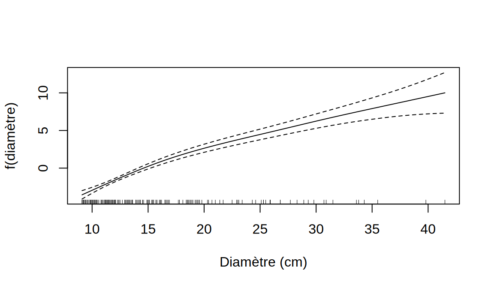
La fonction du diamètre utilise environ 2,7 degrés de liberté effectifs. Elle est croissante et concave : la hauteur augmente rapidement avec le diamètre pour les petits arbres, puis de plus en plus lentement, et la bande s’élargit au-delà de 30 cm, où les arbres sont rares. On retrouve la relation allométrique du 5 Prédiction, mesures de performance et validation croisée. À diamètre égal, l’épinette noire et le sapin baumier sont plus courts que le bouleau à papier.
- On compare les deux modèles :
l.arbres <- lm(height_m ~ diameter_cm + espece, data = arbres)
c(GAM = AIC(g.arbres), lineaire = AIC(l.arbres)) GAM lineaire
911.1896 919.0261 L’AIC du modèle additif est plus petit d’environ 8 points, malgré ses degrés de liberté supplémentaires : la courbure est réelle, sans être forte. Contrairement à l’exemple logistique du 9 Modèles additifs et modèles additifs généralisés (GAM), où la fonction lisse s’était réduite à une droite, le modèle additif apporte ici quelque chose.
- L’AIC compare des log-vraisemblances, c’est-à-dire des densités de la réponse. Le modèle log-log donne la densité de \(\log H\), et pas celle de \(H\). Si \(Z = \log H\) a la densité \(f_Z\), la densité de \(H\) est \(f_H(h) = f_Z(\log h)/h\) (changement de variable). Ainsi, \[\ell_H = \sum_i\log f_H(H_i) = \ell_Z - \sum_i\log H_i, \qquad AIC_H = -2\ell_H + 2k = AIC_Z + 2\sum_i\log H_i.\] On fait la correction :
l.loglog <- lm(log(height_m) ~ log(diameter_cm) + espece, data = arbres)
c(brut = AIC(l.loglog), corrige = AIC(l.loglog) + 2 * sum(log(arbres$height_m)),
GAM = AIC(g.arbres)) brut corrige GAM
-96.59814 922.30493 911.18960 L’AIC brut du modèle log-log est négatif et n’a rien à voir avec les deux autres. Une fois ramené à l’échelle de \(H\), il vaut environ 922, ce qui est moins bon que le modèle additif et même un peu moins bon que la droite. Sur l’échelle de \(H\), la loi de puissance impose une forme concave trop rigide pour ces données. Notez que les deux modèles diffèrent aussi par la structure de l’erreur, additive pour le modèle additif et multiplicative pour le modèle log-log.
Exercice 2. Retour à l’énoncé
- L’argument
bycrée une fonction lisse par niveau du facteur. Le terme paramétriqueespecereste nécessaire, parce que chaque fonction est centrée :
g.by <- gam(height_m ~ s(diameter_cm, by = espece) + espece, data = arbres)
round(summary(g.by)$s.table, 3) edf Ref.df F p-value
s(diameter_cm):especeBouleau à papier (blanc) 1.000 1.000 64.334 0
s(diameter_cm):especeÉpinette noire 2.042 2.560 33.033 0
s(diameter_cm):especeÉrable rouge 5.450 6.476 23.188 0
s(diameter_cm):especeSapin baumier 1.000 1.000 57.042 0par(mfrow = c(2, 2))
plot(g.by, shade = TRUE, xlab = "Diamètre (cm)")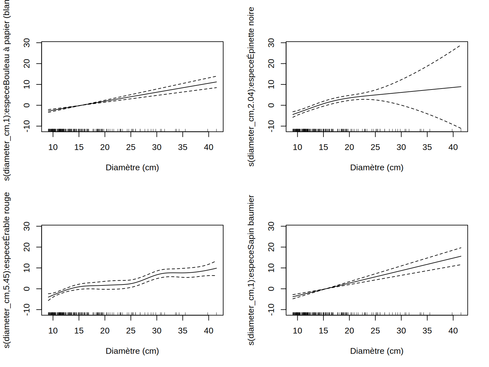
Les fonctions du bouleau à papier et du sapin baumier se réduisent à des droites (1 degré de liberté effectif), celle de l’épinette noire est légèrement courbée, alors que celle de l’érable rouge utilise plus de 5 degrés de liberté et présente des ondulations.
- On compare les deux modèles :
c(commune = AIC(g.arbres), par.espece = AIC(g.by)) commune par.espece
911.1896 905.6466 anova(g.arbres, g.by, test = "F")Analysis of Deviance Table
Model 1: height_m ~ s(diameter_cm) + espece
Model 2: height_m ~ s(diameter_cm, by = espece) + espece
Resid. Df Resid. Dev Df Deviance F Pr(>F)
1 192.64 1032.39
2 184.96 938.01 7.6764 94.38 2.4447 0.01687 *
---
Signif. codes: 0 '***' 0.001 '**' 0.01 '*' 0.05 '.' 0.1 ' ' 1L’AIC est plus petit pour le modèle avec une fonction par espèce, et le test \(F\) approximatif rejette le modèle à fonction commune au seuil de 5 %.
- On programme la validation croisée à 10 blocs, en réutilisant la même partition pour les trois modèles :
set.seed(4300)
blocs <- sample(rep(1:10, length.out = nrow(arbres)))
vc.gam <- function(formule) {
mean(sapply(1:10, function(k) {
m <- gam(formule, data = arbres[blocs != k, ])
mean((arbres$height_m[blocs == k] - predict(m, arbres[blocs == k, ]))^2)
}))
}
c(lineaire = vc.gam(height_m ~ diameter_cm + espece),
commune = vc.gam(height_m ~ s(diameter_cm) + espece),
par.espece = vc.gam(height_m ~ s(diameter_cm, by = espece) + espece)) lineaire commune par.espece
5.809622 5.665079 5.910435 La validation croisée donne la conclusion inverse : le modèle avec une fonction par espèce prédit moins bien que le modèle à fonction commune, et même moins bien que le modèle linéaire. Deux explications se combinent. D’abord, l’AIC et le test \(F\) traitent les paramètres de lissage comme connus, alors qu’ils sont estimés. Avec 50 arbres par espèce, la courbe de l’érable rouge suit des particularités de l’échantillon que la sélection de \(\lambda\) par GCV n’a pas su pénaliser, et ces deux critères ne tiennent pas compte de l’incertitude sur ce choix. Ensuite, la validation croisée réestime tout, y compris les \(\lambda\), sur chaque échantillon d’entraînement, et mesure directement la qualité des prédictions. Avec un échantillon de cette taille, la fonction commune, qui emprunte l’information des quatre espèces, est le choix le plus sûr. Notez que la validation croisée à 10 blocs a elle-même une variabilité, qu’on pourrait évaluer en répétant le calcul avec d’autres partitions.
Exercice 3. Retour à l’énoncé
- Avec des splines ordinaires :
m.ord <- gam(O3 ~ s(heure) + s(jour), data = longueuil)
predict(m.ord, data.frame(heure = 12, jour = c(1, 365))) 1 2
31.30688 37.49108 Les deux prédictions diffèrent de 6,2 ppb, alors que deux jours consécutifs devraient donner des valeurs voisines.
- Une spline cyclique impose que la fonction et ses deux premières dérivées se raccordent aux bornes du cycle. Les bornes \(-0{,}5\) et \(23{,}5\) (ou \(0{,}5\) et \(365{,}5\)) font que 23 h et 0 h, ou le 365e et le 1er jour, sont à la même distance que deux autres valeurs consécutives :
bornes <- list(heure = c(-0.5, 23.5), jour = c(0.5, 365.5))
m.cyc <- gam(O3 ~ s(heure, bs = "cc", k = 12) + s(jour, bs = "cc", k = 20),
data = longueuil, knots = bornes)
predict(m.cyc, data.frame(heure = 12, jour = c(1, 365))) 1 2
33.24509 33.32258 c(ordinaire = AIC(m.ord), cyclique = AIC(m.cyc))ordinaire cyclique
63782.33 63503.20 Les deux prédictions sont maintenant presque égales, et l’AIC diminue d’environ 279 points. L’amélioration vient de la contrainte cyclique, mais aussi de la base plus riche pour le jour (\(k = 20\) plutôt que 10).
- La fonction
gam.checkproduit des graphiques de diagnostic des résidus et un test de la dimension de base :
set.seed(1)
gam.check(m.cyc)
Method: GCV Optimizer: magic
Smoothing parameter selection converged after 8 iterations.
The RMS GCV score gradient at convergence was 0.0001168144 .
The Hessian was positive definite.
Model rank = 29 / 29
Basis dimension (k) checking results. Low p-value (k-index<1) may
indicate that k is too low, especially if edf is close to k'.
k' edf k-index p-value
s(heure) 10.00 6.95 0.98 0.025 *
s(jour) 18.00 17.65 0.58 <2e-16 ***
---
Signif. codes: 0 '***' 0.001 '**' 0.01 '*' 0.05 '.' 0.1 ' ' 1Pour s(jour), les degrés de liberté effectifs atteignent presque le maximum \(k'\) et l’indice k-index est nettement inférieur à 1, ce qui suggère que k est trop petit. Avec k = 40 :
m.cyc40 <- gam(O3 ~ s(heure, bs = "cc", k = 12) + s(jour, bs = "cc", k = 40),
data = longueuil, knots = bornes)
round(summary(m.cyc40)$s.table, 2) edf Ref.df F p-value
s(heure) 7.02 10 253.42 0
s(jour) 36.86 38 87.88 0AIC(m.cyc40)[1] 63039.8La fonction du jour prend presque tous les degrés de liberté disponibles, et l’AIC diminue encore. La courbe suit maintenant des épisodes météorologiques de quelques jours. Ce n’est pas faux, puisque ces épisodes existent, mais ce n’est plus un cycle saisonnier. Le problème vient des erreurs : les heures consécutives d’une même journée sont fortement corrélées, de sorte qu’une journée anormale fournit 24 résidus de même signe. La GCV et l’AIC, qui supposent des erreurs indépendantes, interprètent ces blocs de résidus comme du signal et choisissent un lissage trop faible. Le test de gam.check repose sur la même hypothèse et réclamera toujours plus de flexibilité. Pour un cycle saisonnier, il vaut mieux fixer k d’après ce qu’on veut représenter (une vingtaine de degrés de liberté, soit une résolution d’environ trois semaines) que de suivre aveuglément ces critères.
Exercice 4. Retour à l’énoncé
- Le terme
tine contient que l’interaction, sans les effets principaux, ce qui permet de garders(heure)ets(jour)et de lire séparément ce que l’interaction ajoute :
m.int <- gam(O3 ~ s(heure, bs = "cc", k = 12) + s(jour, bs = "cc", k = 20) +
ti(heure, jour, bs = c("cc", "cc"), k = c(10, 12)),
data = longueuil, knots = bornes)
round(summary(m.int)$s.table, 2) edf Ref.df F p-value
s(heure) 7.05 10 260.52 0
s(jour) 17.67 18 161.76 0
ti(heure,jour) 30.17 80 9.06 0c(additif = AIC(m.cyc), interaction = AIC(m.int)) additif interaction
63503.20 62817.29 L’interaction utilise environ 30 degrés de liberté effectifs, et l’AIC diminue d’environ 686 points. La forme du cycle journalier change donc au cours de l’année.
- On prédit le cycle sur une grille d’heures pour les quatre jours :
jours <- c(janvier = 15, avril = 105, juillet = 196, octobre = 288)
cycles <- sapply(jours, function(j) predict(m.int, data.frame(heure = 0:23, jour = j)))
matplot(0:23, cycles, type = "l", lty = 1, lwd = 2, col = 1:4, ylim = c(10, max(cycles)),
xlab = "Heure (HNE)", ylab = "Ozone prédit (ppb)")
legend("bottom", names(jours), col = 1:4, lwd = 2, bty = "n", horiz = TRUE)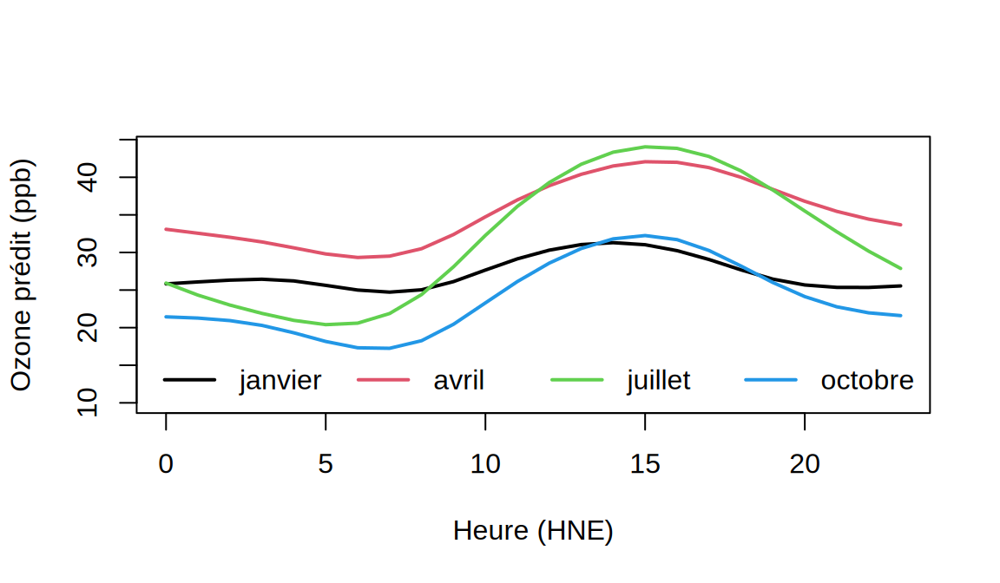
amplitude <- apply(cycles, 2, function(v) diff(range(v)))
round(amplitude, 1)janvier avril juillet octobre
6.6 12.7 23.6 15.0 L’amplitude du cycle journalier est d’environ 7 ppb en janvier et de 24 ppb en juillet. Le modèle additif impose la même amplitude toute l’année et la sous-estime donc en été et la surestime en hiver. C’est cohérent avec la photochimie : la production d’ozone en après-midi dépend du rayonnement solaire, beaucoup plus intense en été. On remarque aussi que le niveau moyen est plus élevé au printemps qu’en été, mais avec un cycle moins marqué.
- La valeur-p du terme
tiest pratiquement nulle. Elle repose toutefois sur l’hypothèse d’erreurs indépendantes, alors que les mesures horaires sont fortement corrélées (exercice précédent). Le nombre effectif d’observations indépendantes est bien inférieur à 8 727, de sorte que les erreurs-types sont trop petites et les valeurs-p trop optimistes. Ici, l’effet est assez grand, et assez cohérent avec la physique, pour qu’on le retienne, mais une interaction plus subtile mériterait une méthode qui tient compte de la corrélation, par exemple un modèle à erreurs autocorrélées (gammdansmgcv) ou une validation croisée par blocs de jours.
Exercice 5. Retour à l’énoncé
- On agrège les données par jour, puis on ajuste le modèle :
par.jour <- longueuil |>
mutate(depasse = as.integer(O3 > 40)) |>
group_by(jour) |>
summarise(n = n(), dep = sum(depasse))
summary(par.jour$n) Min. 1st Qu. Median Mean 3rd Qu. Max.
18.00 24.00 24.00 23.91 24.00 24.00 g.dep <- gam(cbind(dep, n - dep) ~ s(jour, bs = "cc", k = 20), family = binomial,
data = par.jour, knots = list(jour = c(0.5, 365.5)))
round(summary(g.dep)$s.table, 2) edf Ref.df Chi.sq p-value
s(jour) 17.89 18 380.58 0grille.j <- data.frame(jour = 1:365)
pr <- predict(g.dep, grille.j, se.fit = TRUE)
plot(par.jour$jour, par.jour$dep / par.jour$n, col = "grey60",
xlab = "Jour de l'année", ylab = "Proportion d'heures > 40 ppb")
lines(grille.j$jour, plogis(pr$fit), lwd = 2)
lines(grille.j$jour, plogis(pr$fit + 2 * pr$se.fit), lty = 2)
lines(grille.j$jour, plogis(pr$fit - 2 * pr$se.fit), lty = 2)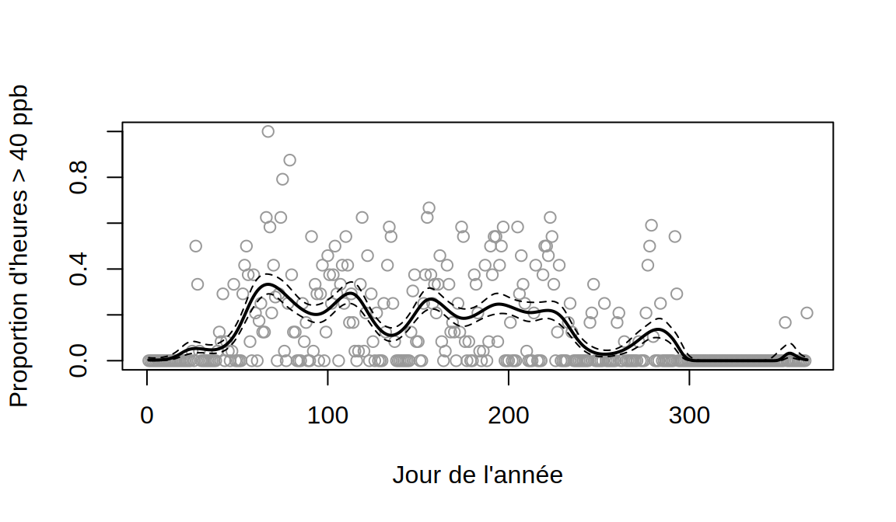
Les dépassements sont pratiquement absents de novembre à janvier. Ils deviennent fréquents de mars à août, avec plusieurs sommets, puis se raréfient en septembre et en octobre. La proportion journalière observée est très dispersée autour de la courbe : de nombreux jours n’ont aucune heure de dépassement, alors que d’autres en comptent plus de la moitié. La courbe elle-même ondule beaucoup, avec presque tous ses degrés de liberté, ce qui annonce le problème de la question suivante.
- On calcule la dispersion :
phi.dep <- sum(residuals(g.dep, type = "pearson")^2) / df.residual(g.dep)
phi.dep[1] 5.893197La dispersion estimée vaut environ 5,9, alors que le modèle binomial la fixe à 1 : il y a une forte surdispersion. Le modèle binomial traite les 24 heures d’une journée comme 24 essais indépendants de même probabilité. En réalité, une journée chaude et ensoleillée produit des dépassements pendant plusieurs heures consécutives, et une journée nuageuse n’en produit aucun : les heures d’une même journée sont fortement corrélées, et la variance du nombre de dépassements dépasse largement \(m_i\pi_i(1-\pi_i)\).
- On réajuste le modèle avec la famille quasibinomiale :
g.dep.q <- gam(cbind(dep, n - dep) ~ s(jour, bs = "cc", k = 20), family = quasibinomial,
data = par.jour, knots = list(jour = c(0.5, 365.5)))
round(summary(g.dep.q)$s.table, 2) edf Ref.df F p-value
s(jour) 13.55 18 4.03 0g.dep.q$scale[1] 6.359484Avec la famille quasibinomiale, le paramètre de dispersion est estimé (environ 6,4) et le critère de lissage passe de l’UBRE, qui suppose \(\phi = 1\), à la GCV. Les degrés de liberté effectifs diminuent, de 17,9 à 13,6 : en supposant à tort \(\phi = 1\), l’UBRE prend la variabilité d’un jour à l’autre pour du signal et sous-lisse. Les erreurs-types sont multipliées par environ \(\sqrt{\hat\phi}\approx 2{,}5\), de sorte que les bandes sont nettement plus larges. C’est le même mécanisme que pour la surdispersion dans les GLM (3 Modèles linéaires généralisés (GLM)), avec en plus un effet sur le choix du lissage.
Exercice 6. Retour à l’énoncé
- On place la pénalité de la fonction lisse dans une matrice nulle de la taille de \(\boldsymbol\beta\) :
X <- model.matrix(g.arbres)
y <- arbres$height_m
lisse <- g.arbres$smooth[[1]]
indices <- lisse$first.para:lisse$last.para
S <- matrix(0, ncol(X), ncol(X))
S[indices, indices] <- g.arbres$sp[1] * lisse$S[[1]]
beta <- solve(crossprod(X) + S, crossprod(X, y))
max(abs(beta - coef(g.arbres)))[1] 3.126677e-11L’écart maximal est de l’ordre de l’erreur d’arrondi : pour \(\lambda\) fixé, l’estimateur d’un modèle additif gaussien est bien l’estimateur de type ridge du 9 Modèles additifs et modèles additifs généralisés (GAM). Les coefficients paramétriques (ordonnée à l’origine et espèces) ne sont pas pénalisés, ce qui correspond aux lignes et colonnes nulles de \(\boldsymbol S\).
- On calcule la matrice d’influence :
A <- X %*% solve(crossprod(X) + S, t(X))
c(trace = sum(diag(A)), edf = sum(g.arbres$edf)) trace edf
6.675875 6.675875 Les deux valeurs coïncident : gam calcule les degrés de liberté effectifs comme la trace de la matrice d’influence, répartie entre les coefficients. Les 4 paramètres non pénalisés comptent chacun pour 1, et le reste revient à la fonction du diamètre.
- On applique les définitions du 9 Modèles additifs et modèles additifs généralisés (GAM) :
n <- length(y)
y.chap <- as.vector(A %*% y)
gcv <- n * sum((y - y.chap)^2) / (n - sum(diag(A)))^2
ocv <- mean(((y - y.chap) / (1 - diag(A)))^2)
c(gcv = gcv, gam = g.arbres$gcv.ubre, ocv = ocv) gcv gam.GCV.Cp ocv
5.524598 5.524598 5.614425 La GCV calculée à la main est exactement celle que rapporte gam, qui l’a minimisée pour choisir \(\lambda\). Le critère OCV est un peu plus grand, parce que quelques observations ont un levier \(A_{ii}\) nettement supérieur à la moyenne : les deux plus gros arbres ont un levier sept à dix fois plus grand que la moyenne \(\mathrm{Tr}(\boldsymbol A)/n\). La GCV, qui remplace chaque \(A_{ii}\) par cette moyenne, atténue leur poids.
Exercices théoriques
Exercice 1. Retour à l’énoncé
Dans les deux cas, \(\alpha + f_1(x_{i1}) + f_2(x_{i2})\) est inchangé : \(c - c = 0\) dans le premier, \(-c + c = 0\) dans le second. Une infinité de paramétrisations décrivent donc le même modèle, et les données ne peuvent pas les distinguer.
En sommant \(E[Y_i] = \alpha + f_1(x_{i1}) + f_2(x_{i2})\) sur \(i\) et en utilisant les contraintes, on obtient \(\sum_iE[Y_i] = n\alpha\), d’où \(\alpha = \frac1n\sum_iE[Y_i]\). La contrainte fixe donc la constante : on ne peut plus la déplacer d’une fonction à l’autre. De même, si \(\sum_i\hat Y_i = \sum_iY_i\) (ce qui est le cas lorsque l’ordonnée à l’origine n’est pas pénalisée, puisque les équations d’estimation pour \(\alpha\) imposent que les résidus somment à 0), alors \(n\hat\alpha = \sum_i\hat Y_i = \sum_iY_i\), soit \(\hat\alpha = \bar Y\).
Chaque \(\hat f_j\) est une fonction centrée : elle représente l’écart à la moyenne attribuable à \(x_j\), les autres variables étant fixées. Seules sa forme et ses différences entre deux valeurs de \(x_j\) s’interprètent (\(\hat f_j(b) - \hat f_j(a)\) est l’effet estimé du passage de \(a\) à \(b\)), et non son niveau absolu. Pour obtenir une prédiction, on additionne \(\hat\alpha\) et toutes les fonctions.
Exercice 2. Retour à l’énoncé
Avec \(\eta_i = \log\{\pi_i/(1-\pi_i)\}\), on a \(\partial\eta_i/\partial\pi_i = 1/\{\pi_i(1-\pi_i)\}\), donc \(\partial\pi_i/\partial\eta_i = \pi_i(1-\pi_i)\). Comme \(V(\pi_i) = \pi_i(1-\pi_i)\), \[z_i = \eta_i + \frac{y_i-\pi_i}{\pi_i(1-\pi_i)}, \qquad w_i = \frac{\{\pi_i(1-\pi_i)\}^2}{\pi_i(1-\pi_i)} = \pi_i(1-\pi_i).\] On retrouve les poids de la régression logistique (exercice 3 du niveau facile du chapitre 2).
Avec \(\eta_i = \log\mu_i\), on a \(\partial\eta_i/\partial\mu_i = 1/\mu_i\) et \(V(\mu_i) = \mu_i\), d’où \[z_i = \eta_i + \frac{y_i-\mu_i}{\mu_i}, \qquad w_i = \frac{\mu_i^2}{\mu_i} = \mu_i.\]
Avec le lien identité et la loi normale, \(\eta_i = \mu_i\), \(\partial\eta_i/\partial\mu_i = 1\) et \(V(\mu_i) = 1\). La réponse de travail est donc \(z_i = \mu_i^{(m)} + (y_i - \mu_i^{(m)}) = y_i\) et les poids valent \(w_i = 1\), quelle que soit l’itération. La première itération ajuste donc le modèle additif pénalisé aux \(y_i\) avec des poids égaux, ce qui donne directement \(\hb = (\boldsymbol X^\top\boldsymbol X+\sum_j\lambda_j\boldsymbol S_j)^{-1}\boldsymbol X^\top\boldsymbol Y\). L’itération suivante reproduit la même solution.
Exercice 3. Retour à l’énoncé
Avec \(A_{ii} = \mathrm{Tr}(\boldsymbol A)/n\) pour tout \(i\), chaque dénominateur devient \(\{1-\mathrm{Tr}(\boldsymbol A)/n\}^2 = \{n-\mathrm{Tr}(\boldsymbol A)\}^2/n^2\), et \[\frac1n\sum_i\frac{(y_i-\hat y_i)^2\,n^2}{\{n-\mathrm{Tr}(\boldsymbol A)\}^2} = \frac{n\,RSS}{\{n-\mathrm{Tr}(\boldsymbol A)\}^2} = GCV.\]
On écrit \(GCV = \frac{RSS}{n}\{1-\mathrm{Tr}(\boldsymbol A)/n\}^{-2}\) et on utilise \((1-x)^{-2}\approx 1+2x\) pour \(x\) petit. Le critère UBRE de la déviance gaussienne (\(D = RSS\)) vaut \[UBRE = \frac{RSS}{n} - \sigma^2 + \frac{2\sigma^2\,\mathrm{Tr}(\boldsymbol A)}{n}.\] Au terme constant \(-\sigma^2\) près, qui ne change pas le \(\lambda\) choisi, les deux critères ont la même forme : l’erreur d’entraînement plus une pénalité proportionnelle aux degrés de liberté effectifs. La GCV remplace \(\sigma^2\), inconnu, par l’estimation \(RSS/n\). C’est la même correction d’optimisme que celle de l’exercice 2 du niveau difficile du chapitre 5, avec \(\mathrm{Tr}(\boldsymbol A)\) à la place de \(p+1\).
La GCV ne dépend des \(A_{ii}\) que par leur somme, qui se calcule sans former la matrice \(\boldsymbol A\) de taille \(n\times n\). Elle est aussi moins sensible aux observations de levier très élevé, dont le terme \(1/(1-A_{ii})^2\) peut dominer \(VC_{(n)}\). Enfin, contrairement à \(VC_{(n)}\), elle est invariante par rotation des données (\(\boldsymbol Y\mapsto\boldsymbol Q\boldsymbol Y\), \(\boldsymbol X\mapsto\boldsymbol Q\boldsymbol X\) avec \(\boldsymbol Q\) orthogonale), ce qui a motivé son introduction.
Exercice 4. Retour à l’énoncé
Par le théorème de Bayes, la densité a posteriori est proportionnelle au produit de la vraisemblance et de la densité a priori : \[\pi(\boldsymbol\beta\mid\boldsymbol Y)\propto\exp\left\{-\frac{\|\boldsymbol Y-\boldsymbol X\boldsymbol\beta\|^2}{2\sigma^2}\right\}\exp\left\{-\frac{\boldsymbol\beta^\top\boldsymbol P\boldsymbol\beta}{2\sigma^2}\right\},\] d’où le résultat. Maximiser cette densité revient à minimiser les moindres carrés pénalisés : l’estimateur pénalisé est le mode a posteriori.
Notons \(\boldsymbol G = \boldsymbol X^\top\boldsymbol X+\boldsymbol P\) et \(\hb = \boldsymbol G^{-1}\boldsymbol X^\top\boldsymbol Y\). En développant, \[\|\boldsymbol Y-\boldsymbol X\boldsymbol\beta\|^2 + \boldsymbol\beta^\top\boldsymbol P\boldsymbol\beta = \boldsymbol\beta^\top\boldsymbol G\boldsymbol\beta - 2\boldsymbol\beta^\top\boldsymbol X^\top\boldsymbol Y + \boldsymbol Y^\top\boldsymbol Y = (\boldsymbol\beta-\hb)^\top\boldsymbol G(\boldsymbol\beta-\hb) + \boldsymbol Y^\top\boldsymbol Y - \hb^\top\boldsymbol G\hb,\] puisque \(\boldsymbol G\hb = \boldsymbol X^\top\boldsymbol Y\). Les deux derniers termes ne dépendent pas de \(\boldsymbol\beta\), de sorte que \[\pi(\boldsymbol\beta\mid\boldsymbol Y)\propto\exp\left\{-\frac12(\boldsymbol\beta-\hb)^\top\left(\sigma^2\boldsymbol G^{-1}\right)^{-1}(\boldsymbol\beta-\hb)\right\},\] le noyau d’une loi \(\mathcal N(\hb,\sigma^2\boldsymbol G^{-1})\).
C’est la matrice \(\boldsymbol V_\beta = \sigma^2(\boldsymbol X^\top\boldsymbol X+\sum_j\lambda_j\boldsymbol S_j)^{-1}\) du 9 Modèles additifs et modèles additifs généralisés (GAM), plus simple que la variance fréquentiste de l’estimateur pénalisé. Les intervalles \(\hat f_j(x)\pm 1{,}96\sqrt{\hv{\hat f_j(x)}}\) tracés par
ploten découlent. Ce sont des intervalles de crédibilité a posteriori, ce qui explique qu’ils tiennent compte du biais dû à la pénalité et qu’ils aient une bonne couverture fréquentiste en moyenne sur les \(x\). L’exercice 3 du niveau moyen du chapitre 6 montrait que ridge revient à ajouter des pseudo-observations nulles pour chaque coefficient : la loi a priori centrée en \(\boldsymbol 0\) joue exactement ce rôle. Ridge, les splines de lissage et les modèles additifs partagent donc la même structure : une estimation par moindres carrés pénalisés, qui est aussi une moyenne a posteriori.
Chapitre 10 : Données corrélées
Niveau facile
Exercice 1. Retour à l’énoncé
On a \(Var[\bar Y] = N^{-2}\sum_{i,j}\sum_{l,k}Cov[Y_{ij},Y_{lk}]\). Les covariances entre groupes sont nulles. Dans chaque groupe, il y a \(c\) variances \(\sigma_Y^2\) et \(c(c-1)\) covariances \(\rho\sigma_Y^2\), de sorte que \[ Var[\bar Y] = \frac{m\left\{c\sigma_Y^2 + c(c-1)\rho\sigma_Y^2\right\}}{N^2} = \frac{\sigma_Y^2}{N}\left\{1+(c-1)\rho\right\}, \] puisque \(mc = N\). Avec \(c = 10\) et \(\rho = 0{,}3\), l’effet du plan vaut \(1 + 9\times 0{,}3 = 3{,}7\), et la taille effective est \(N/3{,}7\) : 200 observations valent environ 54 observations indépendantes.
Exercice 2. Retour à l’énoncé
\(Var[Y_{ij}] = \sigma_b^2+\sigma^2 = 4+16 = 20\) et \(Cov[Y_{ij},Y_{ik}] = Var[b_i] = 4\), puisque \(b_i\) est le seul terme aléatoire commun aux deux observations. La corrélation intraclasse vaut \(4/20 = 0{,}2\).
Les deux observations ne partagent aucun terme aléatoire, et \(b_i\), \(b_l\), \(\epsilon_{ij}\) et \(\epsilon_{lk}\) sont indépendants, de sorte que la covariance est nulle.
Exercice 3. Retour à l’énoncé
Le facteur de rétrécissement vaut \(n_i\sigma_b^2/(n_i\sigma_b^2+\sigma^2)\). Pour le premier groupe, il vaut \(1/(1+4) = 0{,}2\), d’où \(\hat b_1 = 0{,}4\). Pour le second, il vaut \(16/(16+4) = 0{,}8\), d’où \(\hat b_2 = 1{,}6\). Le résidu moyen du premier groupe repose sur une seule observation, dont la variance d’erreur (\(\sigma^2 = 4\)) est grande devant la variance des effets de groupe (\(\sigma_b^2 = 1\)). Le modèle juge donc que l’écart observé est surtout du bruit et le ramène fortement vers 0. Le second groupe fournit une moyenne de 16 observations, de variance \(4/16 = 0{,}25\), et son écart est presque entièrement attribué à l’effet du groupe.
Exercice 4. Retour à l’énoncé
\(Var[Y_{ij}] = d_{00}+2td_{01}+t^2d_{11}+\sigma^2\). Au jour 0, elle vaut \(612+655 = 1\,267\), soit un écart-type d’environ 36 ms. Au jour 9, elle vaut \(612+2\times 9\times 9{,}6+81\times 35{,}1+655\approx 4\,283\), soit un écart-type d’environ 65 ms. La pente aléatoire fait croître la dispersion entre sujets avec le temps, puisque les droites individuelles s’écartent les unes des autres.
\(Cov[Y_{i0},Y_{i9}] = Cov[b_{0i},\,b_{0i}+9b_{1i}] = d_{00}+9d_{01} = 612+86{,}4 = 698{,}4\), d’où la corrélation \[ \frac{698{,}4}{\sqrt{1\,267\times 4\,283}}\approx 0{,}30. \] Pour les jours 8 et 9, \(Cov = d_{00}+17d_{01}+72d_{11}\approx 3\,302\), \(Var[Y_{i8}]\approx 3\,667\), et la corrélation vaut environ \(0{,}83\). Avec une ordonnée à l’origine aléatoire seule, la corrélation entre deux mesures d’un même sujet est la même pour toutes les paires de jours : \(1\,378/(1\,378+960)\approx 0{,}59\), une valeur intermédiaire. Avec une pente aléatoire, elle dépend des deux jours : la corrélation des jours 8 et 9 est beaucoup plus forte que celle des jours 0 et 9, parce que la pente du sujet, qui domine la variance en fin d’étude, agit presque de la même façon sur les deux.
Exercice 5. Retour à l’énoncé
Avec la loi \(\chi^2_1\), \(P(\chi^2_1\geq 3{,}2)\approx 0{,}074\), et on ne rejette pas \(H_0\) au seuil de 5 %. Avec le mélange, la valeur-p vaut \(\frac12\times 0 + \frac12\times 0{,}074 = 0{,}037\) (la masse en 0 ne contribue pas, puisque \(3{,}2>0\)), et on rejette \(H_0\). Le test usuel est conservateur : il conclut moins souvent à un effet de groupe qu’il ne le devrait.
On cherche \(c\) tel que \(\frac12P(\chi^2_1\geq c) = 0{,}05\), soit \(P(\chi^2_1\geq c) = 0{,}10\). La valeur critique est donc le quantile d’ordre \(0{,}90\) de la loi \(\chi^2_1\), environ \(2{,}71\), au lieu de \(3{,}84\).
Niveau moyen
Exercice 1. Retour à l’énoncé
Notons \(a = \sigma_b^2/(\sigma^2+n_i\sigma_b^2)\) et utilisons \(\boldsymbol 1^\top\boldsymbol 1 = n_i\) : \[ \left(\sigma^2\boldsymbol I + \sigma_b^2\boldsymbol 1\boldsymbol 1^\top\right)\frac{1}{\sigma^2}\left(\boldsymbol I - a\boldsymbol 1\boldsymbol 1^\top\right) = \boldsymbol I + \left(\frac{\sigma_b^2}{\sigma^2} - a - \frac{n_i\sigma_b^2a}{\sigma^2}\right)\boldsymbol 1\boldsymbol 1^\top. \] Le coefficient entre parenthèses vaut \(\sigma_b^2/\sigma^2 - a(\sigma^2+n_i\sigma_b^2)/\sigma^2 = \sigma_b^2/\sigma^2 - \sigma_b^2/\sigma^2 = 0\), d’où le résultat. C’est un cas particulier de la formule de Sherman-Morrison (exercice 1 du niveau difficile du chapitre 5).
On calcule \[ \boldsymbol 1^\top\boldsymbol V_i^{-1} = \frac{1}{\sigma^2}\left(\boldsymbol 1^\top - an_i\boldsymbol 1^\top\right) = \frac{1}{\sigma^2}\cdot\frac{\sigma^2}{\sigma^2+n_i\sigma_b^2}\,\boldsymbol 1^\top = \frac{\boldsymbol 1^\top}{\sigma^2+n_i\sigma_b^2}. \] Comme \(\boldsymbol 1^\top(\boldsymbol y_i-\boldsymbol X_i\hb) = n_i(\bar y_i - \bar{\boldsymbol x}_i^\top\hb)\), \[ \hat b_i = \frac{\sigma_b^2\,n_i(\bar y_i-\bar{\boldsymbol x}_i^\top\hb)}{\sigma^2+n_i\sigma_b^2} = \frac{n_i\sigma_b^2}{n_i\sigma_b^2+\sigma^2}\left(\bar y_i-\bar{\boldsymbol x}_i^\top\hb\right). \]
Exercice 2. Retour à l’énoncé
La dérivée du critère par rapport à \(b\) vaut \(-2\sum_j(r_j-b) + 2\lambda b = -2n_i\bar r + 2(n_i+\lambda)b\), qui s’annule en \(\hat b = n_i\bar r/(n_i+\lambda)\) (un minimum, puisque la dérivée seconde \(2(n_i+\lambda)\) est positive). Avec \(\lambda = \sigma^2/\sigma_b^2\), \[ \hat b = \frac{n_i\bar r}{n_i+\sigma^2/\sigma_b^2} = \frac{n_i\sigma_b^2}{n_i\sigma_b^2+\sigma^2}\,\bar r, \] le BLUP de l’exercice précédent. Quand \(\sigma_b^2\to\infty\), \(\lambda\to 0\) et \(\hat b\to\bar r\) : sans pénalité, chaque groupe a son propre effet fixe. Quand \(\sigma_b^2\to 0\), \(\lambda\to\infty\) et \(\hat b\to 0\) : tous les groupes sont confondus, comme dans le modèle linéaire ordinaire. Le modèle mixte est l’intermédiaire entre ces deux extrêmes, et les données choisissent le degré de mise en commun par l’estimation de \(\sigma_b^2\).
Exercice 3. Retour à l’énoncé
Conditionnellement à \(b_i\), \(P(Y_{ij} = 1\mid b_i) = P(Z\leq\eta_{ij}+b_i\mid b_i)\). En prenant l’espérance par rapport à \(b_i\), \[ P(Y_{ij} = 1) = P(Z\leq\eta_{ij}+b_i) = P(Z - b_i\leq\eta_{ij}). \] Comme \(Z\) et \(b_i\) sont des variables normales indépendantes, \(Z-b_i\sim\mathcal N(0,1+\sigma_b^2)\), d’où \(P(Y_{ij} = 1) = \Phi\left(\eta_{ij}/\sqrt{1+\sigma_b^2}\right)\).
La probabilité marginale suit donc encore un modèle probit, de prédicteur linéaire \(\boldsymbol x_{ij}^\top\boldsymbol\beta/\sqrt{1+\sigma_b^2}\), ce qui donne les coefficients marginaux annoncés. Pour \(\sigma_b = 1\), le facteur vaut \(1/\sqrt2\approx 0{,}71\) : l’effet d’une variable sur la probabilité moyenne de la population est d’environ 30 % plus faible que son effet pour un groupe donné. Ce n’est pas une contradiction, mais deux questions différentes.
Exercice 4. Retour à l’énoncé
À des constantes près qui ne dépendent pas de \(b\), \[ h_i(b) = -\frac{1}{2\sigma^2}\sum_{j=1}^{n_i}(r_j-b)^2 - \frac{b^2}{2\sigma_b^2}, \] un polynôme de degré 2 en \(b\). Son développement de Taylor d’ordre 2 autour du mode est donc exact, et l’intégrale d’une exponentielle de polynôme du second degré se calcule exactement : c’est la formule de l’approximation de Laplace. Ce résultat explique pourquoi l’estimation d’un modèle linéaire mixte ne demande aucune approximation numérique de l’intégrale.
On a \[ h_i'(b) = \frac{1}{\sigma^2}\sum_j(r_j-b) - \frac{b}{\sigma_b^2} = \frac{n_i\bar r}{\sigma^2} - b\left(\frac{n_i}{\sigma^2}+\frac{1}{\sigma_b^2}\right), \] qui s’annule en \[ \tilde b_i = \frac{n_i\bar r/\sigma^2}{n_i/\sigma^2+1/\sigma_b^2} = \frac{n_i\sigma_b^2}{n_i\sigma_b^2+\sigma^2}\,\bar r, \] le BLUP. Ensuite, \(-h_i''(b) = n_i/\sigma^2+1/\sigma_b^2\), d’où \[ \frac{1}{-h_i''(\tilde b_i)} = \frac{\sigma^2\sigma_b^2}{n_i\sigma_b^2+\sigma^2}. \] Par ailleurs, la formule générale du 10 Données corrélées : modèles mixtes et GEE donne \(Var[b_i\mid\boldsymbol y_i] = \sigma_b^2 - \sigma_b^4\boldsymbol 1^\top\boldsymbol V_i^{-1}\boldsymbol 1\), et l’exercice 1 du niveau moyen donne \(\boldsymbol 1^\top\boldsymbol V_i^{-1}\boldsymbol 1 = n_i/(\sigma^2+n_i\sigma_b^2)\), d’où \[ Var[b_i\mid\boldsymbol y_i] = \sigma_b^2 - \frac{n_i\sigma_b^4}{\sigma^2+n_i\sigma_b^2} = \frac{\sigma^2\sigma_b^2}{n_i\sigma_b^2+\sigma^2}. \] Les deux expressions coïncident : dans le cas normal, la loi a posteriori de \(b_i\) est exactement la loi normale de l’approximation de Laplace. Pour un GLMM, cette loi normale n’est qu’une approximation de la loi conditionnelle de \(b_i\).
Niveau difficile
Exercice 1. Retour à l’énoncé
Avec le lien identité, \(\boldsymbol\mu_i = \boldsymbol X_i\boldsymbol\beta\) et \(\boldsymbol\Delta_i = \boldsymbol X_i\). Avec \(V(\mu) = 1\) et \(\boldsymbol R_i = \boldsymbol I\), \(\boldsymbol V_i = \phi\boldsymbol I\), et les équations deviennent \(\phi^{-1}\sum_i\boldsymbol X_i^\top(\boldsymbol y_i-\boldsymbol X_i\boldsymbol\beta) = \boldsymbol 0\), soit \(\boldsymbol X^\top(\boldsymbol y-\boldsymbol X\boldsymbol\beta) = \boldsymbol 0\) : ce sont les équations normales, dont la solution est l’estimateur des moindres carrés.
Ici, \(\boldsymbol B = \phi^{-1}\sum_i\boldsymbol X_i^\top\boldsymbol X_i = \phi^{-1}\boldsymbol X^\top\boldsymbol X\), et le terme central vaut \(\phi^{-2}\sum_i\boldsymbol X_i^\top\boldsymbol e_i\boldsymbol e_i^\top\boldsymbol X_i\). Les facteurs \(\phi\) s’annulent, ce qui donne la formule annoncée. L’estimateur usuel suppose \(Var[\boldsymbol y_i] = \sigma^2\boldsymbol I\) et remplace le terme central par \(\hat\sigma^2\boldsymbol X^\top\boldsymbol X\). Le sandwich estimé, lui, la variance de \(\boldsymbol X_i^\top\boldsymbol y_i\) par le produit observé \(\boldsymbol X_i^\top\boldsymbol e_i\boldsymbol e_i^\top\boldsymbol X_i\), sans hypothèse sur la structure de \(Var[\boldsymbol y_i]\). Comme ces termes sont indépendants d’un groupe à l’autre, leur somme estime de façon convergente la variance du score quand \(m\to\infty\).
Avec \(n_i = 1\), \(\boldsymbol X_i^\top\boldsymbol e_i\boldsymbol e_i^\top\boldsymbol X_i = e_i^2\boldsymbol x_i\boldsymbol x_i^\top\), et on obtient l’estimateur de White, \[ (\boldsymbol X^\top\boldsymbol X)^{-1}\left(\sum_{i=1}^ne_i^2\boldsymbol x_i\boldsymbol x_i^\top\right)(\boldsymbol X^\top\boldsymbol X)^{-1}, \] qui reste valide lorsque la variance des erreurs n’est pas constante. Il relâche l’hypothèse d’homoscédasticité, alors que la version par groupes relâche en plus l’indépendance à l’intérieur des groupes.
Exercice 2. Retour à l’énoncé
- On suit la recette du 1 Simulations de Monte Carlo :
library(lme4)
set.seed(4300)
B <- 300; m <- 20; c.grp <- 10
couv <- t(replicate(B, {
groupe <- rep(1:m, each = c.grp)
x <- rep(rnorm(m), each = c.grp)
y <- x + rep(rnorm(m, sd = sqrt(0.3)), each = c.grp) + rnorm(m * c.grp, sd = sqrt(0.7))
ic.lm <- confint(lm(y ~ x))["x", ]
mod <- lmer(y ~ x + (1 | groupe))
est <- fixef(mod)[["x"]]
et <- sqrt(vcov(mod)["x", "x"])
c(lm = ic.lm[[1]] <= 1 & 1 <= ic.lm[[2]],
lmer.z = abs(est - 1) <= qnorm(0.975) * et,
lmer.t = abs(est - 1) <= qt(0.975, df = m - 2) * et)
}))
couverture <- colMeans(couv)
rbind(couverture = couverture, erreur.type.MC = sqrt(couverture * (1 - couverture) / B)) lm lmer.z lmer.t
couverture 0.66666667 0.90333333 0.93333333
erreur.type.MC 0.02721655 0.01706089 0.01440165- L’intervalle de
lma une couverture d’environ 67 %, très loin de 95 %. La variable explicative est constante dans chaque groupe, et toute l’information sur la pente vient des 20 moyennes de groupe. L’effet du plan vaut \(1+(c-1)\rho = 1+9\times 0{,}3 = 3{,}7\), de sorte que l’erreur-type naïve est trop petite d’un facteur proche de \(\sqrt{3{,}7}\approx 1{,}9\). Le modèle mixte corrige l’essentiel du problème. Sa couverture avec le quantile normal (90 %) reste un peu faible, parce qu’avec 20 groupes seulement, l’incertitude sur les composantes de variance n’est pas négligeable. Le quantile de Student à \(m-2\) degrés de liberté, qui reflète le nombre de groupes plutôt que le nombre d’observations, ramène la couverture près du niveau nominal (93 %, compte tenu de l’erreur de Monte Carlo).
Exercice 3. Retour à l’énoncé
- et b) On ajuste les deux modèles, puis on calcule les probabilités marginales du GLMM par intégration numérique.
library(lme4)
library(geepack)
data(ohio, package = "geepack")
glmm <- glmer(resp ~ age + smoke + (1 | id), family = binomial, data = ohio, nAGQ = 25)
gee <- geeglm(resp ~ age + smoke, id = id, family = binomial,
corstr = "exchangeable", data = ohio)
s.b <- attr(VarCorr(glmm)$id, "stddev")[[1]]
grille <- expand.grid(age = -2:1, smoke = 0:1)
X <- model.matrix(~ age + smoke, grille)
eta.glmm <- as.vector(X %*% fixef(glmm))
# proportions observées, dans l'ordre de la grille (age varie le plus vite)
observe <- ohio |>
group_by(smoke, age) |>
summarise(observe = mean(resp), .groups = "drop")
grille <- grille |>
mutate(GLMM.marginal = sapply(eta.glmm, function(e)
integrate(function(u) plogis(e + u) * dnorm(u, 0, s.b), -Inf, Inf)$value),
GEE = plogis(as.vector(X %*% coef(gee))),
observe = observe$observe,
GLMM.typique = plogis(eta.glmm))
round(grille, 3) age smoke GLMM.marginal GEE observe GLMM.typique
1 -2 0 0.162 0.161 0.160 0.060
2 -1 0 0.147 0.146 0.149 0.051
3 0 0 0.133 0.132 0.143 0.043
4 1 0 0.120 0.120 0.106 0.036
5 -2 1 0.199 0.200 0.166 0.087
6 -1 1 0.182 0.182 0.209 0.074
7 0 1 0.166 0.166 0.187 0.063
8 1 1 0.151 0.151 0.139 0.053Les probabilités marginales du GLMM et celles du GEE ne diffèrent que de quelques millièmes, et toutes deux suivent de près les proportions observées. Les deux modèles décrivent donc la même moyenne marginale, même si leurs coefficients sont très différents. Les petits écarts avec les proportions observées viennent de ce que les deux modèles imposent un effet linéaire de l’âge et un effet du tabagisme maternel identique à tous les âges, sur l’échelle logit.
- La probabilité de l’enfant typique, \(\mathrm{logit}^{-1}(\boldsymbol x^\top\hb)\), est de 4 à 9 % environ, alors que les proportions observées sont de 11 à 21 %. Avec \(\hat\sigma_b\approx2,2\), la loi des effets aléatoires est très étalée sur l’échelle logit. La plupart des enfants ont une probabilité inférieure à celle de l’enfant typique ou proche d’elle, mais les enfants du haut de la distribution ont des probabilités beaucoup plus grandes. Plus précisément, pour \(\eta<0\), on a \(\{\mathrm{logit}^{-1}(\eta+u)+\mathrm{logit}^{-1}(\eta-u)\}/2\geq\mathrm{logit}^{-1}(\eta)\) pour tout \(u\). Comme la loi de \(b\) est symétrique, la moyenne des probabilités dépasse donc la probabilité évaluée en \(b = 0\), et nettement quand \(\sigma_b\) est grand. La probabilité de l’enfant typique n’est donc pas une estimation de la fréquence de la respiration sifflante dans la population.
Maron, Martine. 2007. « Threshold effect of eucalypt density on an aggressive avian competitor ». Biological Conservation 136: 100‑107.